<!DOCTYPE html>
<html xmlns="http://www.w3.org/1999/xhtml" lang="en" xml:lang="en"><head>

<meta charset="utf-8">
<meta name="generator" content="quarto-1.7.32">

<meta name="viewport" content="width=device-width, initial-scale=1.0, user-scalable=yes">

<meta name="author" content="Sadamori Kojaku">
<meta name="dcterms.date" content="2025-11-24">

<title>2D Data Visualization – Applied Soft Computing</title>
<style>
code{white-space: pre-wrap;}
span.smallcaps{font-variant: small-caps;}
div.columns{display: flex; gap: min(4vw, 1.5em);}
div.column{flex: auto; overflow-x: auto;}
div.hanging-indent{margin-left: 1.5em; text-indent: -1.5em;}
ul.task-list{list-style: none;}
ul.task-list li input[type="checkbox"] {
  width: 0.8em;
  margin: 0 0.8em 0.2em -1em; /* quarto-specific, see https://github.com/quarto-dev/quarto-cli/issues/4556 */ 
  vertical-align: middle;
}
/* CSS for syntax highlighting */
html { -webkit-text-size-adjust: 100%; }
pre > code.sourceCode { white-space: pre; position: relative; }
pre > code.sourceCode > span { display: inline-block; line-height: 1.25; }
pre > code.sourceCode > span:empty { height: 1.2em; }
.sourceCode { overflow: visible; }
code.sourceCode > span { color: inherit; text-decoration: inherit; }
div.sourceCode { margin: 1em 0; }
pre.sourceCode { margin: 0; }
@media screen {
div.sourceCode { overflow: auto; }
}
@media print {
pre > code.sourceCode { white-space: pre-wrap; }
pre > code.sourceCode > span { text-indent: -5em; padding-left: 5em; }
}
pre.numberSource code
  { counter-reset: source-line 0; }
pre.numberSource code > span
  { position: relative; left: -4em; counter-increment: source-line; }
pre.numberSource code > span > a:first-child::before
  { content: counter(source-line);
    position: relative; left: -1em; text-align: right; vertical-align: baseline;
    border: none; display: inline-block;
    -webkit-touch-callout: none; -webkit-user-select: none;
    -khtml-user-select: none; -moz-user-select: none;
    -ms-user-select: none; user-select: none;
    padding: 0 4px; width: 4em;
  }
pre.numberSource { margin-left: 3em;  padding-left: 4px; }
div.sourceCode
  {   }
@media screen {
pre > code.sourceCode > span > a:first-child::before { text-decoration: underline; }
}
</style>


<script src="../site_libs/quarto-nav/quarto-nav.js"></script>
<script src="../site_libs/quarto-nav/headroom.min.js"></script>
<script src="../site_libs/clipboard/clipboard.min.js"></script>
<script src="../site_libs/quarto-search/autocomplete.umd.js"></script>
<script src="../site_libs/quarto-search/fuse.min.js"></script>
<script src="../site_libs/quarto-search/quarto-search.js"></script>
<meta name="quarto:offset" content="../">
<link href="../m02-visualization/highd-data.html" rel="next">
<link href="../m02-visualization/1d-data.html" rel="prev">
<script src="../site_libs/quarto-html/quarto.js" type="module"></script>
<script src="../site_libs/quarto-html/tabsets/tabsets.js" type="module"></script>
<script src="../site_libs/quarto-html/popper.min.js"></script>
<script src="../site_libs/quarto-html/tippy.umd.min.js"></script>
<script src="../site_libs/quarto-html/anchor.min.js"></script>
<link href="../site_libs/quarto-html/tippy.css" rel="stylesheet">
<link href="../site_libs/quarto-html/quarto-syntax-highlighting-0348920b7671f696dc9078d39bff215e.css" rel="stylesheet" id="quarto-text-highlighting-styles">
<script src="../site_libs/bootstrap/bootstrap.min.js"></script>
<link href="../site_libs/bootstrap/bootstrap-icons.css" rel="stylesheet">
<link href="../site_libs/bootstrap/bootstrap-b8a9bfad7ca18893f6a3351e12995b20.min.css" rel="stylesheet" append-hash="true" id="quarto-bootstrap" data-mode="light">
<script id="quarto-search-options" type="application/json">{
  "location": "navbar",
  "copy-button": false,
  "collapse-after": 3,
  "panel-placement": "end",
  "type": "overlay",
  "limit": 50,
  "keyboard-shortcut": [
    "|"
  ],
  "language": {
    "search-no-results-text": "No results",
    "search-matching-documents-text": "matching documents",
    "search-copy-link-title": "Copy link to search",
    "search-hide-matches-text": "Hide additional matches",
    "search-more-match-text": "more match in this document",
    "search-more-matches-text": "more matches in this document",
    "search-clear-button-title": "Clear",
    "search-text-placeholder": "",
    "search-detached-cancel-button-title": "Cancel",
    "search-submit-button-title": "Submit",
    "search-label": "Search"
  }
}</script>


<link rel="stylesheet" href="../assets/custom.css">
</head>

<body class="nav-sidebar docked nav-fixed slimcontent quarto-light">

<div id="quarto-search-results"></div>
  <header id="quarto-header" class="headroom fixed-top">
    <nav class="navbar navbar-expand-lg " data-bs-theme="dark">
      <div class="navbar-container container-fluid">
      <div class="navbar-brand-container mx-auto">
    <a href="../index.html" class="navbar-brand navbar-brand-logo">
    
    </a>
    <a class="navbar-brand" href="../index.html">
    <span class="navbar-title">Applied Soft Computing</span>
    </a>
  </div>
            <div id="quarto-search" class="" title="Search"></div>
          <button class="navbar-toggler" type="button" data-bs-toggle="collapse" data-bs-target="#navbarCollapse" aria-controls="navbarCollapse" role="menu" aria-expanded="false" aria-label="Toggle navigation" onclick="if (window.quartoToggleHeadroom) { window.quartoToggleHeadroom(); }">
  <span class="navbar-toggler-icon"></span>
</button>
          <div class="collapse navbar-collapse" id="navbarCollapse">
            <ul class="navbar-nav navbar-nav-scroll me-auto">
  <li class="nav-item">
    <a class="nav-link active" href="../index.html" aria-current="page"> 
<span class="menu-text">Home</span></a>
  </li>  
  <li class="nav-item dropdown ">
    <a class="nav-link dropdown-toggle" href="#" id="nav-menu-toolkit--workflow" role="link" data-bs-toggle="dropdown" aria-expanded="false">
 <span class="menu-text">Toolkit &amp; Workflow</span>
    </a>
    <ul class="dropdown-menu" aria-labelledby="nav-menu-toolkit--workflow">    
        <li class="dropdown-header">─── Module 1 ───</li>
        <li>
    <a class="dropdown-item" href="../m01-toolkit/overview.html">
 <span class="dropdown-text">Overview</span></a>
  </li>  
        <li>
    <a class="dropdown-item" href="../m01-toolkit/git-github.html">
 <span class="dropdown-text">Git &amp; GitHub</span></a>
  </li>  
        <li>
    <a class="dropdown-item" href="../m01-toolkit/tidy-data.html">
 <span class="dropdown-text">Tidy Data</span></a>
  </li>  
        <li>
    <a class="dropdown-item" href="../m01-toolkit/data-provenance.html">
 <span class="dropdown-text">Data Provenance</span></a>
  </li>  
        <li>
    <a class="dropdown-item" href="../m01-toolkit/environments.qmd">
 <span class="dropdown-text">Environments</span></a>
  </li>  
    </ul>
  </li>
  <li class="nav-item dropdown ">
    <a class="nav-link dropdown-toggle" href="#" id="nav-menu-visualization" role="link" data-bs-toggle="dropdown" aria-expanded="false">
 <span class="menu-text">Visualization</span>
    </a>
    <ul class="dropdown-menu" aria-labelledby="nav-menu-visualization">    
        <li class="dropdown-header">─── Module 2 ───</li>
        <li>
    <a class="dropdown-item" href="../m02-visualization/overview.html">
 <span class="dropdown-text">Overview</span></a>
  </li>  
        <li>
    <a class="dropdown-item" href="../m02-visualization/principles.html">
 <span class="dropdown-text">Principles</span></a>
  </li>  
        <li>
    <a class="dropdown-item" href="../m02-visualization/dimensionality-reduction.html">
 <span class="dropdown-text">High-Dimensional Data</span></a>
  </li>  
        <li>
    <a class="dropdown-item" href="../m02-visualization/networks.html">
 <span class="dropdown-text">Networks</span></a>
  </li>  
        <li>
    <a class="dropdown-item" href="../m02-visualization/time-series.html">
 <span class="dropdown-text">Time-Series</span></a>
  </li>  
    </ul>
  </li>
  <li class="nav-item dropdown ">
    <a class="nav-link dropdown-toggle" href="#" id="nav-menu-deep-learning" role="link" data-bs-toggle="dropdown" aria-expanded="false">
 <span class="menu-text">Deep Learning</span>
    </a>
    <ul class="dropdown-menu" aria-labelledby="nav-menu-deep-learning">    
        <li class="dropdown-header">─── Module 3: Text ───</li>
        <li>
    <a class="dropdown-item" href="../m03-text/overview.html">
 <span class="dropdown-text">Overview</span></a>
  </li>  
        <li>
    <a class="dropdown-item" href="../m03-text/word2vec.md">
 <span class="dropdown-text">Word2Vec</span></a>
  </li>  
        <li>
    <a class="dropdown-item" href="../m03-text/lstm.md">
 <span class="dropdown-text">RNNs &amp; LSTMs</span></a>
  </li>  
        <li class="dropdown-header">─── Module 4: Images ───</li>
        <li>
    <a class="dropdown-item" href="../m04-images/overview.html">
 <span class="dropdown-text">Overview</span></a>
  </li>  
        <li>
    <a class="dropdown-item" href="../m04-images/cnn.md">
 <span class="dropdown-text">CNNs</span></a>
  </li>  
        <li>
    <a class="dropdown-item" href="../m04-images/resnet.md">
 <span class="dropdown-text">ResNet</span></a>
  </li>  
        <li class="dropdown-header">─── Module 5: Graphs ───</li>
        <li>
    <a class="dropdown-item" href="../m05-graphs/overview.html">
 <span class="dropdown-text">Overview</span></a>
  </li>  
        <li>
    <a class="dropdown-item" href="../m05-graphs/graph-embedding-w-word2vec.html">
 <span class="dropdown-text">Graph Embeddings</span></a>
  </li>  
        <li>
    <a class="dropdown-item" href="../m05-graphs/graph-convolutional-network.html">
 <span class="dropdown-text">GNNs</span></a>
  </li>  
    </ul>
  </li>
  <li class="nav-item dropdown ">
    <a class="nav-link dropdown-toggle" href="#" id="nav-menu-advanced-topics" role="link" data-bs-toggle="dropdown" aria-expanded="false">
 <span class="menu-text">Advanced Topics</span>
    </a>
    <ul class="dropdown-menu" aria-labelledby="nav-menu-advanced-topics">    
        <li class="dropdown-header">─── Module 6: LLMs ───</li>
        <li>
    <a class="dropdown-item" href="../m06-llms/overview.html">
 <span class="dropdown-text">Overview</span></a>
  </li>  
        <li>
    <a class="dropdown-item" href="../m06-llms/transformers.md">
 <span class="dropdown-text">Transformers</span></a>
  </li>  
        <li>
    <a class="dropdown-item" href="../m06-llms/scaling-emergence.html">
 <span class="dropdown-text">Scaling &amp; Emergence</span></a>
  </li>  
        <li class="dropdown-header">─── Module 7: Self-Supervised ───</li>
        <li>
    <a class="dropdown-item" href="../m07-self-supervised/overview.html">
 <span class="dropdown-text">Overview</span></a>
  </li>  
        <li>
    <a class="dropdown-item" href="../m07-self-supervised/contrastive-learning.html">
 <span class="dropdown-text">Contrastive Learning</span></a>
  </li>  
        <li class="dropdown-header">─── Module 8: Explainability ───</li>
        <li>
    <a class="dropdown-item" href="../m08-explainability/overview.html">
 <span class="dropdown-text">Overview</span></a>
  </li>  
        <li>
    <a class="dropdown-item" href="../m08-explainability/fairness.html">
 <span class="dropdown-text">Fairness &amp; Ethics</span></a>
  </li>  
    </ul>
  </li>
</ul>
          </div> <!-- /navcollapse -->
            <div class="quarto-navbar-tools">
  <a href="" class="quarto-reader-toggle quarto-navigation-tool px-1" onclick="window.quartoToggleReader(); return false;" title="Toggle reader mode">
  <div class="quarto-reader-toggle-btn">
  <i class="bi"></i>
  </div>
</a>
</div>
      </div> <!-- /container-fluid -->
    </nav>
  <nav class="quarto-secondary-nav">
    <div class="container-fluid d-flex">
      <button type="button" class="quarto-btn-toggle btn" data-bs-toggle="collapse" role="button" data-bs-target=".quarto-sidebar-collapse-item" aria-controls="quarto-sidebar" aria-expanded="false" aria-label="Toggle sidebar navigation" onclick="if (window.quartoToggleHeadroom) { window.quartoToggleHeadroom(); }">
        <i class="bi bi-layout-text-sidebar-reverse"></i>
      </button>
        <nav class="quarto-page-breadcrumbs" aria-label="breadcrumb"><ol class="breadcrumb"><li class="breadcrumb-item"><a href="../m02-visualization/overview.html">Module 2: Visualizing Complexity</a></li><li class="breadcrumb-item"><a href="../m02-visualization/2d-data.html">Visualizing 2D Data</a></li></ol></nav>
        <a class="flex-grow-1" role="navigation" data-bs-toggle="collapse" data-bs-target=".quarto-sidebar-collapse-item" aria-controls="quarto-sidebar" aria-expanded="false" aria-label="Toggle sidebar navigation" onclick="if (window.quartoToggleHeadroom) { window.quartoToggleHeadroom(); }">      
        </a>
      <button type="button" class="btn quarto-search-button" aria-label="Search" onclick="window.quartoOpenSearch();">
        <i class="bi bi-search"></i>
      </button>
    </div>
  </nav>
</header>
<!-- content -->
<div id="quarto-content" class="quarto-container page-columns page-rows-contents page-layout-article page-navbar">
<!-- sidebar -->
  <nav id="quarto-sidebar" class="sidebar collapse collapse-horizontal quarto-sidebar-collapse-item sidebar-navigation docked overflow-auto">
        <div class="mt-2 flex-shrink-0 align-items-center">
        <div class="sidebar-search">
        <div id="quarto-search" class="" title="Search"></div>
        </div>
        </div>
    <div class="sidebar-menu-container"> 
    <ul class="list-unstyled mt-1">
        <li class="sidebar-item sidebar-item-section">
      <div class="sidebar-item-container"> 
            <a class="sidebar-item-text sidebar-link text-start collapsed" data-bs-toggle="collapse" data-bs-target="#quarto-sidebar-section-1" role="navigation" aria-expanded="false">
 <span class="menu-text">Course Information</span></a>
          <a class="sidebar-item-toggle text-start collapsed" data-bs-toggle="collapse" data-bs-target="#quarto-sidebar-section-1" role="navigation" aria-expanded="false" aria-label="Toggle section">
            <i class="bi bi-chevron-right ms-2"></i>
          </a> 
      </div>
      <ul id="quarto-sidebar-section-1" class="collapse list-unstyled sidebar-section depth1 ">  
          <li class="sidebar-item">
  <div class="sidebar-item-container"> 
  <a href="../index.html" class="sidebar-item-text sidebar-link">
 <span class="menu-text">Home</span></a>
  </div>
</li>
          <li class="sidebar-item">
  <div class="sidebar-item-container"> 
  <a href="../course/welcome.html" class="sidebar-item-text sidebar-link">
 <span class="menu-text">Welcome</span></a>
  </div>
</li>
          <li class="sidebar-item">
  <div class="sidebar-item-container"> 
  <a href="../course/about.html" class="sidebar-item-text sidebar-link">
 <span class="menu-text">About Us</span></a>
  </div>
</li>
          <li class="sidebar-item">
  <div class="sidebar-item-container"> 
  <a href="../course/why-applied-soft-computing.html" class="sidebar-item-text sidebar-link">
 <span class="menu-text">Why applied soft computing?</span></a>
  </div>
</li>
          <li class="sidebar-item">
  <div class="sidebar-item-container"> 
  <a href="../course/discord.html" class="sidebar-item-text sidebar-link">
 <span class="menu-text">Discord</span></a>
  </div>
</li>
          <li class="sidebar-item">
  <div class="sidebar-item-container"> 
  <a href="../course/setup.html" class="sidebar-item-text sidebar-link">
 <span class="menu-text">Setup</span></a>
  </div>
</li>
          <li class="sidebar-item">
  <div class="sidebar-item-container"> 
  <a href="../course/minidora-usage.html" class="sidebar-item-text sidebar-link">
 <span class="menu-text">Using Minidora</span></a>
  </div>
</li>
          <li class="sidebar-item">
  <div class="sidebar-item-container"> 
  <a href="../course/how-to-submit-assignment.html" class="sidebar-item-text sidebar-link">
 <span class="menu-text">How to submit assignment</span></a>
  </div>
</li>
          <li class="sidebar-item">
  <div class="sidebar-item-container"> 
  <a href="../course/deliverables.html" class="sidebar-item-text sidebar-link">
 <span class="menu-text">Deliverables</span></a>
  </div>
</li>
      </ul>
  </li>
        <li class="sidebar-item sidebar-item-section">
      <div class="sidebar-item-container"> 
            <a class="sidebar-item-text sidebar-link text-start collapsed" data-bs-toggle="collapse" data-bs-target="#quarto-sidebar-section-2" role="navigation" aria-expanded="false">
 <span class="menu-text">Module 1: The Data Scientist’s Toolkit</span></a>
          <a class="sidebar-item-toggle text-start collapsed" data-bs-toggle="collapse" data-bs-target="#quarto-sidebar-section-2" role="navigation" aria-expanded="false" aria-label="Toggle section">
            <i class="bi bi-chevron-right ms-2"></i>
          </a> 
      </div>
      <ul id="quarto-sidebar-section-2" class="collapse list-unstyled sidebar-section depth1 ">  
          <li class="sidebar-item">
  <div class="sidebar-item-container"> 
  <a href="../m01-toolkit/overview.html" class="sidebar-item-text sidebar-link">
 <span class="menu-text">Overview</span></a>
  </div>
</li>
          <li class="sidebar-item">
  <div class="sidebar-item-container"> 
  <a href="../m01-toolkit/git-github.html" class="sidebar-item-text sidebar-link">
 <span class="menu-text">Version Control with Git &amp; GitHub</span></a>
  </div>
</li>
          <li class="sidebar-item">
  <div class="sidebar-item-container"> 
  <a href="../m01-toolkit/tidy-data.html" class="sidebar-item-text sidebar-link">
 <span class="menu-text">The Tidy Data Philosophy</span></a>
  </div>
</li>
          <li class="sidebar-item">
  <div class="sidebar-item-container"> 
  <a href="../m01-toolkit/data-provenance.html" class="sidebar-item-text sidebar-link">
 <span class="menu-text">Data Provenance</span></a>
  </div>
</li>
          <li class="sidebar-item">
  <div class="sidebar-item-container"> 
  <a href="../m01-toolkit/reproduceability.html" class="sidebar-item-text sidebar-link">
 <span class="menu-text">Reproducibility</span></a>
  </div>
</li>
      </ul>
  </li>
        <li class="sidebar-item sidebar-item-section">
      <div class="sidebar-item-container"> 
            <a class="sidebar-item-text sidebar-link text-start" data-bs-toggle="collapse" data-bs-target="#quarto-sidebar-section-3" role="navigation" aria-expanded="true">
 <span class="menu-text">Module 2: Visualizing Complexity</span></a>
          <a class="sidebar-item-toggle text-start" data-bs-toggle="collapse" data-bs-target="#quarto-sidebar-section-3" role="navigation" aria-expanded="true" aria-label="Toggle section">
            <i class="bi bi-chevron-right ms-2"></i>
          </a> 
      </div>
      <ul id="quarto-sidebar-section-3" class="collapse list-unstyled sidebar-section depth1 show">  
          <li class="sidebar-item">
  <div class="sidebar-item-container"> 
  <a href="../m02-visualization/overview.html" class="sidebar-item-text sidebar-link">
 <span class="menu-text">Overview</span></a>
  </div>
</li>
          <li class="sidebar-item">
  <div class="sidebar-item-container"> 
  <a href="../m02-visualization/principles.html" class="sidebar-item-text sidebar-link">
 <span class="menu-text">Principles of Effective Visualization</span></a>
  </div>
</li>
          <li class="sidebar-item">
  <div class="sidebar-item-container"> 
  <a href="../m02-visualization/1d-data.html" class="sidebar-item-text sidebar-link">
 <span class="menu-text">Visualizing 1D Data</span></a>
  </div>
</li>
          <li class="sidebar-item">
  <div class="sidebar-item-container"> 
  <a href="../m02-visualization/2d-data.html" class="sidebar-item-text sidebar-link active">
 <span class="menu-text">Visualizing 2D Data</span></a>
  </div>
</li>
          <li class="sidebar-item">
  <div class="sidebar-item-container"> 
  <a href="../m02-visualization/highd-data.html" class="sidebar-item-text sidebar-link">
 <span class="menu-text">Visualizing High-Dimensional Data</span></a>
  </div>
</li>
          <li class="sidebar-item">
  <div class="sidebar-item-container"> 
  <a href="../m02-visualization/networks.html" class="sidebar-item-text sidebar-link">
 <span class="menu-text">Visualizing Networks</span></a>
  </div>
</li>
          <li class="sidebar-item">
  <div class="sidebar-item-container"> 
  <a href="../m02-visualization/time-series.html" class="sidebar-item-text sidebar-link">
 <span class="menu-text">Visualizing Time-Series</span></a>
  </div>
</li>
      </ul>
  </li>
        <li class="sidebar-item sidebar-item-section">
      <div class="sidebar-item-container"> 
            <a class="sidebar-item-text sidebar-link text-start collapsed" data-bs-toggle="collapse" data-bs-target="#quarto-sidebar-section-4" role="navigation" aria-expanded="false">
 <span class="menu-text">Module 3: Deep Learning for Text</span></a>
          <a class="sidebar-item-toggle text-start collapsed" data-bs-toggle="collapse" data-bs-target="#quarto-sidebar-section-4" role="navigation" aria-expanded="false" aria-label="Toggle section">
            <i class="bi bi-chevron-right ms-2"></i>
          </a> 
      </div>
      <ul id="quarto-sidebar-section-4" class="collapse list-unstyled sidebar-section depth1 ">  
          <li class="sidebar-item">
  <div class="sidebar-item-container"> 
  <a href="../m03-text/overview.html" class="sidebar-item-text sidebar-link">
 <span class="menu-text">Overview</span></a>
  </div>
</li>
          <li class="sidebar-item">
  <div class="sidebar-item-container"> 
  <a href="../m03-text/llm-intro.html" class="sidebar-item-text sidebar-link">
 <span class="menu-text">Large Language Models in Practice</span></a>
  </div>
</li>
          <li class="sidebar-item">
  <div class="sidebar-item-container"> 
  <a href="../m03-text/prompt-engineering.html" class="sidebar-item-text sidebar-link">
 <span class="menu-text">Prompt Engineering for Research</span></a>
  </div>
</li>
          <li class="sidebar-item">
  <div class="sidebar-item-container"> 
  <a href="../m03-text/embeddings-concepts.html" class="sidebar-item-text sidebar-link">
 <span class="menu-text">Embeddings: How Machines Understand Meaning</span></a>
  </div>
</li>
          <li class="sidebar-item">
  <div class="sidebar-item-container"> 
  <a href="../m03-text/tokenization.html" class="sidebar-item-text sidebar-link">
 <span class="menu-text">Tokenization: Unboxing How LLMs Read Text</span></a>
  </div>
</li>
          <li class="sidebar-item">
  <div class="sidebar-item-container"> 
  <a href="../m03-text/transformers.html" class="sidebar-item-text sidebar-link">
 <span class="menu-text">Transformers: The Architecture Behind the Magic</span></a>
  </div>
</li>
          <li class="sidebar-item">
  <div class="sidebar-item-container"> 
  <a href="../m03-text/word-embeddings.html" class="sidebar-item-text sidebar-link">
 <span class="menu-text">Word Embeddings: Where It Started</span></a>
  </div>
</li>
          <li class="sidebar-item">
  <div class="sidebar-item-container"> 
  <a href="../m03-text/text-fundamentals.html" class="sidebar-item-text sidebar-link">
 <span class="menu-text">Text Fundamentals: The Full Picture</span></a>
  </div>
</li>
          <li class="sidebar-item">
  <div class="sidebar-item-container"> 
  <a href="../m03-text/semantic-research.html" class="sidebar-item-text sidebar-link">
 <span class="menu-text">Semantic Analysis for Research</span></a>
  </div>
</li>
      </ul>
  </li>
        <li class="sidebar-item sidebar-item-section">
      <div class="sidebar-item-container"> 
            <a class="sidebar-item-text sidebar-link text-start collapsed" data-bs-toggle="collapse" data-bs-target="#quarto-sidebar-section-5" role="navigation" aria-expanded="false">
 <span class="menu-text">Module 4: Deep Learning for Images</span></a>
          <a class="sidebar-item-toggle text-start collapsed" data-bs-toggle="collapse" data-bs-target="#quarto-sidebar-section-5" role="navigation" aria-expanded="false" aria-label="Toggle section">
            <i class="bi bi-chevron-right ms-2"></i>
          </a> 
      </div>
      <ul id="quarto-sidebar-section-5" class="collapse list-unstyled sidebar-section depth1 ">  
          <li class="sidebar-item">
  <div class="sidebar-item-container"> 
  <a href="../m04-images/overview.html" class="sidebar-item-text sidebar-link">
 <span class="menu-text">Overview</span></a>
  </div>
</li>
          <li class="sidebar-item">
  <div class="sidebar-item-container"> 
  <a href="../m04-images/image-processing.md" class="sidebar-item-text sidebar-link">
 <span class="menu-text">Image Processing Fundamentals</span></a>
  </div>
</li>
          <li class="sidebar-item">
  <div class="sidebar-item-container"> 
  <a href="../m04-images/cnn.md" class="sidebar-item-text sidebar-link">
 <span class="menu-text">Convolutional Neural Networks</span></a>
  </div>
</li>
          <li class="sidebar-item">
  <div class="sidebar-item-container"> 
  <a href="../m04-images/lenet.md" class="sidebar-item-text sidebar-link">
 <span class="menu-text">LeNet Architecture</span></a>
  </div>
</li>
          <li class="sidebar-item">
  <div class="sidebar-item-container"> 
  <a href="../m04-images/alexnet.md" class="sidebar-item-text sidebar-link">
 <span class="menu-text">AlexNet: Deep CNN Revolution</span></a>
  </div>
</li>
          <li class="sidebar-item">
  <div class="sidebar-item-container"> 
  <a href="../m04-images/vgg.md" class="sidebar-item-text sidebar-link">
 <span class="menu-text">VGG Networks</span></a>
  </div>
</li>
          <li class="sidebar-item">
  <div class="sidebar-item-container"> 
  <a href="../m04-images/inception.md" class="sidebar-item-text sidebar-link">
 <span class="menu-text">Inception &amp; Multi-Scale Features</span></a>
  </div>
</li>
          <li class="sidebar-item">
  <div class="sidebar-item-container"> 
  <a href="../m04-images/batch-normalization.html" class="sidebar-item-text sidebar-link">
 <span class="menu-text">Batch Normalization</span></a>
  </div>
</li>
          <li class="sidebar-item">
  <div class="sidebar-item-container"> 
  <a href="../m04-images/resnet.md" class="sidebar-item-text sidebar-link">
 <span class="menu-text">ResNet &amp; Skip Connections</span></a>
  </div>
</li>
      </ul>
  </li>
        <li class="sidebar-item sidebar-item-section">
      <div class="sidebar-item-container"> 
            <a class="sidebar-item-text sidebar-link text-start collapsed" data-bs-toggle="collapse" data-bs-target="#quarto-sidebar-section-6" role="navigation" aria-expanded="false">
 <span class="menu-text">Module 5: Deep Learning for Graphs</span></a>
          <a class="sidebar-item-toggle text-start collapsed" data-bs-toggle="collapse" data-bs-target="#quarto-sidebar-section-6" role="navigation" aria-expanded="false" aria-label="Toggle section">
            <i class="bi bi-chevron-right ms-2"></i>
          </a> 
      </div>
      <ul id="quarto-sidebar-section-6" class="collapse list-unstyled sidebar-section depth1 ">  
          <li class="sidebar-item">
  <div class="sidebar-item-container"> 
  <a href="../m05-graphs/overview.html" class="sidebar-item-text sidebar-link">
 <span class="menu-text">Overview</span></a>
  </div>
</li>
          <li class="sidebar-item">
  <div class="sidebar-item-container"> 
  <a href="../m05-graphs/spectral-embedding.html" class="sidebar-item-text sidebar-link">
 <span class="menu-text">Spectral Graph Embedding</span></a>
  </div>
</li>
          <li class="sidebar-item">
  <div class="sidebar-item-container"> 
  <a href="../m05-graphs/graph-embedding-w-word2vec.html" class="sidebar-item-text sidebar-link">
 <span class="menu-text">Graph Embeddings with Word2Vec</span></a>
  </div>
</li>
          <li class="sidebar-item">
  <div class="sidebar-item-container"> 
  <a href="../m05-graphs/spectral-vs-neural-embedding.html" class="sidebar-item-text sidebar-link">
 <span class="menu-text">Spectral vs.&nbsp;Neural Embeddings</span></a>
  </div>
</li>
          <li class="sidebar-item">
  <div class="sidebar-item-container"> 
  <a href="../m05-graphs/from-image-to-graph.html" class="sidebar-item-text sidebar-link">
 <span class="menu-text">From Images to Graphs</span></a>
  </div>
</li>
          <li class="sidebar-item">
  <div class="sidebar-item-container"> 
  <a href="../m05-graphs/graph-convolutional-network.html" class="sidebar-item-text sidebar-link">
 <span class="menu-text">Graph Convolutional Networks</span></a>
  </div>
</li>
          <li class="sidebar-item">
  <div class="sidebar-item-container"> 
  <a href="../m05-graphs/popular-gnn.html" class="sidebar-item-text sidebar-link">
 <span class="menu-text">Popular GNN Architectures</span></a>
  </div>
</li>
          <li class="sidebar-item">
  <div class="sidebar-item-container"> 
  <a href="../m05-graphs/software.html" class="sidebar-item-text sidebar-link">
 <span class="menu-text">GNN Software &amp; Tools</span></a>
  </div>
</li>
      </ul>
  </li>
        <li class="sidebar-item sidebar-item-section">
      <div class="sidebar-item-container"> 
            <a class="sidebar-item-text sidebar-link text-start collapsed" data-bs-toggle="collapse" data-bs-target="#quarto-sidebar-section-7" role="navigation" aria-expanded="false">
 <span class="menu-text">Module 6: Large Language Models &amp; Emergent Behavior</span></a>
          <a class="sidebar-item-toggle text-start collapsed" data-bs-toggle="collapse" data-bs-target="#quarto-sidebar-section-7" role="navigation" aria-expanded="false" aria-label="Toggle section">
            <i class="bi bi-chevron-right ms-2"></i>
          </a> 
      </div>
      <ul id="quarto-sidebar-section-7" class="collapse list-unstyled sidebar-section depth1 ">  
          <li class="sidebar-item">
  <div class="sidebar-item-container"> 
  <a href="../m06-llms/overview.html" class="sidebar-item-text sidebar-link">
 <span class="menu-text">Overview</span></a>
  </div>
</li>
          <li class="sidebar-item">
  <div class="sidebar-item-container"> 
  <a href="../m06-llms/transformers.md" class="sidebar-item-text sidebar-link">
 <span class="menu-text">The Transformer Architecture</span></a>
  </div>
</li>
          <li class="sidebar-item">
  <div class="sidebar-item-container"> 
  <a href="../m06-llms/bert.md" class="sidebar-item-text sidebar-link">
 <span class="menu-text">BERT &amp; Contextual Embeddings</span></a>
  </div>
</li>
          <li class="sidebar-item">
  <div class="sidebar-item-container"> 
  <a href="../m06-llms/sentence-bert.html" class="sidebar-item-text sidebar-link">
 <span class="menu-text">Sentence-BERT for Semantic Similarity</span></a>
  </div>
</li>
          <li class="sidebar-item">
  <div class="sidebar-item-container"> 
  <a href="../m06-llms/gpt.md" class="sidebar-item-text sidebar-link">
 <span class="menu-text">GPT &amp; Generative Models</span></a>
  </div>
</li>
          <li class="sidebar-item">
  <div class="sidebar-item-container"> 
  <a href="../m06-llms/from-language-model-to-instruction-following.html" class="sidebar-item-text sidebar-link">
 <span class="menu-text">From Language Models to Instruction Following</span></a>
  </div>
</li>
          <li class="sidebar-item">
  <div class="sidebar-item-container"> 
  <a href="../m06-llms/prompt-tuning.html" class="sidebar-item-text sidebar-link">
 <span class="menu-text">Prompt Engineering &amp; In-Context Learning</span></a>
  </div>
</li>
          <li class="sidebar-item">
  <div class="sidebar-item-container"> 
  <a href="../m06-llms/scaling-emergence.html" class="sidebar-item-text sidebar-link">
 <span class="menu-text">Scaling Laws &amp; Emergent Abilities</span></a>
  </div>
</li>
          <li class="sidebar-item">
  <div class="sidebar-item-container"> 
  <a href="../m06-llms/llms-as-complex-systems.html" class="sidebar-item-text sidebar-link">
 <span class="menu-text">LLMs as Complex Systems</span></a>
  </div>
</li>
      </ul>
  </li>
        <li class="sidebar-item sidebar-item-section">
      <div class="sidebar-item-container"> 
            <a class="sidebar-item-text sidebar-link text-start collapsed" data-bs-toggle="collapse" data-bs-target="#quarto-sidebar-section-8" role="navigation" aria-expanded="false">
 <span class="menu-text">Module 7: Self-Supervised Learning</span></a>
          <a class="sidebar-item-toggle text-start collapsed" data-bs-toggle="collapse" data-bs-target="#quarto-sidebar-section-8" role="navigation" aria-expanded="false" aria-label="Toggle section">
            <i class="bi bi-chevron-right ms-2"></i>
          </a> 
      </div>
      <ul id="quarto-sidebar-section-8" class="collapse list-unstyled sidebar-section depth1 ">  
          <li class="sidebar-item">
  <div class="sidebar-item-container"> 
  <a href="../m07-self-supervised/overview.html" class="sidebar-item-text sidebar-link">
 <span class="menu-text">Overview</span></a>
  </div>
</li>
          <li class="sidebar-item">
  <div class="sidebar-item-container"> 
  <a href="../m07-self-supervised/paradigm.html" class="sidebar-item-text sidebar-link">
 <span class="menu-text">The Self-Supervised Paradigm</span></a>
  </div>
</li>
          <li class="sidebar-item">
  <div class="sidebar-item-container"> 
  <a href="../m07-self-supervised/contrastive-learning.html" class="sidebar-item-text sidebar-link">
 <span class="menu-text">Contrastive Learning (SimCLR)</span></a>
  </div>
</li>
          <li class="sidebar-item">
  <div class="sidebar-item-container"> 
  <a href="../m07-self-supervised/graphs.html" class="sidebar-item-text sidebar-link">
 <span class="menu-text">Self-Supervised Learning for Graphs</span></a>
  </div>
</li>
          <li class="sidebar-item">
  <div class="sidebar-item-container"> 
  <a href="../m07-self-supervised/time-series.html" class="sidebar-item-text sidebar-link">
 <span class="menu-text">Self-Supervised Learning for Time-Series</span></a>
  </div>
</li>
      </ul>
  </li>
        <li class="sidebar-item sidebar-item-section">
      <div class="sidebar-item-container"> 
            <a class="sidebar-item-text sidebar-link text-start collapsed" data-bs-toggle="collapse" data-bs-target="#quarto-sidebar-section-9" role="navigation" aria-expanded="false">
 <span class="menu-text">Module 8: Explainability &amp; Ethics</span></a>
          <a class="sidebar-item-toggle text-start collapsed" data-bs-toggle="collapse" data-bs-target="#quarto-sidebar-section-9" role="navigation" aria-expanded="false" aria-label="Toggle section">
            <i class="bi bi-chevron-right ms-2"></i>
          </a> 
      </div>
      <ul id="quarto-sidebar-section-9" class="collapse list-unstyled sidebar-section depth1 ">  
          <li class="sidebar-item">
  <div class="sidebar-item-container"> 
  <a href="../m08-explainability/overview.html" class="sidebar-item-text sidebar-link">
 <span class="menu-text">Overview</span></a>
  </div>
</li>
          <li class="sidebar-item">
  <div class="sidebar-item-container"> 
  <a href="../m08-explainability/need.html" class="sidebar-item-text sidebar-link">
 <span class="menu-text">The Need for Explainability</span></a>
  </div>
</li>
          <li class="sidebar-item">
  <div class="sidebar-item-container"> 
  <a href="../m08-explainability/attention.html" class="sidebar-item-text sidebar-link">
 <span class="menu-text">Attention Visualization</span></a>
  </div>
</li>
          <li class="sidebar-item">
  <div class="sidebar-item-container"> 
  <a href="../m08-explainability/lime-shap.html" class="sidebar-item-text sidebar-link">
 <span class="menu-text">LIME &amp; SHAP</span></a>
  </div>
</li>
          <li class="sidebar-item">
  <div class="sidebar-item-container"> 
  <a href="../m08-explainability/fairness.html" class="sidebar-item-text sidebar-link">
 <span class="menu-text">Algorithmic Fairness &amp; Bias</span></a>
  </div>
</li>
          <li class="sidebar-item">
  <div class="sidebar-item-container"> 
  <a href="../m08-explainability/causality.html" class="sidebar-item-text sidebar-link">
 <span class="menu-text">Causality vs.&nbsp;Correlation</span></a>
  </div>
</li>
      </ul>
  </li>
        <li class="sidebar-item sidebar-item-section">
      <div class="sidebar-item-container"> 
            <a class="sidebar-item-text sidebar-link text-start collapsed" data-bs-toggle="collapse" data-bs-target="#quarto-sidebar-section-10" role="navigation" aria-expanded="false">
 <span class="menu-text">Legacy Materials</span></a>
          <a class="sidebar-item-toggle text-start collapsed" data-bs-toggle="collapse" data-bs-target="#quarto-sidebar-section-10" role="navigation" aria-expanded="false" aria-label="Toggle section">
            <i class="bi bi-chevron-right ms-2"></i>
          </a> 
      </div>
      <ul id="quarto-sidebar-section-10" class="collapse list-unstyled sidebar-section depth1 ">  
          <li class="sidebar-item">
  <div class="sidebar-item-container"> 
  <a href="../m03-text/what-to-learn.html" class="sidebar-item-text sidebar-link">
 <span class="menu-text">Word &amp; Document Embeddings</span></a>
  </div>
</li>
          <li class="sidebar-item">
  <div class="sidebar-item-container"> 
  <a href="../m03-text/what-to-learn.html" class="sidebar-item-text sidebar-link">
 <span class="menu-text">Recurrent Neural Networks</span></a>
  </div>
</li>
          <li class="sidebar-item">
  <div class="sidebar-item-container"> 
  <a href="../m04-images/what-to-learn.html" class="sidebar-item-text sidebar-link">
 <span class="menu-text">Image Processing (CNNs)</span></a>
  </div>
</li>
      </ul>
  </li>
    </ul>
    </div>
</nav>
<div id="quarto-sidebar-glass" class="quarto-sidebar-collapse-item" data-bs-toggle="collapse" data-bs-target=".quarto-sidebar-collapse-item"></div>
<!-- margin-sidebar -->
    <div id="quarto-margin-sidebar" class="sidebar margin-sidebar zindex-bottom">
    </div>
<!-- main -->
<main class="content page-columns page-full" id="quarto-document-content">

<header id="title-block-header" class="quarto-title-block default"><nav class="quarto-page-breadcrumbs quarto-title-breadcrumbs d-none d-lg-block" aria-label="breadcrumb"><ol class="breadcrumb"><li class="breadcrumb-item"><a href="../m02-visualization/overview.html">Module 2: Visualizing Complexity</a></li><li class="breadcrumb-item"><a href="../m02-visualization/2d-data.html">Visualizing 2D Data</a></li></ol></nav>
<div class="quarto-title">
<div class="quarto-title-block"><div><h1 class="title">2D Data Visualization</h1><button type="button" class="btn code-tools-button dropdown-toggle" id="quarto-code-tools-menu" data-bs-toggle="dropdown" aria-expanded="false"><i class="bi"></i> Code</button><ul class="dropdown-menu dropdown-menu-end" aria-labelelledby="quarto-code-tools-menu"><li><a id="quarto-show-all-code" class="dropdown-item" href="javascript:void(0)" role="button">Show All Code</a></li><li><a id="quarto-hide-all-code" class="dropdown-item" href="javascript:void(0)" role="button">Hide All Code</a></li><li><hr class="dropdown-divider"></li><li><a id="quarto-view-source" class="dropdown-item" href="javascript:void(0)" role="button">View Source</a></li></ul></div></div>
</div>


<div class="quarto-title-meta">

    <div>
    <div class="quarto-title-meta-heading">Author</div>
    <div class="quarto-title-meta-contents">
             <p>Sadamori Kojaku </p>
          </div>
  </div>
    
    <div>
    <div class="quarto-title-meta-heading">Published</div>
    <div class="quarto-title-meta-contents">
      <p class="date">November 24, 2025</p>
    </div>
  </div>
  
    
  </div>
  


</header>


<p>You’ve probably heard that “correlation doesn’t equal causation.” But here’s an even more fundamental problem: <strong>a correlation coefficient doesn’t tell you what your data actually looks like.</strong></p>
<p>In 1973, statistician Francis Anscombe created four datasets that became legendary in data visualization. Each dataset has 11 (x, y) pairs. Each has the same mean for x and y, the same variance, andmost remarkably—the same correlation coefficient (r = 0.816) and the same linear regression line.</p>
<p>But when you plot them, they tell completely different stories.</p>
<div id="fd92f224" class="cell" data-fig-height="10" data-fig-width="12" data-execution_count="1">
<details class="code-fold">
<summary>Code</summary>
<div class="sourceCode cell-code" id="cb1"><pre class="sourceCode python code-with-copy"><code class="sourceCode python"><span id="cb1-1"><a href="#cb1-1" aria-hidden="true" tabindex="-1"></a><span class="im">import</span> seaborn <span class="im">as</span> sns</span>
<span id="cb1-2"><a href="#cb1-2" aria-hidden="true" tabindex="-1"></a><span class="im">import</span> matplotlib.pyplot <span class="im">as</span> plt</span>
<span id="cb1-3"><a href="#cb1-3" aria-hidden="true" tabindex="-1"></a><span class="im">import</span> numpy <span class="im">as</span> np</span>
<span id="cb1-4"><a href="#cb1-4" aria-hidden="true" tabindex="-1"></a><span class="im">import</span> pandas <span class="im">as</span> pd</span>
<span id="cb1-5"><a href="#cb1-5" aria-hidden="true" tabindex="-1"></a></span>
<span id="cb1-6"><a href="#cb1-6" aria-hidden="true" tabindex="-1"></a><span class="co"># Load Anscombe's quartet</span></span>
<span id="cb1-7"><a href="#cb1-7" aria-hidden="true" tabindex="-1"></a>anscombe <span class="op">=</span> sns.load_dataset(<span class="st">"anscombe"</span>)</span>
<span id="cb1-8"><a href="#cb1-8" aria-hidden="true" tabindex="-1"></a></span>
<span id="cb1-9"><a href="#cb1-9" aria-hidden="true" tabindex="-1"></a><span class="co"># Create the plot</span></span>
<span id="cb1-10"><a href="#cb1-10" aria-hidden="true" tabindex="-1"></a>sns.set_style(<span class="st">"white"</span>)</span>
<span id="cb1-11"><a href="#cb1-11" aria-hidden="true" tabindex="-1"></a>g <span class="op">=</span> sns.FacetGrid(anscombe, col<span class="op">=</span><span class="st">"dataset"</span>, col_wrap<span class="op">=</span><span class="dv">2</span>, height<span class="op">=</span><span class="dv">4</span>, aspect<span class="op">=</span><span class="fl">1.2</span>)</span>
<span id="cb1-12"><a href="#cb1-12" aria-hidden="true" tabindex="-1"></a>g.map_dataframe(sns.scatterplot, x<span class="op">=</span><span class="st">"x"</span>, y<span class="op">=</span><span class="st">"y"</span>, s<span class="op">=</span><span class="dv">100</span>)</span>
<span id="cb1-13"><a href="#cb1-13" aria-hidden="true" tabindex="-1"></a>g.map_dataframe(sns.regplot, x<span class="op">=</span><span class="st">"x"</span>, y<span class="op">=</span><span class="st">"y"</span>, scatter<span class="op">=</span><span class="va">False</span>, color<span class="op">=</span><span class="st">"red"</span>)</span>
<span id="cb1-14"><a href="#cb1-14" aria-hidden="true" tabindex="-1"></a>g.set_axis_labels(<span class="st">"X"</span>, <span class="st">"Y"</span>)</span>
<span id="cb1-15"><a href="#cb1-15" aria-hidden="true" tabindex="-1"></a>g.set_titles(<span class="st">"Dataset </span><span class="sc">{col_name}</span><span class="st">"</span>)</span>
<span id="cb1-16"><a href="#cb1-16" aria-hidden="true" tabindex="-1"></a></span>
<span id="cb1-17"><a href="#cb1-17" aria-hidden="true" tabindex="-1"></a><span class="co"># Add correlation to each subplot</span></span>
<span id="cb1-18"><a href="#cb1-18" aria-hidden="true" tabindex="-1"></a><span class="cf">for</span> ax, dataset <span class="kw">in</span> <span class="bu">zip</span>(g.axes.flat, [<span class="st">"I"</span>, <span class="st">"II"</span>, <span class="st">"III"</span>, <span class="st">"IV"</span>]):</span>
<span id="cb1-19"><a href="#cb1-19" aria-hidden="true" tabindex="-1"></a>    data_subset <span class="op">=</span> anscombe[anscombe[<span class="st">"dataset"</span>] <span class="op">==</span> dataset]</span>
<span id="cb1-20"><a href="#cb1-20" aria-hidden="true" tabindex="-1"></a>    r <span class="op">=</span> np.corrcoef(data_subset[<span class="st">"x"</span>], data_subset[<span class="st">"y"</span>])[<span class="dv">0</span>, <span class="dv">1</span>]</span>
<span id="cb1-21"><a href="#cb1-21" aria-hidden="true" tabindex="-1"></a>    ax.text(<span class="fl">0.05</span>, <span class="fl">0.95</span>, <span class="ss">f'r = </span><span class="sc">{</span>r<span class="sc">:.3f}</span><span class="ss">'</span>, transform<span class="op">=</span>ax.transAxes,</span>
<span id="cb1-22"><a href="#cb1-22" aria-hidden="true" tabindex="-1"></a>            verticalalignment<span class="op">=</span><span class="st">'top'</span>, fontsize<span class="op">=</span><span class="dv">12</span>, bbox<span class="op">=</span><span class="bu">dict</span>(boxstyle<span class="op">=</span><span class="st">'round'</span>, facecolor<span class="op">=</span><span class="st">'wheat'</span>, alpha<span class="op">=</span><span class="fl">0.5</span>))</span>
<span id="cb1-23"><a href="#cb1-23" aria-hidden="true" tabindex="-1"></a></span>
<span id="cb1-24"><a href="#cb1-24" aria-hidden="true" tabindex="-1"></a>sns.despine()</span>
<span id="cb1-25"><a href="#cb1-25" aria-hidden="true" tabindex="-1"></a>plt.tight_layout()</span></code><button title="Copy to Clipboard" class="code-copy-button"><i class="bi"></i></button></pre></div>
</details>
<div class="cell-output cell-output-display">
<div class="quarto-figure quarto-figure-center">
<figure class="figure">
<p>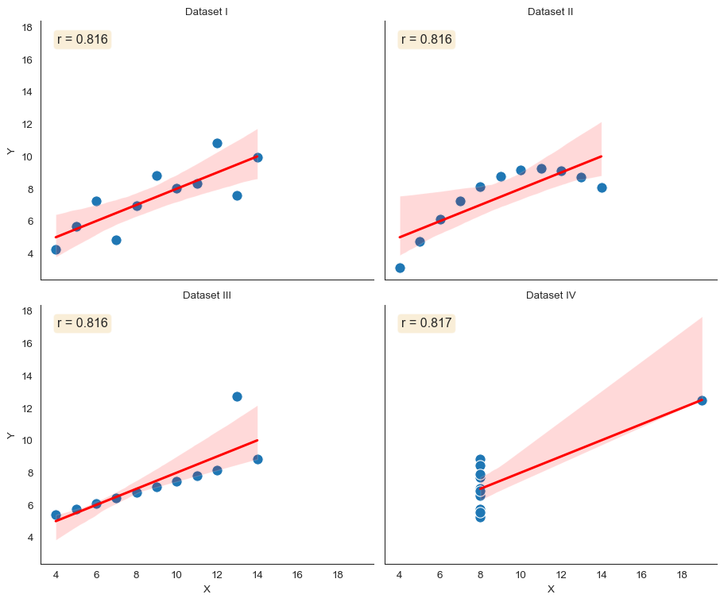</p>
<figcaption>Anscombe’s Quartet: Four datasets with identical summary statistics but completely different relationships</figcaption>
</figure>
</div>
</div>
</div>
<p>Dataset I shows a nice linear relationship. Dataset II is clearly non-linear—a parabola that a linear model completely misses. Dataset III has a perfect linear relationship except for one outlier that changes everything. Dataset IV shows no relationship except for a single influential point that creates the illusion of correlation.</p>
<p>The same correlation coefficient. The same regression line. Completely different data.</p>
<p>This is why we visualize relationships:</p>
<p><strong>Always plot your bivariate data. Summary statistics conceal structure.</strong></p>
<section id="showing-all-points-scatter-plots" class="level1 page-columns page-full" data-number="1">
<h1 data-number="1"><span class="header-section-number">1</span> Showing All Points: Scatter Plots</h1>
<p>The most direct way to show a relationship between two variables is to plot every point. A <strong>scatter plot</strong> does exactly this: each observation becomes a point in 2D space.</p>
<div id="5764039f" class="cell" data-fig-height="6" data-fig-width="10" data-execution_count="2">
<details class="code-fold">
<summary>Code</summary>
<div class="sourceCode cell-code" id="cb2"><pre class="sourceCode python code-with-copy"><code class="sourceCode python"><span id="cb2-1"><a href="#cb2-1" aria-hidden="true" tabindex="-1"></a><span class="co"># Generate sample data with clear relationship</span></span>
<span id="cb2-2"><a href="#cb2-2" aria-hidden="true" tabindex="-1"></a>np.random.seed(<span class="dv">42</span>)</span>
<span id="cb2-3"><a href="#cb2-3" aria-hidden="true" tabindex="-1"></a>n_points <span class="op">=</span> <span class="dv">200</span></span>
<span id="cb2-4"><a href="#cb2-4" aria-hidden="true" tabindex="-1"></a>x <span class="op">=</span> np.random.normal(<span class="dv">50</span>, <span class="dv">15</span>, n_points)</span>
<span id="cb2-5"><a href="#cb2-5" aria-hidden="true" tabindex="-1"></a>y <span class="op">=</span> <span class="fl">1.5</span> <span class="op">*</span> x <span class="op">+</span> np.random.normal(<span class="dv">0</span>, <span class="dv">10</span>, n_points)</span>
<span id="cb2-6"><a href="#cb2-6" aria-hidden="true" tabindex="-1"></a></span>
<span id="cb2-7"><a href="#cb2-7" aria-hidden="true" tabindex="-1"></a>fig, ax <span class="op">=</span> plt.subplots(figsize<span class="op">=</span>(<span class="dv">10</span>, <span class="dv">6</span>))</span>
<span id="cb2-8"><a href="#cb2-8" aria-hidden="true" tabindex="-1"></a>ax.scatter(x, y, alpha<span class="op">=</span><span class="fl">0.6</span>, s<span class="op">=</span><span class="dv">50</span>, edgecolors<span class="op">=</span><span class="st">'white'</span>, linewidth<span class="op">=</span><span class="fl">0.5</span>)</span>
<span id="cb2-9"><a href="#cb2-9" aria-hidden="true" tabindex="-1"></a>ax.set_xlabel(<span class="st">'X Variable'</span>)</span>
<span id="cb2-10"><a href="#cb2-10" aria-hidden="true" tabindex="-1"></a>ax.set_ylabel(<span class="st">'Y Variable'</span>)</span>
<span id="cb2-11"><a href="#cb2-11" aria-hidden="true" tabindex="-1"></a>ax.set_title(<span class="st">'Scatter Plot: Every Point Visible'</span>)</span>
<span id="cb2-12"><a href="#cb2-12" aria-hidden="true" tabindex="-1"></a>sns.despine()</span></code><button title="Copy to Clipboard" class="code-copy-button"><i class="bi"></i></button></pre></div>
</details>
<div class="cell-output cell-output-display">
<div class="quarto-figure quarto-figure-center">
<figure class="figure">
<p></p>
<figcaption>Basic scatter plot showing relationship between two variables</figcaption>
</figure>
</div>
</div>
</div>
<p>For small to moderate datasets (up to ~1,000 points), scatter plots are perfect. You can see: - The strength and direction of the relationship - The spread around the trend - Individual outliers - Non-linear patterns - Clusters or subgroups</p>
<p>When points overlap heavily, use <strong>transparency (alpha)</strong>. This creates natural density shading—areas with many overlapping points appear darker.</p>
<div id="66232eeb" class="cell" data-fig-height="5" data-fig-width="14" data-execution_count="3">
<details class="code-fold">
<summary>Code</summary>
<div class="sourceCode cell-code" id="cb3"><pre class="sourceCode python code-with-copy"><code class="sourceCode python"><span id="cb3-1"><a href="#cb3-1" aria-hidden="true" tabindex="-1"></a><span class="co"># Generate data with heavy overlap</span></span>
<span id="cb3-2"><a href="#cb3-2" aria-hidden="true" tabindex="-1"></a>np.random.seed(<span class="dv">123</span>)</span>
<span id="cb3-3"><a href="#cb3-3" aria-hidden="true" tabindex="-1"></a>n_points <span class="op">=</span> <span class="dv">1000</span></span>
<span id="cb3-4"><a href="#cb3-4" aria-hidden="true" tabindex="-1"></a>x_overlap <span class="op">=</span> np.random.normal(<span class="dv">50</span>, <span class="dv">10</span>, n_points)</span>
<span id="cb3-5"><a href="#cb3-5" aria-hidden="true" tabindex="-1"></a>y_overlap <span class="op">=</span> <span class="fl">0.8</span> <span class="op">*</span> x_overlap <span class="op">+</span> np.random.normal(<span class="dv">0</span>, <span class="dv">8</span>, n_points)</span>
<span id="cb3-6"><a href="#cb3-6" aria-hidden="true" tabindex="-1"></a></span>
<span id="cb3-7"><a href="#cb3-7" aria-hidden="true" tabindex="-1"></a>fig, axes <span class="op">=</span> plt.subplots(<span class="dv">1</span>, <span class="dv">3</span>, figsize<span class="op">=</span>(<span class="dv">14</span>, <span class="dv">5</span>))</span>
<span id="cb3-8"><a href="#cb3-8" aria-hidden="true" tabindex="-1"></a>alphas <span class="op">=</span> [<span class="fl">1.0</span>, <span class="fl">0.5</span>, <span class="fl">0.1</span>]</span>
<span id="cb3-9"><a href="#cb3-9" aria-hidden="true" tabindex="-1"></a></span>
<span id="cb3-10"><a href="#cb3-10" aria-hidden="true" tabindex="-1"></a><span class="cf">for</span> ax, alpha <span class="kw">in</span> <span class="bu">zip</span>(axes, alphas):</span>
<span id="cb3-11"><a href="#cb3-11" aria-hidden="true" tabindex="-1"></a>    ax.scatter(x_overlap, y_overlap, alpha<span class="op">=</span>alpha, s<span class="op">=</span><span class="dv">30</span>)</span>
<span id="cb3-12"><a href="#cb3-12" aria-hidden="true" tabindex="-1"></a>    ax.set_xlabel(<span class="st">'X Variable'</span>)</span>
<span id="cb3-13"><a href="#cb3-13" aria-hidden="true" tabindex="-1"></a>    ax.set_ylabel(<span class="st">'Y Variable'</span>)</span>
<span id="cb3-14"><a href="#cb3-14" aria-hidden="true" tabindex="-1"></a>    ax.set_title(<span class="ss">f'Alpha = </span><span class="sc">{</span>alpha<span class="sc">}</span><span class="ss">'</span>)</span>
<span id="cb3-15"><a href="#cb3-15" aria-hidden="true" tabindex="-1"></a>    sns.despine(ax<span class="op">=</span>ax)</span>
<span id="cb3-16"><a href="#cb3-16" aria-hidden="true" tabindex="-1"></a></span>
<span id="cb3-17"><a href="#cb3-17" aria-hidden="true" tabindex="-1"></a>plt.tight_layout()</span></code><button title="Copy to Clipboard" class="code-copy-button"><i class="bi"></i></button></pre></div>
</details>
<div class="cell-output cell-output-display">
<div class="quarto-figure quarto-figure-center">
<figure class="figure">
<p>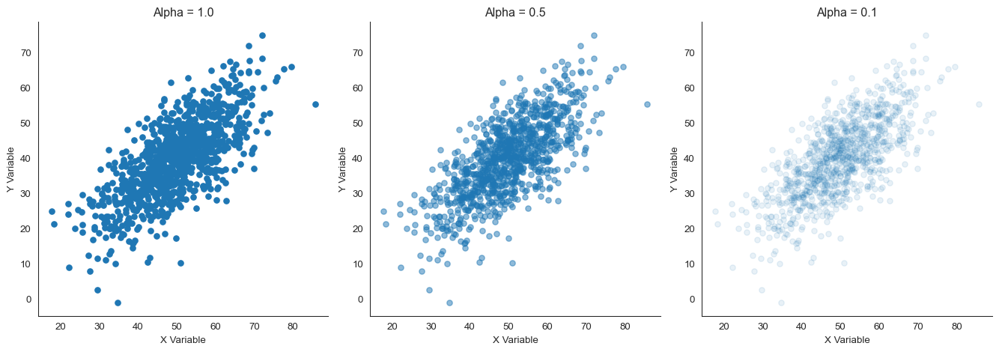</p>
<figcaption>Scatter plots with different alpha values showing how transparency reveals density</figcaption>
</figure>
</div>
</div>
</div>
<p>With alpha = 1.0 (opaque), the center is a solid blob—you can’t tell if there are 10 points or 100. With alpha = 0.1, the density gradient becomes visible. Dark regions have many points; light regions have few.</p>

<div class="no-row-height column-margin column-container"><div class="">
<p></p>
<p>A figure from <a href="https://www.science.org/doi/10.1126/science.aan8627">Metaanalysis of faculty’s teaching effectiveness</a> showing the relationship between student evaluation of teaching and actual learning. Each bubble represents a course section, with size proportional to the number of students. Notice how transparency reveals the density of observations.</p>
</div></div><p>For extremely dense data where even transparency doesn’t help, <strong>jittering</strong> can separate overlapping points by adding small random noise to their positions.</p>
<div id="d38c528f" class="cell" data-fig-height="5" data-fig-width="14" data-execution_count="4">
<details class="code-fold">
<summary>Code</summary>
<div class="sourceCode cell-code" id="cb4"><pre class="sourceCode python code-with-copy"><code class="sourceCode python"><span id="cb4-1"><a href="#cb4-1" aria-hidden="true" tabindex="-1"></a><span class="co"># Generate data with discrete values (common in survey data)</span></span>
<span id="cb4-2"><a href="#cb4-2" aria-hidden="true" tabindex="-1"></a>np.random.seed(<span class="dv">456</span>)</span>
<span id="cb4-3"><a href="#cb4-3" aria-hidden="true" tabindex="-1"></a>n_points <span class="op">=</span> <span class="dv">500</span></span>
<span id="cb4-4"><a href="#cb4-4" aria-hidden="true" tabindex="-1"></a>x_discrete <span class="op">=</span> np.random.choice([<span class="dv">1</span>, <span class="dv">2</span>, <span class="dv">3</span>, <span class="dv">4</span>, <span class="dv">5</span>], n_points)</span>
<span id="cb4-5"><a href="#cb4-5" aria-hidden="true" tabindex="-1"></a>y_discrete <span class="op">=</span> x_discrete <span class="op">+</span> np.random.choice([<span class="op">-</span><span class="dv">1</span>, <span class="dv">0</span>, <span class="dv">1</span>], n_points) <span class="op">+</span> np.random.normal(<span class="dv">0</span>, <span class="fl">0.3</span>, n_points)</span>
<span id="cb4-6"><a href="#cb4-6" aria-hidden="true" tabindex="-1"></a></span>
<span id="cb4-7"><a href="#cb4-7" aria-hidden="true" tabindex="-1"></a>fig, axes <span class="op">=</span> plt.subplots(<span class="dv">1</span>, <span class="dv">2</span>, figsize<span class="op">=</span>(<span class="dv">14</span>, <span class="dv">5</span>))</span>
<span id="cb4-8"><a href="#cb4-8" aria-hidden="true" tabindex="-1"></a></span>
<span id="cb4-9"><a href="#cb4-9" aria-hidden="true" tabindex="-1"></a><span class="co"># Without jitter</span></span>
<span id="cb4-10"><a href="#cb4-10" aria-hidden="true" tabindex="-1"></a>axes[<span class="dv">0</span>].scatter(x_discrete, y_discrete, alpha<span class="op">=</span><span class="fl">0.5</span>, s<span class="op">=</span><span class="dv">50</span>)</span>
<span id="cb4-11"><a href="#cb4-11" aria-hidden="true" tabindex="-1"></a>axes[<span class="dv">0</span>].set_xlabel(<span class="st">'X Variable (Discrete)'</span>)</span>
<span id="cb4-12"><a href="#cb4-12" aria-hidden="true" tabindex="-1"></a>axes[<span class="dv">0</span>].set_ylabel(<span class="st">'Y Variable'</span>)</span>
<span id="cb4-13"><a href="#cb4-13" aria-hidden="true" tabindex="-1"></a>axes[<span class="dv">0</span>].set_title(<span class="st">'Without Jittering'</span>)</span>
<span id="cb4-14"><a href="#cb4-14" aria-hidden="true" tabindex="-1"></a>sns.despine(ax<span class="op">=</span>axes[<span class="dv">0</span>])</span>
<span id="cb4-15"><a href="#cb4-15" aria-hidden="true" tabindex="-1"></a></span>
<span id="cb4-16"><a href="#cb4-16" aria-hidden="true" tabindex="-1"></a><span class="co"># With jitter</span></span>
<span id="cb4-17"><a href="#cb4-17" aria-hidden="true" tabindex="-1"></a>jitter_x <span class="op">=</span> x_discrete <span class="op">+</span> np.random.normal(<span class="dv">0</span>, <span class="fl">0.1</span>, n_points)</span>
<span id="cb4-18"><a href="#cb4-18" aria-hidden="true" tabindex="-1"></a>jitter_y <span class="op">=</span> y_discrete <span class="op">+</span> np.random.normal(<span class="dv">0</span>, <span class="fl">0.1</span>, n_points)</span>
<span id="cb4-19"><a href="#cb4-19" aria-hidden="true" tabindex="-1"></a>axes[<span class="dv">1</span>].scatter(jitter_x, jitter_y, alpha<span class="op">=</span><span class="fl">0.5</span>, s<span class="op">=</span><span class="dv">50</span>)</span>
<span id="cb4-20"><a href="#cb4-20" aria-hidden="true" tabindex="-1"></a>axes[<span class="dv">1</span>].set_xlabel(<span class="st">'X Variable (Discrete)'</span>)</span>
<span id="cb4-21"><a href="#cb4-21" aria-hidden="true" tabindex="-1"></a>axes[<span class="dv">1</span>].set_ylabel(<span class="st">'Y Variable'</span>)</span>
<span id="cb4-22"><a href="#cb4-22" aria-hidden="true" tabindex="-1"></a>axes[<span class="dv">1</span>].set_title(<span class="st">'With Jittering'</span>)</span>
<span id="cb4-23"><a href="#cb4-23" aria-hidden="true" tabindex="-1"></a>sns.despine(ax<span class="op">=</span>axes[<span class="dv">1</span>])</span>
<span id="cb4-24"><a href="#cb4-24" aria-hidden="true" tabindex="-1"></a></span>
<span id="cb4-25"><a href="#cb4-25" aria-hidden="true" tabindex="-1"></a>plt.tight_layout()</span></code><button title="Copy to Clipboard" class="code-copy-button"><i class="bi"></i></button></pre></div>
</details>
<div class="cell-output cell-output-display">
<div class="quarto-figure quarto-figure-center">
<figure class="figure">
<p>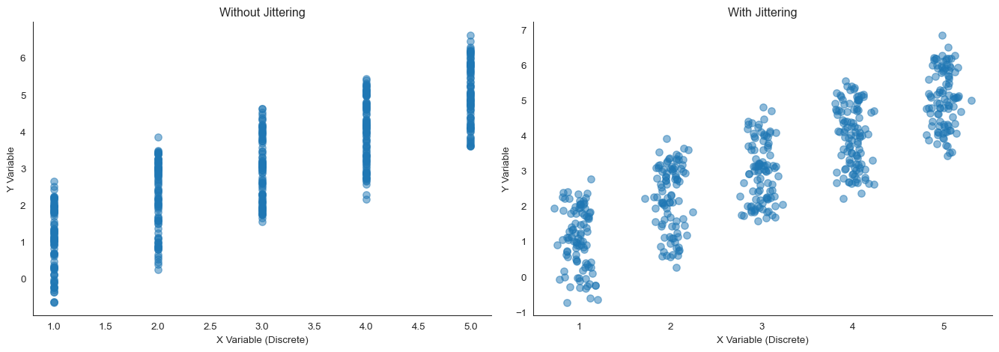</p>
<figcaption>Jittering helps separate discrete or overlapping points</figcaption>
</figure>
</div>
</div>
</div>
<p>Without jittering, many points stack on top of each other—you might think there are only 25 data points (5 � 5) when there are actually 500. Jittering reveals the true sample size and density at each location.</p>
</section>
<section id="when-points-overlap-binning-methods" class="level1" data-number="2">
<h1 data-number="2"><span class="header-section-number">2</span> When Points Overlap: Binning Methods</h1>
<p>When you have tens of thousands of points, even transparency and jittering don’t fully reveal the density structure. Individual points become less meaningful than the overall pattern. This is when we need to <strong>bin</strong> the datadivide the 2D space into regions and count observations in each.</p>
<section id="d-histograms-heatmaps" class="level2" data-number="2.1">
<h2 data-number="2.1" class="anchored" data-anchor-id="d-histograms-heatmaps"><span class="header-section-number">2.1</span> 2D Histograms (Heatmaps)</h2>
<p>A <strong>2D histogram</strong> extends the 1D histogram concept to two dimensions. The plane is divided into rectangular bins, and each bin’s color represents the number of points it contains.</p>
<div id="18b71109" class="cell" data-fig-height="7" data-fig-width="10" data-execution_count="5">
<details class="code-fold">
<summary>Code</summary>
<div class="sourceCode cell-code" id="cb5"><pre class="sourceCode python code-with-copy"><code class="sourceCode python"><span id="cb5-1"><a href="#cb5-1" aria-hidden="true" tabindex="-1"></a><span class="co"># Generate large dataset</span></span>
<span id="cb5-2"><a href="#cb5-2" aria-hidden="true" tabindex="-1"></a>np.random.seed(<span class="dv">789</span>)</span>
<span id="cb5-3"><a href="#cb5-3" aria-hidden="true" tabindex="-1"></a>n_large <span class="op">=</span> <span class="dv">10000</span></span>
<span id="cb5-4"><a href="#cb5-4" aria-hidden="true" tabindex="-1"></a>x_large <span class="op">=</span> np.random.normal(<span class="dv">50</span>, <span class="dv">15</span>, n_large)</span>
<span id="cb5-5"><a href="#cb5-5" aria-hidden="true" tabindex="-1"></a>y_large <span class="op">=</span> <span class="fl">0.8</span> <span class="op">*</span> x_large <span class="op">+</span> np.random.normal(<span class="dv">0</span>, <span class="dv">12</span>, n_large)</span>
<span id="cb5-6"><a href="#cb5-6" aria-hidden="true" tabindex="-1"></a></span>
<span id="cb5-7"><a href="#cb5-7" aria-hidden="true" tabindex="-1"></a>fig, ax <span class="op">=</span> plt.subplots(figsize<span class="op">=</span>(<span class="dv">10</span>, <span class="dv">7</span>))</span>
<span id="cb5-8"><a href="#cb5-8" aria-hidden="true" tabindex="-1"></a>hb <span class="op">=</span> ax.hexbin(x_large, y_large, gridsize<span class="op">=</span><span class="dv">30</span>, cmap<span class="op">=</span><span class="st">'YlOrRd'</span>, mincnt<span class="op">=</span><span class="dv">1</span>)</span>
<span id="cb5-9"><a href="#cb5-9" aria-hidden="true" tabindex="-1"></a>ax.set_xlabel(<span class="st">'X Variable'</span>)</span>
<span id="cb5-10"><a href="#cb5-10" aria-hidden="true" tabindex="-1"></a>ax.set_ylabel(<span class="st">'Y Variable'</span>)</span>
<span id="cb5-11"><a href="#cb5-11" aria-hidden="true" tabindex="-1"></a>ax.set_title(<span class="st">'2D Histogram: Density Through Binning'</span>)</span>
<span id="cb5-12"><a href="#cb5-12" aria-hidden="true" tabindex="-1"></a>cb <span class="op">=</span> plt.colorbar(hb, ax<span class="op">=</span>ax)</span>
<span id="cb5-13"><a href="#cb5-13" aria-hidden="true" tabindex="-1"></a>cb.set_label(<span class="st">'Count'</span>)</span>
<span id="cb5-14"><a href="#cb5-14" aria-hidden="true" tabindex="-1"></a>sns.despine()</span></code><button title="Copy to Clipboard" class="code-copy-button"><i class="bi"></i></button></pre></div>
</details>
<div class="cell-output cell-output-display">
<div class="quarto-figure quarto-figure-center">
<figure class="figure">
<p></p>
<figcaption>2D histogram showing density through rectangular bins</figcaption>
</figure>
</div>
</div>
</div>
<p>The key parameter is <strong>bin size</strong> (or <code>gridsize</code>). Too few bins and you lose detail; too many bins and the plot becomes noisy. Like 1D histograms, this requires experimentation.</p>
<div id="dfdb68e7" class="cell" data-fig-height="5" data-fig-width="14" data-execution_count="6">
<details class="code-fold">
<summary>Code</summary>
<div class="sourceCode cell-code" id="cb6"><pre class="sourceCode python code-with-copy"><code class="sourceCode python"><span id="cb6-1"><a href="#cb6-1" aria-hidden="true" tabindex="-1"></a>fig, axes <span class="op">=</span> plt.subplots(<span class="dv">1</span>, <span class="dv">3</span>, figsize<span class="op">=</span>(<span class="dv">14</span>, <span class="dv">5</span>))</span>
<span id="cb6-2"><a href="#cb6-2" aria-hidden="true" tabindex="-1"></a>gridsizes <span class="op">=</span> [<span class="dv">10</span>, <span class="dv">30</span>, <span class="dv">60</span>]</span>
<span id="cb6-3"><a href="#cb6-3" aria-hidden="true" tabindex="-1"></a></span>
<span id="cb6-4"><a href="#cb6-4" aria-hidden="true" tabindex="-1"></a><span class="cf">for</span> ax, gridsize <span class="kw">in</span> <span class="bu">zip</span>(axes, gridsizes):</span>
<span id="cb6-5"><a href="#cb6-5" aria-hidden="true" tabindex="-1"></a>    hb <span class="op">=</span> ax.hexbin(x_large, y_large, gridsize<span class="op">=</span>gridsize, cmap<span class="op">=</span><span class="st">'YlOrRd'</span>, mincnt<span class="op">=</span><span class="dv">1</span>)</span>
<span id="cb6-6"><a href="#cb6-6" aria-hidden="true" tabindex="-1"></a>    ax.set_xlabel(<span class="st">'X Variable'</span>)</span>
<span id="cb6-7"><a href="#cb6-7" aria-hidden="true" tabindex="-1"></a>    ax.set_ylabel(<span class="st">'Y Variable'</span>)</span>
<span id="cb6-8"><a href="#cb6-8" aria-hidden="true" tabindex="-1"></a>    ax.set_title(<span class="ss">f'Gridsize = </span><span class="sc">{</span>gridsize<span class="sc">}</span><span class="ss">'</span>)</span>
<span id="cb6-9"><a href="#cb6-9" aria-hidden="true" tabindex="-1"></a>    plt.colorbar(hb, ax<span class="op">=</span>ax)</span>
<span id="cb6-10"><a href="#cb6-10" aria-hidden="true" tabindex="-1"></a>    sns.despine(ax<span class="op">=</span>ax)</span>
<span id="cb6-11"><a href="#cb6-11" aria-hidden="true" tabindex="-1"></a></span>
<span id="cb6-12"><a href="#cb6-12" aria-hidden="true" tabindex="-1"></a>plt.tight_layout()</span></code><button title="Copy to Clipboard" class="code-copy-button"><i class="bi"></i></button></pre></div>
</details>
<div class="cell-output cell-output-display">
<div class="quarto-figure quarto-figure-center">
<figure class="figure">
<p>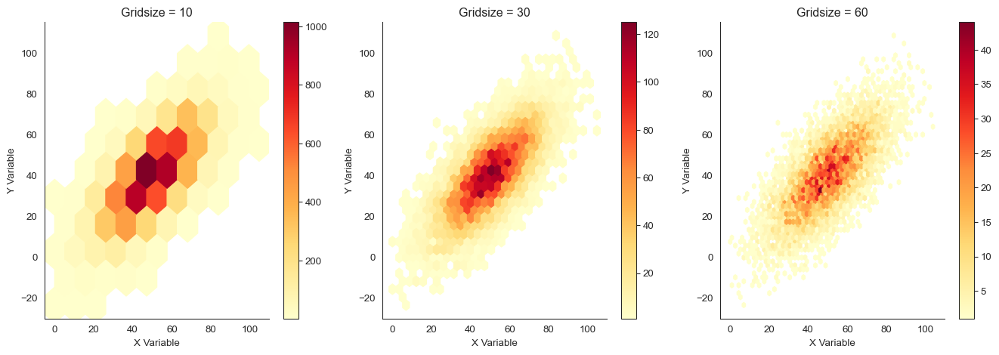</p>
<figcaption>Effect of bin size on 2D histograms</figcaption>
</figure>
</div>
</div>
</div>
<p>With gridsize = 10, we see only coarse structure. With gridsize = 60, the plot is noisysome bins have few points by chance. Gridsize = 30 provides a good balance.</p>
</section>
<section id="hexbin-plots" class="level2" data-number="2.2">
<h2 data-number="2.2" class="anchored" data-anchor-id="hexbin-plots"><span class="header-section-number">2.2</span> Hexbin Plots</h2>
<p><strong>Hexagonal binning</strong> uses hexagons instead of rectangles. Hexagons are better for 2D binning because they’re closer to circlesevery edge is equidistant from the center, reducing bias in how we perceive density.</p>
<div id="34cf7e16" class="cell" data-fig-height="5" data-fig-width="14" data-execution_count="7">
<details class="code-fold">
<summary>Code</summary>
<div class="sourceCode cell-code" id="cb7"><pre class="sourceCode python code-with-copy"><code class="sourceCode python"><span id="cb7-1"><a href="#cb7-1" aria-hidden="true" tabindex="-1"></a><span class="co"># Generate data with interesting structure</span></span>
<span id="cb7-2"><a href="#cb7-2" aria-hidden="true" tabindex="-1"></a>np.random.seed(<span class="dv">101</span>)</span>
<span id="cb7-3"><a href="#cb7-3" aria-hidden="true" tabindex="-1"></a>n <span class="op">=</span> <span class="dv">8000</span></span>
<span id="cb7-4"><a href="#cb7-4" aria-hidden="true" tabindex="-1"></a></span>
<span id="cb7-5"><a href="#cb7-5" aria-hidden="true" tabindex="-1"></a><span class="co"># Create two clusters</span></span>
<span id="cb7-6"><a href="#cb7-6" aria-hidden="true" tabindex="-1"></a>cluster1_x <span class="op">=</span> np.random.normal(<span class="dv">30</span>, <span class="dv">8</span>, n <span class="op">//</span> <span class="dv">2</span>)</span>
<span id="cb7-7"><a href="#cb7-7" aria-hidden="true" tabindex="-1"></a>cluster1_y <span class="op">=</span> np.random.normal(<span class="dv">40</span>, <span class="dv">8</span>, n <span class="op">//</span> <span class="dv">2</span>)</span>
<span id="cb7-8"><a href="#cb7-8" aria-hidden="true" tabindex="-1"></a>cluster2_x <span class="op">=</span> np.random.normal(<span class="dv">60</span>, <span class="dv">10</span>, n <span class="op">//</span> <span class="dv">2</span>)</span>
<span id="cb7-9"><a href="#cb7-9" aria-hidden="true" tabindex="-1"></a>cluster2_y <span class="op">=</span> np.random.normal(<span class="dv">70</span>, <span class="dv">10</span>, n <span class="op">//</span> <span class="dv">2</span>)</span>
<span id="cb7-10"><a href="#cb7-10" aria-hidden="true" tabindex="-1"></a></span>
<span id="cb7-11"><a href="#cb7-11" aria-hidden="true" tabindex="-1"></a>x_clusters <span class="op">=</span> np.concatenate([cluster1_x, cluster2_x])</span>
<span id="cb7-12"><a href="#cb7-12" aria-hidden="true" tabindex="-1"></a>y_clusters <span class="op">=</span> np.concatenate([cluster1_y, cluster2_y])</span>
<span id="cb7-13"><a href="#cb7-13" aria-hidden="true" tabindex="-1"></a></span>
<span id="cb7-14"><a href="#cb7-14" aria-hidden="true" tabindex="-1"></a>fig, axes <span class="op">=</span> plt.subplots(<span class="dv">1</span>, <span class="dv">2</span>, figsize<span class="op">=</span>(<span class="dv">14</span>, <span class="dv">5</span>))</span>
<span id="cb7-15"><a href="#cb7-15" aria-hidden="true" tabindex="-1"></a></span>
<span id="cb7-16"><a href="#cb7-16" aria-hidden="true" tabindex="-1"></a><span class="co"># Scatter plot (for reference)</span></span>
<span id="cb7-17"><a href="#cb7-17" aria-hidden="true" tabindex="-1"></a>axes[<span class="dv">0</span>].scatter(x_clusters, y_clusters, alpha<span class="op">=</span><span class="fl">0.1</span>, s<span class="op">=</span><span class="dv">10</span>)</span>
<span id="cb7-18"><a href="#cb7-18" aria-hidden="true" tabindex="-1"></a>axes[<span class="dv">0</span>].set_xlabel(<span class="st">'X Variable'</span>)</span>
<span id="cb7-19"><a href="#cb7-19" aria-hidden="true" tabindex="-1"></a>axes[<span class="dv">0</span>].set_ylabel(<span class="st">'Y Variable'</span>)</span>
<span id="cb7-20"><a href="#cb7-20" aria-hidden="true" tabindex="-1"></a>axes[<span class="dv">0</span>].set_title(<span class="st">'Scatter Plot (alpha = 0.1)'</span>)</span>
<span id="cb7-21"><a href="#cb7-21" aria-hidden="true" tabindex="-1"></a>sns.despine(ax<span class="op">=</span>axes[<span class="dv">0</span>])</span>
<span id="cb7-22"><a href="#cb7-22" aria-hidden="true" tabindex="-1"></a></span>
<span id="cb7-23"><a href="#cb7-23" aria-hidden="true" tabindex="-1"></a><span class="co"># Hexbin plot</span></span>
<span id="cb7-24"><a href="#cb7-24" aria-hidden="true" tabindex="-1"></a>hb <span class="op">=</span> axes[<span class="dv">1</span>].hexbin(x_clusters, y_clusters, gridsize<span class="op">=</span><span class="dv">25</span>, cmap<span class="op">=</span><span class="st">'viridis'</span>, mincnt<span class="op">=</span><span class="dv">1</span>)</span>
<span id="cb7-25"><a href="#cb7-25" aria-hidden="true" tabindex="-1"></a>axes[<span class="dv">1</span>].set_xlabel(<span class="st">'X Variable'</span>)</span>
<span id="cb7-26"><a href="#cb7-26" aria-hidden="true" tabindex="-1"></a>axes[<span class="dv">1</span>].set_ylabel(<span class="st">'Y Variable'</span>)</span>
<span id="cb7-27"><a href="#cb7-27" aria-hidden="true" tabindex="-1"></a>axes[<span class="dv">1</span>].set_title(<span class="st">'Hexbin Plot'</span>)</span>
<span id="cb7-28"><a href="#cb7-28" aria-hidden="true" tabindex="-1"></a>plt.colorbar(hb, ax<span class="op">=</span>axes[<span class="dv">1</span>], label<span class="op">=</span><span class="st">'Count'</span>)</span>
<span id="cb7-29"><a href="#cb7-29" aria-hidden="true" tabindex="-1"></a>sns.despine(ax<span class="op">=</span>axes[<span class="dv">1</span>])</span>
<span id="cb7-30"><a href="#cb7-30" aria-hidden="true" tabindex="-1"></a></span>
<span id="cb7-31"><a href="#cb7-31" aria-hidden="true" tabindex="-1"></a>plt.tight_layout()</span></code><button title="Copy to Clipboard" class="code-copy-button"><i class="bi"></i></button></pre></div>
</details>
<div class="cell-output cell-output-display">
<div class="quarto-figure quarto-figure-center">
<figure class="figure">
<p>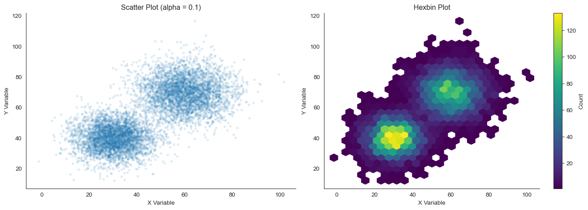</p>
<figcaption>Hexbin plot provides more perceptually uniform density representation</figcaption>
</figure>
</div>
</div>
</div>
<p>The hexbin plot clearly reveals the two clusters and their relative densitiessomething that’s harder to see in the scatter plot even with low alpha.</p>
<p>Hexbin plots are particularly powerful for <strong>very large datasets</strong> (100,000+ points) where scatter plots become computationally expensive and visually overwhelming.</p>
<div class="callout callout-style-default callout-note callout-titled">
<div class="callout-header d-flex align-content-center">
<div class="callout-icon-container">
<i class="callout-icon"></i>
</div>
<div class="callout-title-container flex-fill">
Choosing colors for density plots
</div>
</div>
<div class="callout-body-container callout-body">
<p>When showing density or counts, use <strong>sequential colormaps</strong> that vary in lightness: light = low density, dark = high density. Good choices include: - <code>'YlOrRd'</code> (yellow-orange-red) - <code>'viridis'</code> (purple-blue-green-yellow, perceptually uniform) - <code>'Blues'</code> or <code>'Reds'</code> (single hue)</p>
<p>Avoid rainbow colormaps like <code>'jet'</code>they create artificial boundaries where none exist and are not perceptually uniform.</p>
</div>
</div>
</section>
</section>
<section id="smooth-density-estimation-2d-kde" class="level1" data-number="3">
<h1 data-number="3"><span class="header-section-number">3</span> Smooth Density Estimation: 2D KDE</h1>
<p>Just as 1D kernel density estimation (KDE) provides a smooth alternative to histograms, <strong>2D KDE</strong> smooths 2D histograms by placing a kernel at each data point and summing them.</p>
<div id="98ff7299" class="cell" data-fig-height="7" data-fig-width="10" data-execution_count="8">
<details class="code-fold">
<summary>Code</summary>
<div class="sourceCode cell-code" id="cb8"><pre class="sourceCode python code-with-copy"><code class="sourceCode python"><span id="cb8-1"><a href="#cb8-1" aria-hidden="true" tabindex="-1"></a><span class="co"># Use the clustered data</span></span>
<span id="cb8-2"><a href="#cb8-2" aria-hidden="true" tabindex="-1"></a>fig, ax <span class="op">=</span> plt.subplots(figsize<span class="op">=</span>(<span class="dv">10</span>, <span class="dv">7</span>))</span>
<span id="cb8-3"><a href="#cb8-3" aria-hidden="true" tabindex="-1"></a>sns.kdeplot(x<span class="op">=</span>x_clusters, y<span class="op">=</span>y_clusters, cmap<span class="op">=</span><span class="st">'viridis'</span>, fill<span class="op">=</span><span class="va">True</span>, thresh<span class="op">=</span><span class="fl">0.05</span>, levels<span class="op">=</span><span class="dv">20</span>, ax<span class="op">=</span>ax)</span>
<span id="cb8-4"><a href="#cb8-4" aria-hidden="true" tabindex="-1"></a>ax.set_xlabel(<span class="st">'X Variable'</span>)</span>
<span id="cb8-5"><a href="#cb8-5" aria-hidden="true" tabindex="-1"></a>ax.set_ylabel(<span class="st">'Y Variable'</span>)</span>
<span id="cb8-6"><a href="#cb8-6" aria-hidden="true" tabindex="-1"></a>ax.set_title(<span class="st">'2D Kernel Density Estimation'</span>)</span>
<span id="cb8-7"><a href="#cb8-7" aria-hidden="true" tabindex="-1"></a>sns.despine()</span></code><button title="Copy to Clipboard" class="code-copy-button"><i class="bi"></i></button></pre></div>
</details>
<div class="cell-output cell-output-display">
<div class="quarto-figure quarto-figure-center">
<figure class="figure">
<p>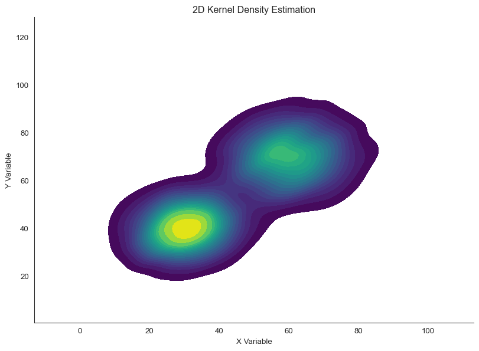</p>
<figcaption>2D kernel density estimation provides smooth density surface</figcaption>
</figure>
</div>
</div>
</div>
<p>KDE reveals smooth density gradients without arbitrary binning decisions. The key parameter is <strong>bandwidth</strong>how wide each kernel is. Small bandwidth gives high detail but can be noisy; large bandwidth is smooth but may blur important features.</p>
<div id="4fc8dab8" class="cell" data-fig-height="5" data-fig-width="14" data-execution_count="9">
<details class="code-fold">
<summary>Code</summary>
<div class="sourceCode cell-code" id="cb9"><pre class="sourceCode python code-with-copy"><code class="sourceCode python"><span id="cb9-1"><a href="#cb9-1" aria-hidden="true" tabindex="-1"></a>fig, axes <span class="op">=</span> plt.subplots(<span class="dv">1</span>, <span class="dv">3</span>, figsize<span class="op">=</span>(<span class="dv">14</span>, <span class="dv">5</span>))</span>
<span id="cb9-2"><a href="#cb9-2" aria-hidden="true" tabindex="-1"></a>bandwidths <span class="op">=</span> [<span class="fl">0.5</span>, <span class="fl">1.5</span>, <span class="fl">3.0</span>]</span>
<span id="cb9-3"><a href="#cb9-3" aria-hidden="true" tabindex="-1"></a></span>
<span id="cb9-4"><a href="#cb9-4" aria-hidden="true" tabindex="-1"></a><span class="cf">for</span> ax, bw <span class="kw">in</span> <span class="bu">zip</span>(axes, bandwidths):</span>
<span id="cb9-5"><a href="#cb9-5" aria-hidden="true" tabindex="-1"></a>    sns.kdeplot(x<span class="op">=</span>x_clusters, y<span class="op">=</span>y_clusters, cmap<span class="op">=</span><span class="st">'viridis'</span>, fill<span class="op">=</span><span class="va">True</span>,</span>
<span id="cb9-6"><a href="#cb9-6" aria-hidden="true" tabindex="-1"></a>                bw_adjust<span class="op">=</span>bw, thresh<span class="op">=</span><span class="fl">0.05</span>, levels<span class="op">=</span><span class="dv">15</span>, ax<span class="op">=</span>ax)</span>
<span id="cb9-7"><a href="#cb9-7" aria-hidden="true" tabindex="-1"></a>    ax.set_xlabel(<span class="st">'X Variable'</span>)</span>
<span id="cb9-8"><a href="#cb9-8" aria-hidden="true" tabindex="-1"></a>    ax.set_ylabel(<span class="st">'Y Variable'</span>)</span>
<span id="cb9-9"><a href="#cb9-9" aria-hidden="true" tabindex="-1"></a>    ax.set_title(<span class="ss">f'Bandwidth adjustment = </span><span class="sc">{</span>bw<span class="sc">}</span><span class="ss">'</span>)</span>
<span id="cb9-10"><a href="#cb9-10" aria-hidden="true" tabindex="-1"></a>    sns.despine(ax<span class="op">=</span>ax)</span>
<span id="cb9-11"><a href="#cb9-11" aria-hidden="true" tabindex="-1"></a></span>
<span id="cb9-12"><a href="#cb9-12" aria-hidden="true" tabindex="-1"></a>plt.tight_layout()</span></code><button title="Copy to Clipboard" class="code-copy-button"><i class="bi"></i></button></pre></div>
</details>
<div class="cell-output cell-output-display">
<div class="quarto-figure quarto-figure-center">
<figure class="figure">
<p>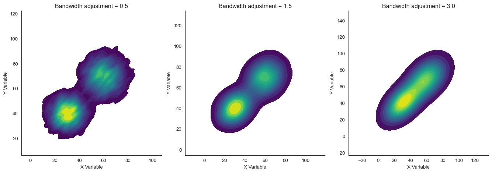</p>
<figcaption>Effect of bandwidth on 2D KDE smoothness</figcaption>
</figure>
</div>
</div>
</div>
<p>With <code>bw_adjust=0.5</code> (narrow bandwidth), we see fine detail but some noise. With <code>bw_adjust=3.0</code> (wide bandwidth), the plot is very smooth but the two clusters nearly merge. The default <code>bw_adjust=1.0</code> (or around 1.5 here) balances detail and smoothness.</p>
<section id="contour-plots" class="level2" data-number="3.1">
<h2 data-number="3.1" class="anchored" data-anchor-id="contour-plots"><span class="header-section-number">3.1</span> Contour Plots</h2>
<p>A <strong>contour plot</strong> represents the density surface as lines of equal densitylike a topographic map where each contour line represents an “elevation” of density.</p>
<div id="b113e02c" class="cell" data-fig-height="6" data-fig-width="14" data-execution_count="10">
<details class="code-fold">
<summary>Code</summary>
<div class="sourceCode cell-code" id="cb10"><pre class="sourceCode python code-with-copy"><code class="sourceCode python"><span id="cb10-1"><a href="#cb10-1" aria-hidden="true" tabindex="-1"></a>fig, axes <span class="op">=</span> plt.subplots(<span class="dv">1</span>, <span class="dv">2</span>, figsize<span class="op">=</span>(<span class="dv">14</span>, <span class="dv">6</span>))</span>
<span id="cb10-2"><a href="#cb10-2" aria-hidden="true" tabindex="-1"></a></span>
<span id="cb10-3"><a href="#cb10-3" aria-hidden="true" tabindex="-1"></a><span class="co"># Filled contours</span></span>
<span id="cb10-4"><a href="#cb10-4" aria-hidden="true" tabindex="-1"></a>sns.kdeplot(x<span class="op">=</span>x_clusters, y<span class="op">=</span>y_clusters, cmap<span class="op">=</span><span class="st">'viridis'</span>, fill<span class="op">=</span><span class="va">True</span>,</span>
<span id="cb10-5"><a href="#cb10-5" aria-hidden="true" tabindex="-1"></a>            thresh<span class="op">=</span><span class="fl">0.05</span>, levels<span class="op">=</span><span class="dv">10</span>, ax<span class="op">=</span>axes[<span class="dv">0</span>])</span>
<span id="cb10-6"><a href="#cb10-6" aria-hidden="true" tabindex="-1"></a>axes[<span class="dv">0</span>].set_xlabel(<span class="st">'X Variable'</span>)</span>
<span id="cb10-7"><a href="#cb10-7" aria-hidden="true" tabindex="-1"></a>axes[<span class="dv">0</span>].set_ylabel(<span class="st">'Y Variable'</span>)</span>
<span id="cb10-8"><a href="#cb10-8" aria-hidden="true" tabindex="-1"></a>axes[<span class="dv">0</span>].set_title(<span class="st">'Filled Contour Plot'</span>)</span>
<span id="cb10-9"><a href="#cb10-9" aria-hidden="true" tabindex="-1"></a>sns.despine(ax<span class="op">=</span>axes[<span class="dv">0</span>])</span>
<span id="cb10-10"><a href="#cb10-10" aria-hidden="true" tabindex="-1"></a></span>
<span id="cb10-11"><a href="#cb10-11" aria-hidden="true" tabindex="-1"></a><span class="co"># Line contours with scatter</span></span>
<span id="cb10-12"><a href="#cb10-12" aria-hidden="true" tabindex="-1"></a>axes[<span class="dv">1</span>].scatter(x_clusters, y_clusters, alpha<span class="op">=</span><span class="fl">0.1</span>, s<span class="op">=</span><span class="dv">5</span>, c<span class="op">=</span><span class="st">'gray'</span>)</span>
<span id="cb10-13"><a href="#cb10-13" aria-hidden="true" tabindex="-1"></a>sns.kdeplot(x<span class="op">=</span>x_clusters, y<span class="op">=</span>y_clusters, levels<span class="op">=</span><span class="dv">8</span>, color<span class="op">=</span><span class="st">'red'</span>, linewidths<span class="op">=</span><span class="dv">2</span>, ax<span class="op">=</span>axes[<span class="dv">1</span>])</span>
<span id="cb10-14"><a href="#cb10-14" aria-hidden="true" tabindex="-1"></a>axes[<span class="dv">1</span>].set_xlabel(<span class="st">'X Variable'</span>)</span>
<span id="cb10-15"><a href="#cb10-15" aria-hidden="true" tabindex="-1"></a>axes[<span class="dv">1</span>].set_ylabel(<span class="st">'Y Variable'</span>)</span>
<span id="cb10-16"><a href="#cb10-16" aria-hidden="true" tabindex="-1"></a>axes[<span class="dv">1</span>].set_title(<span class="st">'Contour Lines Over Scatter Plot'</span>)</span>
<span id="cb10-17"><a href="#cb10-17" aria-hidden="true" tabindex="-1"></a>sns.despine(ax<span class="op">=</span>axes[<span class="dv">1</span>])</span>
<span id="cb10-18"><a href="#cb10-18" aria-hidden="true" tabindex="-1"></a></span>
<span id="cb10-19"><a href="#cb10-19" aria-hidden="true" tabindex="-1"></a>plt.tight_layout()</span></code><button title="Copy to Clipboard" class="code-copy-button"><i class="bi"></i></button></pre></div>
</details>
<div class="cell-output cell-output-display">
<div class="quarto-figure quarto-figure-center">
<figure class="figure">
<p>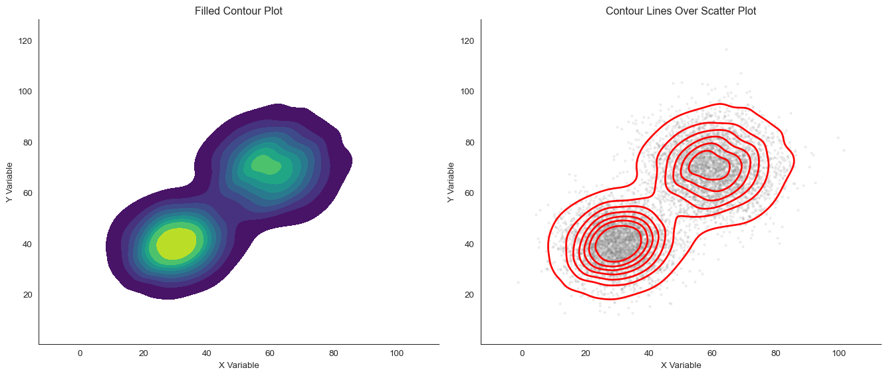</p>
<figcaption>Contour plot shows density as topographic lines</figcaption>
</figure>
</div>
</div>
</div>
<p>Contour plots are excellent for: - Overlaying density information on scatter plots - Comparing multiple groups (different colored contours) - Showing the “shape” of the relationship clearly</p>
</section>
</section>
<section id="joint-distributions-combining-2d-and-1d" class="level1 page-columns page-full" data-number="4">
<h1 data-number="4"><span class="header-section-number">4</span> Joint Distributions: Combining 2D and 1D</h1>
<p>A powerful approach is to show both the <strong>joint (2D) distribution</strong> and the <strong>marginal (1D) distributions</strong> of each variable. This connects 2D visualization back to the 1D methods we learned earlier.</p>
<p>A <strong>joint plot</strong> combines a central 2D plot with 1D histograms or density plots along the margins.</p>
<div id="9f992023" class="cell" data-fig-height="10" data-fig-width="10" data-execution_count="11">
<details class="code-fold">
<summary>Code</summary>
<div class="sourceCode cell-code" id="cb11"><pre class="sourceCode python code-with-copy"><code class="sourceCode python"><span id="cb11-1"><a href="#cb11-1" aria-hidden="true" tabindex="-1"></a><span class="co"># Generate data with interesting marginals</span></span>
<span id="cb11-2"><a href="#cb11-2" aria-hidden="true" tabindex="-1"></a>np.random.seed(<span class="dv">202</span>)</span>
<span id="cb11-3"><a href="#cb11-3" aria-hidden="true" tabindex="-1"></a>n <span class="op">=</span> <span class="dv">1000</span></span>
<span id="cb11-4"><a href="#cb11-4" aria-hidden="true" tabindex="-1"></a>x_joint <span class="op">=</span> np.concatenate([np.random.normal(<span class="dv">30</span>, <span class="dv">10</span>, n<span class="op">//</span><span class="dv">2</span>), np.random.normal(<span class="dv">70</span>, <span class="dv">8</span>, n<span class="op">//</span><span class="dv">2</span>)])</span>
<span id="cb11-5"><a href="#cb11-5" aria-hidden="true" tabindex="-1"></a>y_joint <span class="op">=</span> np.concatenate([np.random.normal(<span class="dv">40</span>, <span class="dv">12</span>, n<span class="op">//</span><span class="dv">2</span>), np.random.normal(<span class="dv">60</span>, <span class="dv">10</span>, n<span class="op">//</span><span class="dv">2</span>)])</span>
<span id="cb11-6"><a href="#cb11-6" aria-hidden="true" tabindex="-1"></a></span>
<span id="cb11-7"><a href="#cb11-7" aria-hidden="true" tabindex="-1"></a><span class="co"># Create joint plot</span></span>
<span id="cb11-8"><a href="#cb11-8" aria-hidden="true" tabindex="-1"></a>g <span class="op">=</span> sns.jointplot(x<span class="op">=</span>x_joint, y<span class="op">=</span>y_joint, kind<span class="op">=</span><span class="st">'scatter'</span>, alpha<span class="op">=</span><span class="fl">0.5</span>, height<span class="op">=</span><span class="dv">10</span>)</span>
<span id="cb11-9"><a href="#cb11-9" aria-hidden="true" tabindex="-1"></a>g.set_axis_labels(<span class="st">'X Variable'</span>, <span class="st">'Y Variable'</span>)</span>
<span id="cb11-10"><a href="#cb11-10" aria-hidden="true" tabindex="-1"></a>g.fig.suptitle(<span class="st">'Joint Distribution with Marginal Histograms'</span>, y<span class="op">=</span><span class="fl">1.01</span>)</span></code><button title="Copy to Clipboard" class="code-copy-button"><i class="bi"></i></button></pre></div>
</details>
<div class="cell-output cell-output-display" data-execution_count="11">
<pre><code>Text(0.5, 1.01, 'Joint Distribution with Marginal Histograms')</code></pre>
<p>Joint plot combining 2D scatter with marginal 1D distributions</p>
</div>
<div class="cell-output cell-output-display">
<div>
<figure class="figure">
<p>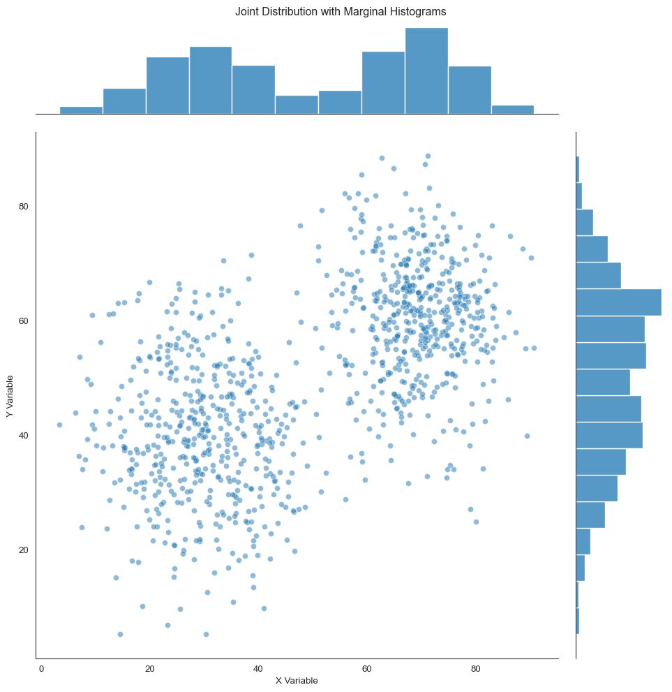</p>
</figure>
</div>
</div>
</div>
<p>The marginal distributions (top and right) show that both X and Y are bimodalthere are two peaks. But the scatter plot reveals that the peaks are <em>correlated</em>: when X is low, Y tends to be low; when X is high, Y tends to be high. This relationship is invisible in the marginals alone.</p>
<p>Joint plots can use different visualizations in the center:</p>
<div id="2caee04e" class="cell" data-fig-height="10" data-fig-width="10" data-execution_count="12">
<details class="code-fold">
<summary>Code</summary>
<div class="sourceCode cell-code" id="cb13"><pre class="sourceCode python code-with-copy"><code class="sourceCode python"><span id="cb13-1"><a href="#cb13-1" aria-hidden="true" tabindex="-1"></a><span class="co"># Create joint plot with hexbin and KDE</span></span>
<span id="cb13-2"><a href="#cb13-2" aria-hidden="true" tabindex="-1"></a>g <span class="op">=</span> sns.jointplot(x<span class="op">=</span>x_large, y<span class="op">=</span>y_large, kind<span class="op">=</span><span class="st">'hex'</span>, height<span class="op">=</span><span class="dv">10</span>,</span>
<span id="cb13-3"><a href="#cb13-3" aria-hidden="true" tabindex="-1"></a>                  marginal_kws<span class="op">=</span><span class="bu">dict</span>(bins<span class="op">=</span><span class="dv">30</span>, fill<span class="op">=</span><span class="va">True</span>))</span>
<span id="cb13-4"><a href="#cb13-4" aria-hidden="true" tabindex="-1"></a>g.set_axis_labels(<span class="st">'X Variable'</span>, <span class="st">'Y Variable'</span>)</span>
<span id="cb13-5"><a href="#cb13-5" aria-hidden="true" tabindex="-1"></a>g.fig.suptitle(<span class="st">'Joint Plot: Hexbin Center with KDE Margins'</span>, y<span class="op">=</span><span class="fl">1.01</span>)</span></code><button title="Copy to Clipboard" class="code-copy-button"><i class="bi"></i></button></pre></div>
</details>
<div class="cell-output cell-output-display" data-execution_count="12">
<pre><code>Text(0.5, 1.01, 'Joint Plot: Hexbin Center with KDE Margins')</code></pre>
<p>Joint plot with hexbin center and KDE margins</p>
</div>
<div class="cell-output cell-output-display">
<div>
<figure class="figure">
<p>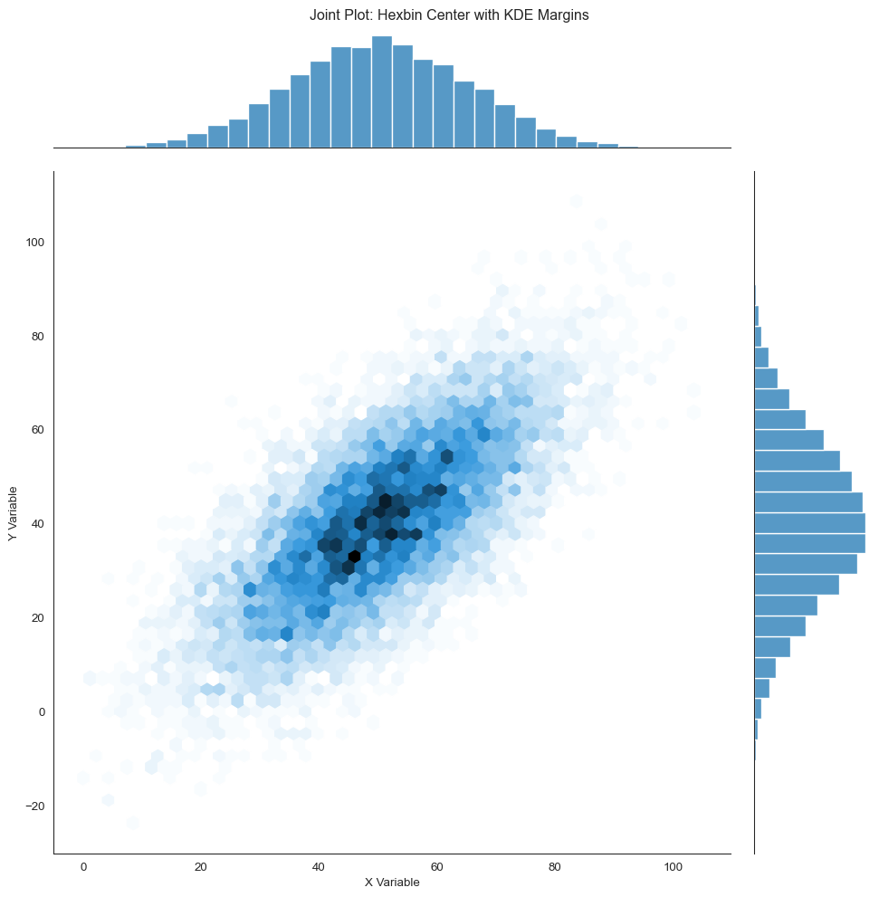</p>
</figure>
</div>
</div>
</div>
<p>Or with KDE everywhere:</p>
<div id="07ea02ba" class="cell" data-fig-height="10" data-fig-width="10" data-execution_count="13">
<details class="code-fold">
<summary>Code</summary>
<div class="sourceCode cell-code" id="cb15"><pre class="sourceCode python code-with-copy"><code class="sourceCode python"><span id="cb15-1"><a href="#cb15-1" aria-hidden="true" tabindex="-1"></a>g <span class="op">=</span> sns.jointplot(x<span class="op">=</span>x_clusters, y<span class="op">=</span>y_clusters, kind<span class="op">=</span><span class="st">'kde'</span>, height<span class="op">=</span><span class="dv">10</span>,</span>
<span id="cb15-2"><a href="#cb15-2" aria-hidden="true" tabindex="-1"></a>                  fill<span class="op">=</span><span class="va">True</span>, cmap<span class="op">=</span><span class="st">'viridis'</span>, thresh<span class="op">=</span><span class="fl">0.05</span>)</span>
<span id="cb15-3"><a href="#cb15-3" aria-hidden="true" tabindex="-1"></a>g.set_axis_labels(<span class="st">'X Variable'</span>, <span class="st">'Y Variable'</span>)</span>
<span id="cb15-4"><a href="#cb15-4" aria-hidden="true" tabindex="-1"></a>g.fig.suptitle(<span class="st">'Joint Plot: All KDE'</span>, y<span class="op">=</span><span class="fl">1.01</span>)</span></code><button title="Copy to Clipboard" class="code-copy-button"><i class="bi"></i></button></pre></div>
</details>
<div class="cell-output cell-output-display" data-execution_count="13">
<pre><code>Text(0.5, 1.01, 'Joint Plot: All KDE')</code></pre>
<p>Joint plot with 2D KDE center and 1D KDE margins</p>
</div>
<div class="cell-output cell-output-display">
<div>
<figure class="figure">
<p>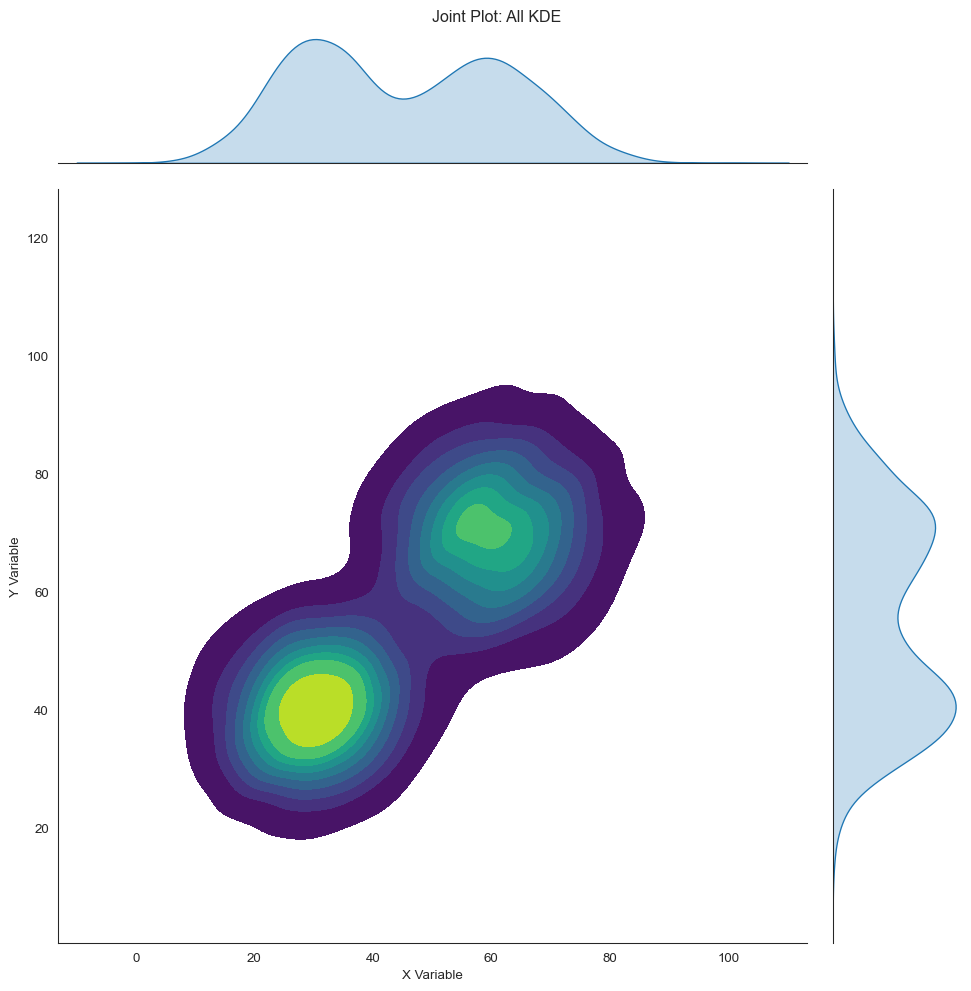</p>
</figure>
</div>
</div>
</div>
<p>Joint plots are particularly useful for: - Understanding if marginal distributions are misleading about the relationship - Seeing if there’s correlation between variables with interesting univariate structure - Presenting a complete picture of a bivariate relationship</p>

<div class="no-row-height column-margin column-container"><div class="">
<p><strong>Pro tip</strong>: When presenting data, start with marginal distributions to establish what each variable looks like, then show the joint distribution to reveal the relationship. This guides your audience from the familiar (1D) to the complex (2D).</p>
</div></div></section>
<section id="visualizing-relationships-across-groups" class="level1" data-number="5">
<h1 data-number="5"><span class="header-section-number">5</span> Visualizing Relationships Across Groups</h1>
<p>Often we want to compare relationships across multiple groups or categories. There are several effective approaches.</p>
<section id="color-coding-by-group" class="level2" data-number="5.1">
<h2 data-number="5.1" class="anchored" data-anchor-id="color-coding-by-group"><span class="header-section-number">5.1</span> Color coding by group</h2>
<p>The simplest approach is to use different colors for different groups:</p>
<div id="597a3649" class="cell" data-fig-height="6" data-fig-width="10" data-execution_count="14">
<details class="code-fold">
<summary>Code</summary>
<div class="sourceCode cell-code" id="cb17"><pre class="sourceCode python code-with-copy"><code class="sourceCode python"><span id="cb17-1"><a href="#cb17-1" aria-hidden="true" tabindex="-1"></a><span class="co"># Generate multi-group data</span></span>
<span id="cb17-2"><a href="#cb17-2" aria-hidden="true" tabindex="-1"></a>np.random.seed(<span class="dv">303</span>)</span>
<span id="cb17-3"><a href="#cb17-3" aria-hidden="true" tabindex="-1"></a>n_per_group <span class="op">=</span> <span class="dv">150</span></span>
<span id="cb17-4"><a href="#cb17-4" aria-hidden="true" tabindex="-1"></a></span>
<span id="cb17-5"><a href="#cb17-5" aria-hidden="true" tabindex="-1"></a>group_a_x <span class="op">=</span> np.random.normal(<span class="dv">40</span>, <span class="dv">12</span>, n_per_group)</span>
<span id="cb17-6"><a href="#cb17-6" aria-hidden="true" tabindex="-1"></a>group_a_y <span class="op">=</span> <span class="fl">0.7</span> <span class="op">*</span> group_a_x <span class="op">+</span> np.random.normal(<span class="dv">0</span>, <span class="dv">8</span>, n_per_group)</span>
<span id="cb17-7"><a href="#cb17-7" aria-hidden="true" tabindex="-1"></a></span>
<span id="cb17-8"><a href="#cb17-8" aria-hidden="true" tabindex="-1"></a>group_b_x <span class="op">=</span> np.random.normal(<span class="dv">55</span>, <span class="dv">10</span>, n_per_group)</span>
<span id="cb17-9"><a href="#cb17-9" aria-hidden="true" tabindex="-1"></a>group_b_y <span class="op">=</span> <span class="fl">1.2</span> <span class="op">*</span> group_b_x <span class="op">+</span> np.random.normal(<span class="op">-</span><span class="dv">20</span>, <span class="dv">10</span>, n_per_group)</span>
<span id="cb17-10"><a href="#cb17-10" aria-hidden="true" tabindex="-1"></a></span>
<span id="cb17-11"><a href="#cb17-11" aria-hidden="true" tabindex="-1"></a>group_c_x <span class="op">=</span> np.random.normal(<span class="dv">60</span>, <span class="dv">15</span>, n_per_group)</span>
<span id="cb17-12"><a href="#cb17-12" aria-hidden="true" tabindex="-1"></a>group_c_y <span class="op">=</span> <span class="fl">0.3</span> <span class="op">*</span> group_c_x <span class="op">+</span> np.random.normal(<span class="dv">30</span>, <span class="dv">12</span>, n_per_group)</span>
<span id="cb17-13"><a href="#cb17-13" aria-hidden="true" tabindex="-1"></a></span>
<span id="cb17-14"><a href="#cb17-14" aria-hidden="true" tabindex="-1"></a>df_groups <span class="op">=</span> pd.DataFrame({</span>
<span id="cb17-15"><a href="#cb17-15" aria-hidden="true" tabindex="-1"></a>    <span class="st">'x'</span>: np.concatenate([group_a_x, group_b_x, group_c_x]),</span>
<span id="cb17-16"><a href="#cb17-16" aria-hidden="true" tabindex="-1"></a>    <span class="st">'y'</span>: np.concatenate([group_a_y, group_b_y, group_c_y]),</span>
<span id="cb17-17"><a href="#cb17-17" aria-hidden="true" tabindex="-1"></a>    <span class="st">'group'</span>: [<span class="st">'A'</span>] <span class="op">*</span> n_per_group <span class="op">+</span> [<span class="st">'B'</span>] <span class="op">*</span> n_per_group <span class="op">+</span> [<span class="st">'C'</span>] <span class="op">*</span> n_per_group</span>
<span id="cb17-18"><a href="#cb17-18" aria-hidden="true" tabindex="-1"></a>})</span>
<span id="cb17-19"><a href="#cb17-19" aria-hidden="true" tabindex="-1"></a></span>
<span id="cb17-20"><a href="#cb17-20" aria-hidden="true" tabindex="-1"></a>fig, ax <span class="op">=</span> plt.subplots(figsize<span class="op">=</span>(<span class="dv">10</span>, <span class="dv">6</span>))</span>
<span id="cb17-21"><a href="#cb17-21" aria-hidden="true" tabindex="-1"></a><span class="cf">for</span> group, color <span class="kw">in</span> <span class="bu">zip</span>([<span class="st">'A'</span>, <span class="st">'B'</span>, <span class="st">'C'</span>], sns.color_palette(<span class="st">'muted'</span>, <span class="dv">3</span>)):</span>
<span id="cb17-22"><a href="#cb17-22" aria-hidden="true" tabindex="-1"></a>    subset <span class="op">=</span> df_groups[df_groups[<span class="st">'group'</span>] <span class="op">==</span> group]</span>
<span id="cb17-23"><a href="#cb17-23" aria-hidden="true" tabindex="-1"></a>    ax.scatter(subset[<span class="st">'x'</span>], subset[<span class="st">'y'</span>], label<span class="op">=</span><span class="ss">f'Group </span><span class="sc">{</span>group<span class="sc">}</span><span class="ss">'</span>,</span>
<span id="cb17-24"><a href="#cb17-24" aria-hidden="true" tabindex="-1"></a>               alpha<span class="op">=</span><span class="fl">0.6</span>, s<span class="op">=</span><span class="dv">50</span>, color<span class="op">=</span>color, edgecolors<span class="op">=</span><span class="st">'white'</span>, linewidth<span class="op">=</span><span class="fl">0.5</span>)</span>
<span id="cb17-25"><a href="#cb17-25" aria-hidden="true" tabindex="-1"></a></span>
<span id="cb17-26"><a href="#cb17-26" aria-hidden="true" tabindex="-1"></a>ax.set_xlabel(<span class="st">'X Variable'</span>)</span>
<span id="cb17-27"><a href="#cb17-27" aria-hidden="true" tabindex="-1"></a>ax.set_ylabel(<span class="st">'Y Variable'</span>)</span>
<span id="cb17-28"><a href="#cb17-28" aria-hidden="true" tabindex="-1"></a>ax.set_title(<span class="st">'Relationships Across Groups'</span>)</span>
<span id="cb17-29"><a href="#cb17-29" aria-hidden="true" tabindex="-1"></a>ax.legend()</span>
<span id="cb17-30"><a href="#cb17-30" aria-hidden="true" tabindex="-1"></a>sns.despine()</span></code><button title="Copy to Clipboard" class="code-copy-button"><i class="bi"></i></button></pre></div>
</details>
<div class="cell-output cell-output-display">
<div class="quarto-figure quarto-figure-center">
<figure class="figure">
<p>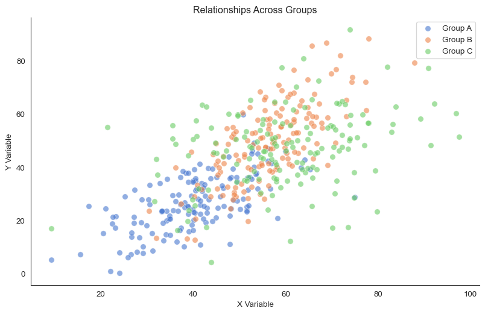</p>
<figcaption>Scatter plot with color-coded groups</figcaption>
</figure>
</div>
</div>
</div>
<p>This reveals that the three groups have different relationships: Group A has a positive moderate slope, Group B has a steeper positive relationship, and Group C has almost no relationship.</p>
<div class="callout callout-style-default callout-warning callout-titled">
<div class="callout-header d-flex align-content-center">
<div class="callout-icon-container">
<i class="callout-icon"></i>
</div>
<div class="callout-title-container flex-fill">
Simpson’s Paradox
</div>
</div>
<div class="callout-body-container callout-body">
<p>Be careful! Sometimes the overall trend (pooling all groups) can be opposite to the trend within each group. This is called <strong>Simpson’s Paradox</strong>. Always visualize groups separately to check if pooling is appropriate.</p>
</div>
</div>
</section>
<section id="small-multiples-faceting" class="level2" data-number="5.2">
<h2 data-number="5.2" class="anchored" data-anchor-id="small-multiples-faceting"><span class="header-section-number">5.2</span> Small multiples (faceting)</h2>
<p>When groups overlap heavily or there are many groups, <strong>small multiples</strong>separate plots for each groupwork better than color coding:</p>
<div id="f6caf70e" class="cell" data-fig-height="4" data-fig-width="14" data-execution_count="15">
<details class="code-fold">
<summary>Code</summary>
<div class="sourceCode cell-code" id="cb18"><pre class="sourceCode python code-with-copy"><code class="sourceCode python"><span id="cb18-1"><a href="#cb18-1" aria-hidden="true" tabindex="-1"></a>g <span class="op">=</span> sns.FacetGrid(df_groups, col<span class="op">=</span><span class="st">'group'</span>, height<span class="op">=</span><span class="dv">4</span>, aspect<span class="op">=</span><span class="fl">1.3</span>)</span>
<span id="cb18-2"><a href="#cb18-2" aria-hidden="true" tabindex="-1"></a>g.map_dataframe(sns.scatterplot, x<span class="op">=</span><span class="st">'x'</span>, y<span class="op">=</span><span class="st">'y'</span>, alpha<span class="op">=</span><span class="fl">0.6</span>, s<span class="op">=</span><span class="dv">50</span>)</span>
<span id="cb18-3"><a href="#cb18-3" aria-hidden="true" tabindex="-1"></a>g.map_dataframe(sns.regplot, x<span class="op">=</span><span class="st">'x'</span>, y<span class="op">=</span><span class="st">'y'</span>, scatter<span class="op">=</span><span class="va">False</span>, color<span class="op">=</span><span class="st">'red'</span>)</span>
<span id="cb18-4"><a href="#cb18-4" aria-hidden="true" tabindex="-1"></a>g.set_axis_labels(<span class="st">'X Variable'</span>, <span class="st">'Y Variable'</span>)</span>
<span id="cb18-5"><a href="#cb18-5" aria-hidden="true" tabindex="-1"></a>g.set_titles(<span class="st">'Group </span><span class="sc">{col_name}</span><span class="st">'</span>)</span>
<span id="cb18-6"><a href="#cb18-6" aria-hidden="true" tabindex="-1"></a>sns.despine()</span>
<span id="cb18-7"><a href="#cb18-7" aria-hidden="true" tabindex="-1"></a>plt.tight_layout()</span></code><button title="Copy to Clipboard" class="code-copy-button"><i class="bi"></i></button></pre></div>
</details>
<div class="cell-output cell-output-display">
<div class="quarto-figure quarto-figure-center">
<figure class="figure">
<p>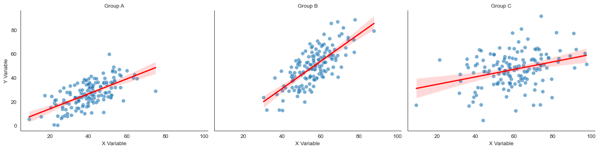</p>
<figcaption>Small multiples showing relationship for each group separately</figcaption>
</figure>
</div>
</div>
</div>
<p>Small multiples make it easy to compare the strength and direction of relationships across groups without visual clutter.</p>
</section>
<section id="contour-overlays" class="level2" data-number="5.3">
<h2 data-number="5.3" class="anchored" data-anchor-id="contour-overlays"><span class="header-section-number">5.3</span> Contour overlays</h2>
<p>For large datasets, overlaying density contours for each group can be very effective:</p>
<div id="ee43f32b" class="cell" data-fig-height="7" data-fig-width="10" data-execution_count="16">
<details class="code-fold">
<summary>Code</summary>
<div class="sourceCode cell-code" id="cb19"><pre class="sourceCode python code-with-copy"><code class="sourceCode python"><span id="cb19-1"><a href="#cb19-1" aria-hidden="true" tabindex="-1"></a>fig, ax <span class="op">=</span> plt.subplots(figsize<span class="op">=</span>(<span class="dv">10</span>, <span class="dv">7</span>))</span>
<span id="cb19-2"><a href="#cb19-2" aria-hidden="true" tabindex="-1"></a></span>
<span id="cb19-3"><a href="#cb19-3" aria-hidden="true" tabindex="-1"></a>colors <span class="op">=</span> sns.color_palette(<span class="st">'muted'</span>, <span class="dv">3</span>)</span>
<span id="cb19-4"><a href="#cb19-4" aria-hidden="true" tabindex="-1"></a><span class="cf">for</span> group, color <span class="kw">in</span> <span class="bu">zip</span>([<span class="st">'A'</span>, <span class="st">'B'</span>, <span class="st">'C'</span>], colors):</span>
<span id="cb19-5"><a href="#cb19-5" aria-hidden="true" tabindex="-1"></a>    subset <span class="op">=</span> df_groups[df_groups[<span class="st">'group'</span>] <span class="op">==</span> group]</span>
<span id="cb19-6"><a href="#cb19-6" aria-hidden="true" tabindex="-1"></a>    sns.kdeplot(x<span class="op">=</span>subset[<span class="st">'x'</span>], y<span class="op">=</span>subset[<span class="st">'y'</span>], levels<span class="op">=</span><span class="dv">5</span>,</span>
<span id="cb19-7"><a href="#cb19-7" aria-hidden="true" tabindex="-1"></a>                color<span class="op">=</span>color, linewidths<span class="op">=</span><span class="dv">2</span>, label<span class="op">=</span><span class="ss">f'Group </span><span class="sc">{</span>group<span class="sc">}</span><span class="ss">'</span>, ax<span class="op">=</span>ax)</span>
<span id="cb19-8"><a href="#cb19-8" aria-hidden="true" tabindex="-1"></a></span>
<span id="cb19-9"><a href="#cb19-9" aria-hidden="true" tabindex="-1"></a>ax.set_xlabel(<span class="st">'X Variable'</span>)</span>
<span id="cb19-10"><a href="#cb19-10" aria-hidden="true" tabindex="-1"></a>ax.set_ylabel(<span class="st">'Y Variable'</span>)</span>
<span id="cb19-11"><a href="#cb19-11" aria-hidden="true" tabindex="-1"></a>ax.set_title(<span class="st">'Density Contours by Group'</span>)</span>
<span id="cb19-12"><a href="#cb19-12" aria-hidden="true" tabindex="-1"></a>ax.legend()</span>
<span id="cb19-13"><a href="#cb19-13" aria-hidden="true" tabindex="-1"></a>sns.despine()</span></code><button title="Copy to Clipboard" class="code-copy-button"><i class="bi"></i></button></pre></div>
</details>
<div class="cell-output cell-output-stderr">
<pre><code>/var/folders/j7/9dgqq5g53vnbsbmvh2yqtckr0000gr/T/ipykernel_75942/3335885635.py:12: UserWarning: No artists with labels found to put in legend.  Note that artists whose label start with an underscore are ignored when legend() is called with no argument.
  ax.legend()</code></pre>
</div>
<div class="cell-output cell-output-display">
<div class="quarto-figure quarto-figure-center">
<figure class="figure">
<p>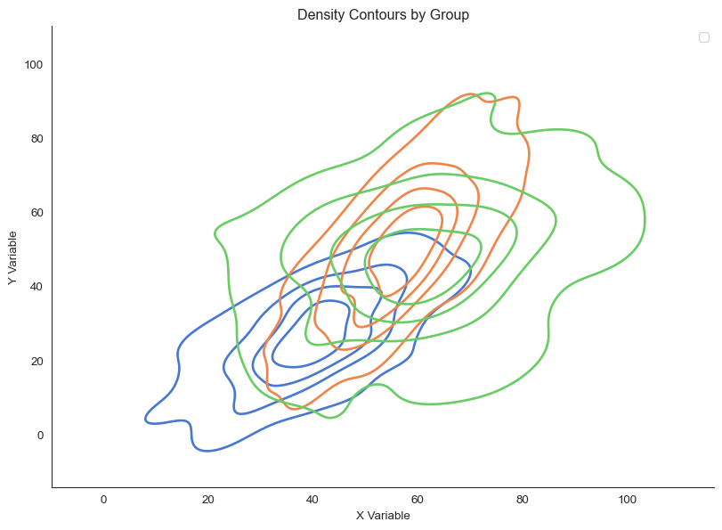</p>
<figcaption>Overlaid density contours reveal different relationship shapes</figcaption>
</figure>
</div>
</div>
</div>
<p>This clearly shows that Groups A and B have elongated, correlated distributions (indicating strong relationships), while Group C is more circular (indicating weak correlation).</p>
</section>
</section>
<section id="the-bigger-picture" class="level1" data-number="6">
<h1 data-number="6"><span class="header-section-number">6</span> The Bigger Picture</h1>
<p>Visualizing bivariate relationships isn’t just about making pretty picturesit’s about <strong>seeing patterns that summary statistics conceal</strong>.</p>
<p>When you reduce a relationship to a single number (a correlation coefficient, a slope, a p-value), you lose crucial information: - Is the relationship linear or curved? - Are there outliers driving the result? - Are there subgroups with different patterns? - Is the relationship consistent across the range of your data?</p>
<p>Anscombe’s Quartet taught us this lesson half a century ago, yet papers still report correlations without showing scatter plots. Don’t make this mistake.</p>
<p>The choice of visualization method matters: - <strong>Scatter plots</strong> for small to moderate datasets where individual points matter - <strong>Hexbin or heatmaps</strong> for large datasets where density matters more than individuals - <strong>2D KDE and contours</strong> for smooth, assumption-light density estimation - <strong>Joint plots</strong> for connecting bivariate relationships to univariate distributions</p>
<p>But the most important choice is the simplest: <strong>always plot your data</strong>. Let your audience see what you see. Trust them to interpret patterns, not just summary statistics.</p>
<p>As statistician John Tukey wrote: “The greatest value of a picture is when it forces us to notice what we never expected to see.”</p>


<!-- -->

</section>

</main> <!-- /main -->
<script id="quarto-html-after-body" type="application/javascript">
  window.document.addEventListener("DOMContentLoaded", function (event) {
    const icon = "";
    const anchorJS = new window.AnchorJS();
    anchorJS.options = {
      placement: 'right',
      icon: icon
    };
    anchorJS.add('.anchored');
    const isCodeAnnotation = (el) => {
      for (const clz of el.classList) {
        if (clz.startsWith('code-annotation-')) {                     
          return true;
        }
      }
      return false;
    }
    const onCopySuccess = function(e) {
      // button target
      const button = e.trigger;
      // don't keep focus
      button.blur();
      // flash "checked"
      button.classList.add('code-copy-button-checked');
      var currentTitle = button.getAttribute("title");
      button.setAttribute("title", "Copied!");
      let tooltip;
      if (window.bootstrap) {
        button.setAttribute("data-bs-toggle", "tooltip");
        button.setAttribute("data-bs-placement", "left");
        button.setAttribute("data-bs-title", "Copied!");
        tooltip = new bootstrap.Tooltip(button, 
          { trigger: "manual", 
            customClass: "code-copy-button-tooltip",
            offset: [0, -8]});
        tooltip.show();    
      }
      setTimeout(function() {
        if (tooltip) {
          tooltip.hide();
          button.removeAttribute("data-bs-title");
          button.removeAttribute("data-bs-toggle");
          button.removeAttribute("data-bs-placement");
        }
        button.setAttribute("title", currentTitle);
        button.classList.remove('code-copy-button-checked');
      }, 1000);
      // clear code selection
      e.clearSelection();
    }
    const getTextToCopy = function(trigger) {
        const codeEl = trigger.previousElementSibling.cloneNode(true);
        for (const childEl of codeEl.children) {
          if (isCodeAnnotation(childEl)) {
            childEl.remove();
          }
        }
        return codeEl.innerText;
    }
    const clipboard = new window.ClipboardJS('.code-copy-button:not([data-in-quarto-modal])', {
      text: getTextToCopy
    });
    clipboard.on('success', onCopySuccess);
    if (window.document.getElementById('quarto-embedded-source-code-modal')) {
      const clipboardModal = new window.ClipboardJS('.code-copy-button[data-in-quarto-modal]', {
        text: getTextToCopy,
        container: window.document.getElementById('quarto-embedded-source-code-modal')
      });
      clipboardModal.on('success', onCopySuccess);
    }
    const viewSource = window.document.getElementById('quarto-view-source') ||
                       window.document.getElementById('quarto-code-tools-source');
    if (viewSource) {
      const sourceUrl = viewSource.getAttribute("data-quarto-source-url");
      viewSource.addEventListener("click", function(e) {
        if (sourceUrl) {
          // rstudio viewer pane
          if (/\bcapabilities=\b/.test(window.location)) {
            window.open(sourceUrl);
          } else {
            window.location.href = sourceUrl;
          }
        } else {
          const modal = new bootstrap.Modal(document.getElementById('quarto-embedded-source-code-modal'));
          modal.show();
        }
        return false;
      });
    }
    function toggleCodeHandler(show) {
      return function(e) {
        const detailsSrc = window.document.querySelectorAll(".cell > details > .sourceCode");
        for (let i=0; i<detailsSrc.length; i++) {
          const details = detailsSrc[i].parentElement;
          if (show) {
            details.open = true;
          } else {
            details.removeAttribute("open");
          }
        }
        const cellCodeDivs = window.document.querySelectorAll(".cell > .sourceCode");
        const fromCls = show ? "hidden" : "unhidden";
        const toCls = show ? "unhidden" : "hidden";
        for (let i=0; i<cellCodeDivs.length; i++) {
          const codeDiv = cellCodeDivs[i];
          if (codeDiv.classList.contains(fromCls)) {
            codeDiv.classList.remove(fromCls);
            codeDiv.classList.add(toCls);
          } 
        }
        return false;
      }
    }
    const hideAllCode = window.document.getElementById("quarto-hide-all-code");
    if (hideAllCode) {
      hideAllCode.addEventListener("click", toggleCodeHandler(false));
    }
    const showAllCode = window.document.getElementById("quarto-show-all-code");
    if (showAllCode) {
      showAllCode.addEventListener("click", toggleCodeHandler(true));
    }
      var localhostRegex = new RegExp(/^(?:http|https):\/\/localhost\:?[0-9]*\//);
      var mailtoRegex = new RegExp(/^mailto:/);
        var filterRegex = new RegExp('/' + window.location.host + '/');
      var isInternal = (href) => {
          return filterRegex.test(href) || localhostRegex.test(href) || mailtoRegex.test(href);
      }
      // Inspect non-navigation links and adorn them if external
     var links = window.document.querySelectorAll('a[href]:not(.nav-link):not(.navbar-brand):not(.toc-action):not(.sidebar-link):not(.sidebar-item-toggle):not(.pagination-link):not(.no-external):not([aria-hidden]):not(.dropdown-item):not(.quarto-navigation-tool):not(.about-link)');
      for (var i=0; i<links.length; i++) {
        const link = links[i];
        if (!isInternal(link.href)) {
          // undo the damage that might have been done by quarto-nav.js in the case of
          // links that we want to consider external
          if (link.dataset.originalHref !== undefined) {
            link.href = link.dataset.originalHref;
          }
        }
      }
    function tippyHover(el, contentFn, onTriggerFn, onUntriggerFn) {
      const config = {
        allowHTML: true,
        maxWidth: 500,
        delay: 100,
        arrow: false,
        appendTo: function(el) {
            return el.parentElement;
        },
        interactive: true,
        interactiveBorder: 10,
        theme: 'quarto',
        placement: 'bottom-start',
      };
      if (contentFn) {
        config.content = contentFn;
      }
      if (onTriggerFn) {
        config.onTrigger = onTriggerFn;
      }
      if (onUntriggerFn) {
        config.onUntrigger = onUntriggerFn;
      }
      window.tippy(el, config); 
    }
    const noterefs = window.document.querySelectorAll('a[role="doc-noteref"]');
    for (var i=0; i<noterefs.length; i++) {
      const ref = noterefs[i];
      tippyHover(ref, function() {
        // use id or data attribute instead here
        let href = ref.getAttribute('data-footnote-href') || ref.getAttribute('href');
        try { href = new URL(href).hash; } catch {}
        const id = href.replace(/^#\/?/, "");
        const note = window.document.getElementById(id);
        if (note) {
          return note.innerHTML;
        } else {
          return "";
        }
      });
    }
    const xrefs = window.document.querySelectorAll('a.quarto-xref');
    const processXRef = (id, note) => {
      // Strip column container classes
      const stripColumnClz = (el) => {
        el.classList.remove("page-full", "page-columns");
        if (el.children) {
          for (const child of el.children) {
            stripColumnClz(child);
          }
        }
      }
      stripColumnClz(note)
      if (id === null || id.startsWith('sec-')) {
        // Special case sections, only their first couple elements
        const container = document.createElement("div");
        if (note.children && note.children.length > 2) {
          container.appendChild(note.children[0].cloneNode(true));
          for (let i = 1; i < note.children.length; i++) {
            const child = note.children[i];
            if (child.tagName === "P" && child.innerText === "") {
              continue;
            } else {
              container.appendChild(child.cloneNode(true));
              break;
            }
          }
          if (window.Quarto?.typesetMath) {
            window.Quarto.typesetMath(container);
          }
          return container.innerHTML
        } else {
          if (window.Quarto?.typesetMath) {
            window.Quarto.typesetMath(note);
          }
          return note.innerHTML;
        }
      } else {
        // Remove any anchor links if they are present
        const anchorLink = note.querySelector('a.anchorjs-link');
        if (anchorLink) {
          anchorLink.remove();
        }
        if (window.Quarto?.typesetMath) {
          window.Quarto.typesetMath(note);
        }
        if (note.classList.contains("callout")) {
          return note.outerHTML;
        } else {
          return note.innerHTML;
        }
      }
    }
    for (var i=0; i<xrefs.length; i++) {
      const xref = xrefs[i];
      tippyHover(xref, undefined, function(instance) {
        instance.disable();
        let url = xref.getAttribute('href');
        let hash = undefined; 
        if (url.startsWith('#')) {
          hash = url;
        } else {
          try { hash = new URL(url).hash; } catch {}
        }
        if (hash) {
          const id = hash.replace(/^#\/?/, "");
          const note = window.document.getElementById(id);
          if (note !== null) {
            try {
              const html = processXRef(id, note.cloneNode(true));
              instance.setContent(html);
            } finally {
              instance.enable();
              instance.show();
            }
          } else {
            // See if we can fetch this
            fetch(url.split('#')[0])
            .then(res => res.text())
            .then(html => {
              const parser = new DOMParser();
              const htmlDoc = parser.parseFromString(html, "text/html");
              const note = htmlDoc.getElementById(id);
              if (note !== null) {
                const html = processXRef(id, note);
                instance.setContent(html);
              } 
            }).finally(() => {
              instance.enable();
              instance.show();
            });
          }
        } else {
          // See if we can fetch a full url (with no hash to target)
          // This is a special case and we should probably do some content thinning / targeting
          fetch(url)
          .then(res => res.text())
          .then(html => {
            const parser = new DOMParser();
            const htmlDoc = parser.parseFromString(html, "text/html");
            const note = htmlDoc.querySelector('main.content');
            if (note !== null) {
              // This should only happen for chapter cross references
              // (since there is no id in the URL)
              // remove the first header
              if (note.children.length > 0 && note.children[0].tagName === "HEADER") {
                note.children[0].remove();
              }
              const html = processXRef(null, note);
              instance.setContent(html);
            } 
          }).finally(() => {
            instance.enable();
            instance.show();
          });
        }
      }, function(instance) {
      });
    }
        let selectedAnnoteEl;
        const selectorForAnnotation = ( cell, annotation) => {
          let cellAttr = 'data-code-cell="' + cell + '"';
          let lineAttr = 'data-code-annotation="' +  annotation + '"';
          const selector = 'span[' + cellAttr + '][' + lineAttr + ']';
          return selector;
        }
        const selectCodeLines = (annoteEl) => {
          const doc = window.document;
          const targetCell = annoteEl.getAttribute("data-target-cell");
          const targetAnnotation = annoteEl.getAttribute("data-target-annotation");
          const annoteSpan = window.document.querySelector(selectorForAnnotation(targetCell, targetAnnotation));
          const lines = annoteSpan.getAttribute("data-code-lines").split(",");
          const lineIds = lines.map((line) => {
            return targetCell + "-" + line;
          })
          let top = null;
          let height = null;
          let parent = null;
          if (lineIds.length > 0) {
              //compute the position of the single el (top and bottom and make a div)
              const el = window.document.getElementById(lineIds[0]);
              top = el.offsetTop;
              height = el.offsetHeight;
              parent = el.parentElement.parentElement;
            if (lineIds.length > 1) {
              const lastEl = window.document.getElementById(lineIds[lineIds.length - 1]);
              const bottom = lastEl.offsetTop + lastEl.offsetHeight;
              height = bottom - top;
            }
            if (top !== null && height !== null && parent !== null) {
              // cook up a div (if necessary) and position it 
              let div = window.document.getElementById("code-annotation-line-highlight");
              if (div === null) {
                div = window.document.createElement("div");
                div.setAttribute("id", "code-annotation-line-highlight");
                div.style.position = 'absolute';
                parent.appendChild(div);
              }
              div.style.top = top - 2 + "px";
              div.style.height = height + 4 + "px";
              div.style.left = 0;
              let gutterDiv = window.document.getElementById("code-annotation-line-highlight-gutter");
              if (gutterDiv === null) {
                gutterDiv = window.document.createElement("div");
                gutterDiv.setAttribute("id", "code-annotation-line-highlight-gutter");
                gutterDiv.style.position = 'absolute';
                const codeCell = window.document.getElementById(targetCell);
                const gutter = codeCell.querySelector('.code-annotation-gutter');
                gutter.appendChild(gutterDiv);
              }
              gutterDiv.style.top = top - 2 + "px";
              gutterDiv.style.height = height + 4 + "px";
            }
            selectedAnnoteEl = annoteEl;
          }
        };
        const unselectCodeLines = () => {
          const elementsIds = ["code-annotation-line-highlight", "code-annotation-line-highlight-gutter"];
          elementsIds.forEach((elId) => {
            const div = window.document.getElementById(elId);
            if (div) {
              div.remove();
            }
          });
          selectedAnnoteEl = undefined;
        };
          // Handle positioning of the toggle
      window.addEventListener(
        "resize",
        throttle(() => {
          elRect = undefined;
          if (selectedAnnoteEl) {
            selectCodeLines(selectedAnnoteEl);
          }
        }, 10)
      );
      function throttle(fn, ms) {
      let throttle = false;
      let timer;
        return (...args) => {
          if(!throttle) { // first call gets through
              fn.apply(this, args);
              throttle = true;
          } else { // all the others get throttled
              if(timer) clearTimeout(timer); // cancel #2
              timer = setTimeout(() => {
                fn.apply(this, args);
                timer = throttle = false;
              }, ms);
          }
        };
      }
        // Attach click handler to the DT
        const annoteDls = window.document.querySelectorAll('dt[data-target-cell]');
        for (const annoteDlNode of annoteDls) {
          annoteDlNode.addEventListener('click', (event) => {
            const clickedEl = event.target;
            if (clickedEl !== selectedAnnoteEl) {
              unselectCodeLines();
              const activeEl = window.document.querySelector('dt[data-target-cell].code-annotation-active');
              if (activeEl) {
                activeEl.classList.remove('code-annotation-active');
              }
              selectCodeLines(clickedEl);
              clickedEl.classList.add('code-annotation-active');
            } else {
              // Unselect the line
              unselectCodeLines();
              clickedEl.classList.remove('code-annotation-active');
            }
          });
        }
    const findCites = (el) => {
      const parentEl = el.parentElement;
      if (parentEl) {
        const cites = parentEl.dataset.cites;
        if (cites) {
          return {
            el,
            cites: cites.split(' ')
          };
        } else {
          return findCites(el.parentElement)
        }
      } else {
        return undefined;
      }
    };
    var bibliorefs = window.document.querySelectorAll('a[role="doc-biblioref"]');
    for (var i=0; i<bibliorefs.length; i++) {
      const ref = bibliorefs[i];
      const citeInfo = findCites(ref);
      if (citeInfo) {
        tippyHover(citeInfo.el, function() {
          var popup = window.document.createElement('div');
          citeInfo.cites.forEach(function(cite) {
            var citeDiv = window.document.createElement('div');
            citeDiv.classList.add('hanging-indent');
            citeDiv.classList.add('csl-entry');
            var biblioDiv = window.document.getElementById('ref-' + cite);
            if (biblioDiv) {
              citeDiv.innerHTML = biblioDiv.innerHTML;
            }
            popup.appendChild(citeDiv);
          });
          return popup.innerHTML;
        });
      }
    }
  });
  </script>
<nav class="page-navigation">
  <div class="nav-page nav-page-previous">
      <a href="../m02-visualization/1d-data.html" class="pagination-link" aria-label="Visualizing 1D Data">
        <i class="bi bi-arrow-left-short"></i> <span class="nav-page-text">Visualizing 1D Data</span>
      </a>          
  </div>
  <div class="nav-page nav-page-next">
      <a href="../m02-visualization/highd-data.html" class="pagination-link" aria-label="Visualizing High-Dimensional Data">
        <span class="nav-page-text">Visualizing High-Dimensional Data</span> <i class="bi bi-arrow-right-short"></i>
      </a>
  </div>
</nav><div class="modal fade" id="quarto-embedded-source-code-modal" tabindex="-1" aria-labelledby="quarto-embedded-source-code-modal-label" aria-hidden="true"><div class="modal-dialog modal-dialog-scrollable"><div class="modal-content"><div class="modal-header"><h5 class="modal-title" id="quarto-embedded-source-code-modal-label">Source Code</h5><button class="btn-close" data-bs-dismiss="modal"></button></div><div class="modal-body"><div class="">
<div class="sourceCode" id="cb21" data-shortcodes="false"><pre class="sourceCode markdown code-with-copy"><code class="sourceCode markdown"><span id="cb21-1"><a href="#cb21-1" aria-hidden="true" tabindex="-1"></a><span class="co">---</span></span>
<span id="cb21-2"><a href="#cb21-2" aria-hidden="true" tabindex="-1"></a><span class="an">title:</span><span class="co"> "2D Data Visualization"</span></span>
<span id="cb21-3"><a href="#cb21-3" aria-hidden="true" tabindex="-1"></a><span class="an">jupyter:</span><span class="co"> advnetsci</span></span>
<span id="cb21-4"><a href="#cb21-4" aria-hidden="true" tabindex="-1"></a><span class="an">execute:</span></span>
<span id="cb21-5"><a href="#cb21-5" aria-hidden="true" tabindex="-1"></a><span class="co">    enabled: true</span></span>
<span id="cb21-6"><a href="#cb21-6" aria-hidden="true" tabindex="-1"></a><span class="co">---</span></span>
<span id="cb21-7"><a href="#cb21-7" aria-hidden="true" tabindex="-1"></a></span>
<span id="cb21-8"><a href="#cb21-8" aria-hidden="true" tabindex="-1"></a>You've probably heard that "correlation doesn't equal causation." But here's an even more fundamental problem: **a correlation coefficient doesn't tell you what your data actually looks like.**</span>
<span id="cb21-9"><a href="#cb21-9" aria-hidden="true" tabindex="-1"></a></span>
<span id="cb21-10"><a href="#cb21-10" aria-hidden="true" tabindex="-1"></a>In 1973, statistician Francis Anscombe created four datasets that became legendary in data visualization. Each dataset has 11 (x, y) pairs. Each has the same mean for x and y, the same variance, andmost remarkably---the same correlation coefficient (r = 0.816) and the same linear regression line.</span>
<span id="cb21-11"><a href="#cb21-11" aria-hidden="true" tabindex="-1"></a></span>
<span id="cb21-12"><a href="#cb21-12" aria-hidden="true" tabindex="-1"></a>But when you plot them, they tell completely different stories.</span>
<span id="cb21-13"><a href="#cb21-13" aria-hidden="true" tabindex="-1"></a></span>
<span id="cb21-16"><a href="#cb21-16" aria-hidden="true" tabindex="-1"></a><span class="in">```{python}</span></span>
<span id="cb21-17"><a href="#cb21-17" aria-hidden="true" tabindex="-1"></a><span class="co">#| fig-cap: "Anscombe's Quartet: Four datasets with identical summary statistics but completely different relationships"</span></span>
<span id="cb21-18"><a href="#cb21-18" aria-hidden="true" tabindex="-1"></a><span class="co">#| fig-width: 12</span></span>
<span id="cb21-19"><a href="#cb21-19" aria-hidden="true" tabindex="-1"></a><span class="co">#| fig-height: 10</span></span>
<span id="cb21-20"><a href="#cb21-20" aria-hidden="true" tabindex="-1"></a><span class="co">#| code-fold: true</span></span>
<span id="cb21-21"><a href="#cb21-21" aria-hidden="true" tabindex="-1"></a><span class="im">import</span> seaborn <span class="im">as</span> sns</span>
<span id="cb21-22"><a href="#cb21-22" aria-hidden="true" tabindex="-1"></a><span class="im">import</span> matplotlib.pyplot <span class="im">as</span> plt</span>
<span id="cb21-23"><a href="#cb21-23" aria-hidden="true" tabindex="-1"></a><span class="im">import</span> numpy <span class="im">as</span> np</span>
<span id="cb21-24"><a href="#cb21-24" aria-hidden="true" tabindex="-1"></a><span class="im">import</span> pandas <span class="im">as</span> pd</span>
<span id="cb21-25"><a href="#cb21-25" aria-hidden="true" tabindex="-1"></a></span>
<span id="cb21-26"><a href="#cb21-26" aria-hidden="true" tabindex="-1"></a><span class="co"># Load Anscombe's quartet</span></span>
<span id="cb21-27"><a href="#cb21-27" aria-hidden="true" tabindex="-1"></a>anscombe <span class="op">=</span> sns.load_dataset(<span class="st">"anscombe"</span>)</span>
<span id="cb21-28"><a href="#cb21-28" aria-hidden="true" tabindex="-1"></a></span>
<span id="cb21-29"><a href="#cb21-29" aria-hidden="true" tabindex="-1"></a><span class="co"># Create the plot</span></span>
<span id="cb21-30"><a href="#cb21-30" aria-hidden="true" tabindex="-1"></a>sns.set_style(<span class="st">"white"</span>)</span>
<span id="cb21-31"><a href="#cb21-31" aria-hidden="true" tabindex="-1"></a>g <span class="op">=</span> sns.FacetGrid(anscombe, col<span class="op">=</span><span class="st">"dataset"</span>, col_wrap<span class="op">=</span><span class="dv">2</span>, height<span class="op">=</span><span class="dv">4</span>, aspect<span class="op">=</span><span class="fl">1.2</span>)</span>
<span id="cb21-32"><a href="#cb21-32" aria-hidden="true" tabindex="-1"></a>g.map_dataframe(sns.scatterplot, x<span class="op">=</span><span class="st">"x"</span>, y<span class="op">=</span><span class="st">"y"</span>, s<span class="op">=</span><span class="dv">100</span>)</span>
<span id="cb21-33"><a href="#cb21-33" aria-hidden="true" tabindex="-1"></a>g.map_dataframe(sns.regplot, x<span class="op">=</span><span class="st">"x"</span>, y<span class="op">=</span><span class="st">"y"</span>, scatter<span class="op">=</span><span class="va">False</span>, color<span class="op">=</span><span class="st">"red"</span>)</span>
<span id="cb21-34"><a href="#cb21-34" aria-hidden="true" tabindex="-1"></a>g.set_axis_labels(<span class="st">"X"</span>, <span class="st">"Y"</span>)</span>
<span id="cb21-35"><a href="#cb21-35" aria-hidden="true" tabindex="-1"></a>g.set_titles(<span class="st">"Dataset </span><span class="sc">{col_name}</span><span class="st">"</span>)</span>
<span id="cb21-36"><a href="#cb21-36" aria-hidden="true" tabindex="-1"></a></span>
<span id="cb21-37"><a href="#cb21-37" aria-hidden="true" tabindex="-1"></a><span class="co"># Add correlation to each subplot</span></span>
<span id="cb21-38"><a href="#cb21-38" aria-hidden="true" tabindex="-1"></a><span class="cf">for</span> ax, dataset <span class="kw">in</span> <span class="bu">zip</span>(g.axes.flat, [<span class="st">"I"</span>, <span class="st">"II"</span>, <span class="st">"III"</span>, <span class="st">"IV"</span>]):</span>
<span id="cb21-39"><a href="#cb21-39" aria-hidden="true" tabindex="-1"></a>    data_subset <span class="op">=</span> anscombe[anscombe[<span class="st">"dataset"</span>] <span class="op">==</span> dataset]</span>
<span id="cb21-40"><a href="#cb21-40" aria-hidden="true" tabindex="-1"></a>    r <span class="op">=</span> np.corrcoef(data_subset[<span class="st">"x"</span>], data_subset[<span class="st">"y"</span>])[<span class="dv">0</span>, <span class="dv">1</span>]</span>
<span id="cb21-41"><a href="#cb21-41" aria-hidden="true" tabindex="-1"></a>    ax.text(<span class="fl">0.05</span>, <span class="fl">0.95</span>, <span class="ss">f'r = </span><span class="sc">{</span>r<span class="sc">:.3f}</span><span class="ss">'</span>, transform<span class="op">=</span>ax.transAxes,</span>
<span id="cb21-42"><a href="#cb21-42" aria-hidden="true" tabindex="-1"></a>            verticalalignment<span class="op">=</span><span class="st">'top'</span>, fontsize<span class="op">=</span><span class="dv">12</span>, bbox<span class="op">=</span><span class="bu">dict</span>(boxstyle<span class="op">=</span><span class="st">'round'</span>, facecolor<span class="op">=</span><span class="st">'wheat'</span>, alpha<span class="op">=</span><span class="fl">0.5</span>))</span>
<span id="cb21-43"><a href="#cb21-43" aria-hidden="true" tabindex="-1"></a></span>
<span id="cb21-44"><a href="#cb21-44" aria-hidden="true" tabindex="-1"></a>sns.despine()</span>
<span id="cb21-45"><a href="#cb21-45" aria-hidden="true" tabindex="-1"></a>plt.tight_layout()</span>
<span id="cb21-46"><a href="#cb21-46" aria-hidden="true" tabindex="-1"></a><span class="in">```</span></span>
<span id="cb21-47"><a href="#cb21-47" aria-hidden="true" tabindex="-1"></a></span>
<span id="cb21-48"><a href="#cb21-48" aria-hidden="true" tabindex="-1"></a>Dataset I shows a nice linear relationship. Dataset II is clearly non-linear---a parabola that a linear model completely misses. Dataset III has a perfect linear relationship except for one outlier that changes everything. Dataset IV shows no relationship except for a single influential point that creates the illusion of correlation.</span>
<span id="cb21-49"><a href="#cb21-49" aria-hidden="true" tabindex="-1"></a></span>
<span id="cb21-50"><a href="#cb21-50" aria-hidden="true" tabindex="-1"></a>The same correlation coefficient. The same regression line. Completely different data.</span>
<span id="cb21-51"><a href="#cb21-51" aria-hidden="true" tabindex="-1"></a></span>
<span id="cb21-52"><a href="#cb21-52" aria-hidden="true" tabindex="-1"></a>This is why we visualize relationships:</span>
<span id="cb21-53"><a href="#cb21-53" aria-hidden="true" tabindex="-1"></a></span>
<span id="cb21-54"><a href="#cb21-54" aria-hidden="true" tabindex="-1"></a>**Always plot your bivariate data. Summary statistics conceal structure.**</span>
<span id="cb21-55"><a href="#cb21-55" aria-hidden="true" tabindex="-1"></a></span>
<span id="cb21-56"><a href="#cb21-56" aria-hidden="true" tabindex="-1"></a><span class="fu"># Showing All Points: Scatter Plots</span></span>
<span id="cb21-57"><a href="#cb21-57" aria-hidden="true" tabindex="-1"></a></span>
<span id="cb21-58"><a href="#cb21-58" aria-hidden="true" tabindex="-1"></a>The most direct way to show a relationship between two variables is to plot every point. A **scatter plot** does exactly this: each observation becomes a point in 2D space.</span>
<span id="cb21-59"><a href="#cb21-59" aria-hidden="true" tabindex="-1"></a></span>
<span id="cb21-62"><a href="#cb21-62" aria-hidden="true" tabindex="-1"></a><span class="in">```{python}</span></span>
<span id="cb21-63"><a href="#cb21-63" aria-hidden="true" tabindex="-1"></a><span class="co">#| fig-cap: "Basic scatter plot showing relationship between two variables"</span></span>
<span id="cb21-64"><a href="#cb21-64" aria-hidden="true" tabindex="-1"></a><span class="co">#| fig-width: 10</span></span>
<span id="cb21-65"><a href="#cb21-65" aria-hidden="true" tabindex="-1"></a><span class="co">#| fig-height: 6</span></span>
<span id="cb21-66"><a href="#cb21-66" aria-hidden="true" tabindex="-1"></a><span class="co">#| code-fold: true</span></span>
<span id="cb21-67"><a href="#cb21-67" aria-hidden="true" tabindex="-1"></a><span class="co"># Generate sample data with clear relationship</span></span>
<span id="cb21-68"><a href="#cb21-68" aria-hidden="true" tabindex="-1"></a>np.random.seed(<span class="dv">42</span>)</span>
<span id="cb21-69"><a href="#cb21-69" aria-hidden="true" tabindex="-1"></a>n_points <span class="op">=</span> <span class="dv">200</span></span>
<span id="cb21-70"><a href="#cb21-70" aria-hidden="true" tabindex="-1"></a>x <span class="op">=</span> np.random.normal(<span class="dv">50</span>, <span class="dv">15</span>, n_points)</span>
<span id="cb21-71"><a href="#cb21-71" aria-hidden="true" tabindex="-1"></a>y <span class="op">=</span> <span class="fl">1.5</span> <span class="op">*</span> x <span class="op">+</span> np.random.normal(<span class="dv">0</span>, <span class="dv">10</span>, n_points)</span>
<span id="cb21-72"><a href="#cb21-72" aria-hidden="true" tabindex="-1"></a></span>
<span id="cb21-73"><a href="#cb21-73" aria-hidden="true" tabindex="-1"></a>fig, ax <span class="op">=</span> plt.subplots(figsize<span class="op">=</span>(<span class="dv">10</span>, <span class="dv">6</span>))</span>
<span id="cb21-74"><a href="#cb21-74" aria-hidden="true" tabindex="-1"></a>ax.scatter(x, y, alpha<span class="op">=</span><span class="fl">0.6</span>, s<span class="op">=</span><span class="dv">50</span>, edgecolors<span class="op">=</span><span class="st">'white'</span>, linewidth<span class="op">=</span><span class="fl">0.5</span>)</span>
<span id="cb21-75"><a href="#cb21-75" aria-hidden="true" tabindex="-1"></a>ax.set_xlabel(<span class="st">'X Variable'</span>)</span>
<span id="cb21-76"><a href="#cb21-76" aria-hidden="true" tabindex="-1"></a>ax.set_ylabel(<span class="st">'Y Variable'</span>)</span>
<span id="cb21-77"><a href="#cb21-77" aria-hidden="true" tabindex="-1"></a>ax.set_title(<span class="st">'Scatter Plot: Every Point Visible'</span>)</span>
<span id="cb21-78"><a href="#cb21-78" aria-hidden="true" tabindex="-1"></a>sns.despine()</span>
<span id="cb21-79"><a href="#cb21-79" aria-hidden="true" tabindex="-1"></a><span class="in">```</span></span>
<span id="cb21-80"><a href="#cb21-80" aria-hidden="true" tabindex="-1"></a></span>
<span id="cb21-81"><a href="#cb21-81" aria-hidden="true" tabindex="-1"></a>For small to moderate datasets (up to ~1,000 points), scatter plots are perfect. You can see:</span>
<span id="cb21-82"><a href="#cb21-82" aria-hidden="true" tabindex="-1"></a><span class="ss">- </span>The strength and direction of the relationship</span>
<span id="cb21-83"><a href="#cb21-83" aria-hidden="true" tabindex="-1"></a><span class="ss">- </span>The spread around the trend</span>
<span id="cb21-84"><a href="#cb21-84" aria-hidden="true" tabindex="-1"></a><span class="ss">- </span>Individual outliers</span>
<span id="cb21-85"><a href="#cb21-85" aria-hidden="true" tabindex="-1"></a><span class="ss">- </span>Non-linear patterns</span>
<span id="cb21-86"><a href="#cb21-86" aria-hidden="true" tabindex="-1"></a><span class="ss">- </span>Clusters or subgroups</span>
<span id="cb21-87"><a href="#cb21-87" aria-hidden="true" tabindex="-1"></a></span>
<span id="cb21-88"><a href="#cb21-88" aria-hidden="true" tabindex="-1"></a>When points overlap heavily, use **transparency (alpha)**. This creates natural density shading---areas with many overlapping points appear darker.</span>
<span id="cb21-89"><a href="#cb21-89" aria-hidden="true" tabindex="-1"></a></span>
<span id="cb21-92"><a href="#cb21-92" aria-hidden="true" tabindex="-1"></a><span class="in">```{python}</span></span>
<span id="cb21-93"><a href="#cb21-93" aria-hidden="true" tabindex="-1"></a><span class="co">#| fig-cap: "Scatter plots with different alpha values showing how transparency reveals density"</span></span>
<span id="cb21-94"><a href="#cb21-94" aria-hidden="true" tabindex="-1"></a><span class="co">#| fig-width: 14</span></span>
<span id="cb21-95"><a href="#cb21-95" aria-hidden="true" tabindex="-1"></a><span class="co">#| fig-height: 5</span></span>
<span id="cb21-96"><a href="#cb21-96" aria-hidden="true" tabindex="-1"></a><span class="co">#| code-fold: true</span></span>
<span id="cb21-97"><a href="#cb21-97" aria-hidden="true" tabindex="-1"></a><span class="co"># Generate data with heavy overlap</span></span>
<span id="cb21-98"><a href="#cb21-98" aria-hidden="true" tabindex="-1"></a>np.random.seed(<span class="dv">123</span>)</span>
<span id="cb21-99"><a href="#cb21-99" aria-hidden="true" tabindex="-1"></a>n_points <span class="op">=</span> <span class="dv">1000</span></span>
<span id="cb21-100"><a href="#cb21-100" aria-hidden="true" tabindex="-1"></a>x_overlap <span class="op">=</span> np.random.normal(<span class="dv">50</span>, <span class="dv">10</span>, n_points)</span>
<span id="cb21-101"><a href="#cb21-101" aria-hidden="true" tabindex="-1"></a>y_overlap <span class="op">=</span> <span class="fl">0.8</span> <span class="op">*</span> x_overlap <span class="op">+</span> np.random.normal(<span class="dv">0</span>, <span class="dv">8</span>, n_points)</span>
<span id="cb21-102"><a href="#cb21-102" aria-hidden="true" tabindex="-1"></a></span>
<span id="cb21-103"><a href="#cb21-103" aria-hidden="true" tabindex="-1"></a>fig, axes <span class="op">=</span> plt.subplots(<span class="dv">1</span>, <span class="dv">3</span>, figsize<span class="op">=</span>(<span class="dv">14</span>, <span class="dv">5</span>))</span>
<span id="cb21-104"><a href="#cb21-104" aria-hidden="true" tabindex="-1"></a>alphas <span class="op">=</span> [<span class="fl">1.0</span>, <span class="fl">0.5</span>, <span class="fl">0.1</span>]</span>
<span id="cb21-105"><a href="#cb21-105" aria-hidden="true" tabindex="-1"></a></span>
<span id="cb21-106"><a href="#cb21-106" aria-hidden="true" tabindex="-1"></a><span class="cf">for</span> ax, alpha <span class="kw">in</span> <span class="bu">zip</span>(axes, alphas):</span>
<span id="cb21-107"><a href="#cb21-107" aria-hidden="true" tabindex="-1"></a>    ax.scatter(x_overlap, y_overlap, alpha<span class="op">=</span>alpha, s<span class="op">=</span><span class="dv">30</span>)</span>
<span id="cb21-108"><a href="#cb21-108" aria-hidden="true" tabindex="-1"></a>    ax.set_xlabel(<span class="st">'X Variable'</span>)</span>
<span id="cb21-109"><a href="#cb21-109" aria-hidden="true" tabindex="-1"></a>    ax.set_ylabel(<span class="st">'Y Variable'</span>)</span>
<span id="cb21-110"><a href="#cb21-110" aria-hidden="true" tabindex="-1"></a>    ax.set_title(<span class="ss">f'Alpha = </span><span class="sc">{</span>alpha<span class="sc">}</span><span class="ss">'</span>)</span>
<span id="cb21-111"><a href="#cb21-111" aria-hidden="true" tabindex="-1"></a>    sns.despine(ax<span class="op">=</span>ax)</span>
<span id="cb21-112"><a href="#cb21-112" aria-hidden="true" tabindex="-1"></a></span>
<span id="cb21-113"><a href="#cb21-113" aria-hidden="true" tabindex="-1"></a>plt.tight_layout()</span>
<span id="cb21-114"><a href="#cb21-114" aria-hidden="true" tabindex="-1"></a><span class="in">```</span></span>
<span id="cb21-115"><a href="#cb21-115" aria-hidden="true" tabindex="-1"></a></span>
<span id="cb21-116"><a href="#cb21-116" aria-hidden="true" tabindex="-1"></a>With alpha = 1.0 (opaque), the center is a solid blob---you can't tell if there are 10 points or 100. With alpha = 0.1, the density gradient becomes visible. Dark regions have many points; light regions have few.</span>
<span id="cb21-117"><a href="#cb21-117" aria-hidden="true" tabindex="-1"></a></span>
<span id="cb21-118"><a href="#cb21-118" aria-hidden="true" tabindex="-1"></a>::: {.column-margin}</span>
<span id="cb21-119"><a href="#cb21-119" aria-hidden="true" tabindex="-1"></a></span>
<span id="cb21-120"><a href="#cb21-120" aria-hidden="true" tabindex="-1"></a><span class="al"></span></span>
<span id="cb21-121"><a href="#cb21-121" aria-hidden="true" tabindex="-1"></a></span>
<span id="cb21-122"><a href="#cb21-122" aria-hidden="true" tabindex="-1"></a>A figure from <span class="co">[</span><span class="ot">Metaanalysis of faculty's teaching effectiveness</span><span class="co">](https://www.science.org/doi/10.1126/science.aan8627)</span> showing the relationship between student evaluation of teaching and actual learning. Each bubble represents a course section, with size proportional to the number of students. Notice how transparency reveals the density of observations.</span>
<span id="cb21-123"><a href="#cb21-123" aria-hidden="true" tabindex="-1"></a></span>
<span id="cb21-124"><a href="#cb21-124" aria-hidden="true" tabindex="-1"></a>:::</span>
<span id="cb21-125"><a href="#cb21-125" aria-hidden="true" tabindex="-1"></a></span>
<span id="cb21-126"><a href="#cb21-126" aria-hidden="true" tabindex="-1"></a>For extremely dense data where even transparency doesn't help, **jittering** can separate overlapping points by adding small random noise to their positions.</span>
<span id="cb21-127"><a href="#cb21-127" aria-hidden="true" tabindex="-1"></a></span>
<span id="cb21-130"><a href="#cb21-130" aria-hidden="true" tabindex="-1"></a><span class="in">```{python}</span></span>
<span id="cb21-131"><a href="#cb21-131" aria-hidden="true" tabindex="-1"></a><span class="co">#| fig-cap: "Jittering helps separate discrete or overlapping points"</span></span>
<span id="cb21-132"><a href="#cb21-132" aria-hidden="true" tabindex="-1"></a><span class="co">#| fig-width: 14</span></span>
<span id="cb21-133"><a href="#cb21-133" aria-hidden="true" tabindex="-1"></a><span class="co">#| fig-height: 5</span></span>
<span id="cb21-134"><a href="#cb21-134" aria-hidden="true" tabindex="-1"></a><span class="co">#| code-fold: true</span></span>
<span id="cb21-135"><a href="#cb21-135" aria-hidden="true" tabindex="-1"></a><span class="co"># Generate data with discrete values (common in survey data)</span></span>
<span id="cb21-136"><a href="#cb21-136" aria-hidden="true" tabindex="-1"></a>np.random.seed(<span class="dv">456</span>)</span>
<span id="cb21-137"><a href="#cb21-137" aria-hidden="true" tabindex="-1"></a>n_points <span class="op">=</span> <span class="dv">500</span></span>
<span id="cb21-138"><a href="#cb21-138" aria-hidden="true" tabindex="-1"></a>x_discrete <span class="op">=</span> np.random.choice([<span class="dv">1</span>, <span class="dv">2</span>, <span class="dv">3</span>, <span class="dv">4</span>, <span class="dv">5</span>], n_points)</span>
<span id="cb21-139"><a href="#cb21-139" aria-hidden="true" tabindex="-1"></a>y_discrete <span class="op">=</span> x_discrete <span class="op">+</span> np.random.choice([<span class="op">-</span><span class="dv">1</span>, <span class="dv">0</span>, <span class="dv">1</span>], n_points) <span class="op">+</span> np.random.normal(<span class="dv">0</span>, <span class="fl">0.3</span>, n_points)</span>
<span id="cb21-140"><a href="#cb21-140" aria-hidden="true" tabindex="-1"></a></span>
<span id="cb21-141"><a href="#cb21-141" aria-hidden="true" tabindex="-1"></a>fig, axes <span class="op">=</span> plt.subplots(<span class="dv">1</span>, <span class="dv">2</span>, figsize<span class="op">=</span>(<span class="dv">14</span>, <span class="dv">5</span>))</span>
<span id="cb21-142"><a href="#cb21-142" aria-hidden="true" tabindex="-1"></a></span>
<span id="cb21-143"><a href="#cb21-143" aria-hidden="true" tabindex="-1"></a><span class="co"># Without jitter</span></span>
<span id="cb21-144"><a href="#cb21-144" aria-hidden="true" tabindex="-1"></a>axes[<span class="dv">0</span>].scatter(x_discrete, y_discrete, alpha<span class="op">=</span><span class="fl">0.5</span>, s<span class="op">=</span><span class="dv">50</span>)</span>
<span id="cb21-145"><a href="#cb21-145" aria-hidden="true" tabindex="-1"></a>axes[<span class="dv">0</span>].set_xlabel(<span class="st">'X Variable (Discrete)'</span>)</span>
<span id="cb21-146"><a href="#cb21-146" aria-hidden="true" tabindex="-1"></a>axes[<span class="dv">0</span>].set_ylabel(<span class="st">'Y Variable'</span>)</span>
<span id="cb21-147"><a href="#cb21-147" aria-hidden="true" tabindex="-1"></a>axes[<span class="dv">0</span>].set_title(<span class="st">'Without Jittering'</span>)</span>
<span id="cb21-148"><a href="#cb21-148" aria-hidden="true" tabindex="-1"></a>sns.despine(ax<span class="op">=</span>axes[<span class="dv">0</span>])</span>
<span id="cb21-149"><a href="#cb21-149" aria-hidden="true" tabindex="-1"></a></span>
<span id="cb21-150"><a href="#cb21-150" aria-hidden="true" tabindex="-1"></a><span class="co"># With jitter</span></span>
<span id="cb21-151"><a href="#cb21-151" aria-hidden="true" tabindex="-1"></a>jitter_x <span class="op">=</span> x_discrete <span class="op">+</span> np.random.normal(<span class="dv">0</span>, <span class="fl">0.1</span>, n_points)</span>
<span id="cb21-152"><a href="#cb21-152" aria-hidden="true" tabindex="-1"></a>jitter_y <span class="op">=</span> y_discrete <span class="op">+</span> np.random.normal(<span class="dv">0</span>, <span class="fl">0.1</span>, n_points)</span>
<span id="cb21-153"><a href="#cb21-153" aria-hidden="true" tabindex="-1"></a>axes[<span class="dv">1</span>].scatter(jitter_x, jitter_y, alpha<span class="op">=</span><span class="fl">0.5</span>, s<span class="op">=</span><span class="dv">50</span>)</span>
<span id="cb21-154"><a href="#cb21-154" aria-hidden="true" tabindex="-1"></a>axes[<span class="dv">1</span>].set_xlabel(<span class="st">'X Variable (Discrete)'</span>)</span>
<span id="cb21-155"><a href="#cb21-155" aria-hidden="true" tabindex="-1"></a>axes[<span class="dv">1</span>].set_ylabel(<span class="st">'Y Variable'</span>)</span>
<span id="cb21-156"><a href="#cb21-156" aria-hidden="true" tabindex="-1"></a>axes[<span class="dv">1</span>].set_title(<span class="st">'With Jittering'</span>)</span>
<span id="cb21-157"><a href="#cb21-157" aria-hidden="true" tabindex="-1"></a>sns.despine(ax<span class="op">=</span>axes[<span class="dv">1</span>])</span>
<span id="cb21-158"><a href="#cb21-158" aria-hidden="true" tabindex="-1"></a></span>
<span id="cb21-159"><a href="#cb21-159" aria-hidden="true" tabindex="-1"></a>plt.tight_layout()</span>
<span id="cb21-160"><a href="#cb21-160" aria-hidden="true" tabindex="-1"></a><span class="in">```</span></span>
<span id="cb21-161"><a href="#cb21-161" aria-hidden="true" tabindex="-1"></a></span>
<span id="cb21-162"><a href="#cb21-162" aria-hidden="true" tabindex="-1"></a>Without jittering, many points stack on top of each other---you might think there are only 25 data points (5 � 5) when there are actually 500. Jittering reveals the true sample size and density at each location.</span>
<span id="cb21-163"><a href="#cb21-163" aria-hidden="true" tabindex="-1"></a></span>
<span id="cb21-164"><a href="#cb21-164" aria-hidden="true" tabindex="-1"></a><span class="fu"># When Points Overlap: Binning Methods</span></span>
<span id="cb21-165"><a href="#cb21-165" aria-hidden="true" tabindex="-1"></a></span>
<span id="cb21-166"><a href="#cb21-166" aria-hidden="true" tabindex="-1"></a>When you have tens of thousands of points, even transparency and jittering don't fully reveal the density structure. Individual points become less meaningful than the overall pattern. This is when we need to **bin** the datadivide the 2D space into regions and count observations in each.</span>
<span id="cb21-167"><a href="#cb21-167" aria-hidden="true" tabindex="-1"></a></span>
<span id="cb21-168"><a href="#cb21-168" aria-hidden="true" tabindex="-1"></a><span class="fu">## 2D Histograms (Heatmaps)</span></span>
<span id="cb21-169"><a href="#cb21-169" aria-hidden="true" tabindex="-1"></a></span>
<span id="cb21-170"><a href="#cb21-170" aria-hidden="true" tabindex="-1"></a>A **2D histogram** extends the 1D histogram concept to two dimensions. The plane is divided into rectangular bins, and each bin's color represents the number of points it contains.</span>
<span id="cb21-171"><a href="#cb21-171" aria-hidden="true" tabindex="-1"></a></span>
<span id="cb21-174"><a href="#cb21-174" aria-hidden="true" tabindex="-1"></a><span class="in">```{python}</span></span>
<span id="cb21-175"><a href="#cb21-175" aria-hidden="true" tabindex="-1"></a><span class="co">#| fig-cap: "2D histogram showing density through rectangular bins"</span></span>
<span id="cb21-176"><a href="#cb21-176" aria-hidden="true" tabindex="-1"></a><span class="co">#| fig-width: 10</span></span>
<span id="cb21-177"><a href="#cb21-177" aria-hidden="true" tabindex="-1"></a><span class="co">#| fig-height: 7</span></span>
<span id="cb21-178"><a href="#cb21-178" aria-hidden="true" tabindex="-1"></a><span class="co">#| code-fold: true</span></span>
<span id="cb21-179"><a href="#cb21-179" aria-hidden="true" tabindex="-1"></a><span class="co"># Generate large dataset</span></span>
<span id="cb21-180"><a href="#cb21-180" aria-hidden="true" tabindex="-1"></a>np.random.seed(<span class="dv">789</span>)</span>
<span id="cb21-181"><a href="#cb21-181" aria-hidden="true" tabindex="-1"></a>n_large <span class="op">=</span> <span class="dv">10000</span></span>
<span id="cb21-182"><a href="#cb21-182" aria-hidden="true" tabindex="-1"></a>x_large <span class="op">=</span> np.random.normal(<span class="dv">50</span>, <span class="dv">15</span>, n_large)</span>
<span id="cb21-183"><a href="#cb21-183" aria-hidden="true" tabindex="-1"></a>y_large <span class="op">=</span> <span class="fl">0.8</span> <span class="op">*</span> x_large <span class="op">+</span> np.random.normal(<span class="dv">0</span>, <span class="dv">12</span>, n_large)</span>
<span id="cb21-184"><a href="#cb21-184" aria-hidden="true" tabindex="-1"></a></span>
<span id="cb21-185"><a href="#cb21-185" aria-hidden="true" tabindex="-1"></a>fig, ax <span class="op">=</span> plt.subplots(figsize<span class="op">=</span>(<span class="dv">10</span>, <span class="dv">7</span>))</span>
<span id="cb21-186"><a href="#cb21-186" aria-hidden="true" tabindex="-1"></a>hb <span class="op">=</span> ax.hexbin(x_large, y_large, gridsize<span class="op">=</span><span class="dv">30</span>, cmap<span class="op">=</span><span class="st">'YlOrRd'</span>, mincnt<span class="op">=</span><span class="dv">1</span>)</span>
<span id="cb21-187"><a href="#cb21-187" aria-hidden="true" tabindex="-1"></a>ax.set_xlabel(<span class="st">'X Variable'</span>)</span>
<span id="cb21-188"><a href="#cb21-188" aria-hidden="true" tabindex="-1"></a>ax.set_ylabel(<span class="st">'Y Variable'</span>)</span>
<span id="cb21-189"><a href="#cb21-189" aria-hidden="true" tabindex="-1"></a>ax.set_title(<span class="st">'2D Histogram: Density Through Binning'</span>)</span>
<span id="cb21-190"><a href="#cb21-190" aria-hidden="true" tabindex="-1"></a>cb <span class="op">=</span> plt.colorbar(hb, ax<span class="op">=</span>ax)</span>
<span id="cb21-191"><a href="#cb21-191" aria-hidden="true" tabindex="-1"></a>cb.set_label(<span class="st">'Count'</span>)</span>
<span id="cb21-192"><a href="#cb21-192" aria-hidden="true" tabindex="-1"></a>sns.despine()</span>
<span id="cb21-193"><a href="#cb21-193" aria-hidden="true" tabindex="-1"></a><span class="in">```</span></span>
<span id="cb21-194"><a href="#cb21-194" aria-hidden="true" tabindex="-1"></a></span>
<span id="cb21-195"><a href="#cb21-195" aria-hidden="true" tabindex="-1"></a>The key parameter is **bin size** (or <span class="in">`gridsize`</span>). Too few bins and you lose detail; too many bins and the plot becomes noisy. Like 1D histograms, this requires experimentation.</span>
<span id="cb21-196"><a href="#cb21-196" aria-hidden="true" tabindex="-1"></a></span>
<span id="cb21-199"><a href="#cb21-199" aria-hidden="true" tabindex="-1"></a><span class="in">```{python}</span></span>
<span id="cb21-200"><a href="#cb21-200" aria-hidden="true" tabindex="-1"></a><span class="co">#| fig-cap: "Effect of bin size on 2D histograms"</span></span>
<span id="cb21-201"><a href="#cb21-201" aria-hidden="true" tabindex="-1"></a><span class="co">#| fig-width: 14</span></span>
<span id="cb21-202"><a href="#cb21-202" aria-hidden="true" tabindex="-1"></a><span class="co">#| fig-height: 5</span></span>
<span id="cb21-203"><a href="#cb21-203" aria-hidden="true" tabindex="-1"></a><span class="co">#| code-fold: true</span></span>
<span id="cb21-204"><a href="#cb21-204" aria-hidden="true" tabindex="-1"></a>fig, axes <span class="op">=</span> plt.subplots(<span class="dv">1</span>, <span class="dv">3</span>, figsize<span class="op">=</span>(<span class="dv">14</span>, <span class="dv">5</span>))</span>
<span id="cb21-205"><a href="#cb21-205" aria-hidden="true" tabindex="-1"></a>gridsizes <span class="op">=</span> [<span class="dv">10</span>, <span class="dv">30</span>, <span class="dv">60</span>]</span>
<span id="cb21-206"><a href="#cb21-206" aria-hidden="true" tabindex="-1"></a></span>
<span id="cb21-207"><a href="#cb21-207" aria-hidden="true" tabindex="-1"></a><span class="cf">for</span> ax, gridsize <span class="kw">in</span> <span class="bu">zip</span>(axes, gridsizes):</span>
<span id="cb21-208"><a href="#cb21-208" aria-hidden="true" tabindex="-1"></a>    hb <span class="op">=</span> ax.hexbin(x_large, y_large, gridsize<span class="op">=</span>gridsize, cmap<span class="op">=</span><span class="st">'YlOrRd'</span>, mincnt<span class="op">=</span><span class="dv">1</span>)</span>
<span id="cb21-209"><a href="#cb21-209" aria-hidden="true" tabindex="-1"></a>    ax.set_xlabel(<span class="st">'X Variable'</span>)</span>
<span id="cb21-210"><a href="#cb21-210" aria-hidden="true" tabindex="-1"></a>    ax.set_ylabel(<span class="st">'Y Variable'</span>)</span>
<span id="cb21-211"><a href="#cb21-211" aria-hidden="true" tabindex="-1"></a>    ax.set_title(<span class="ss">f'Gridsize = </span><span class="sc">{</span>gridsize<span class="sc">}</span><span class="ss">'</span>)</span>
<span id="cb21-212"><a href="#cb21-212" aria-hidden="true" tabindex="-1"></a>    plt.colorbar(hb, ax<span class="op">=</span>ax)</span>
<span id="cb21-213"><a href="#cb21-213" aria-hidden="true" tabindex="-1"></a>    sns.despine(ax<span class="op">=</span>ax)</span>
<span id="cb21-214"><a href="#cb21-214" aria-hidden="true" tabindex="-1"></a></span>
<span id="cb21-215"><a href="#cb21-215" aria-hidden="true" tabindex="-1"></a>plt.tight_layout()</span>
<span id="cb21-216"><a href="#cb21-216" aria-hidden="true" tabindex="-1"></a><span class="in">```</span></span>
<span id="cb21-217"><a href="#cb21-217" aria-hidden="true" tabindex="-1"></a></span>
<span id="cb21-218"><a href="#cb21-218" aria-hidden="true" tabindex="-1"></a>With gridsize = 10, we see only coarse structure. With gridsize = 60, the plot is noisysome bins have few points by chance. Gridsize = 30 provides a good balance.</span>
<span id="cb21-219"><a href="#cb21-219" aria-hidden="true" tabindex="-1"></a></span>
<span id="cb21-220"><a href="#cb21-220" aria-hidden="true" tabindex="-1"></a><span class="fu">## Hexbin Plots</span></span>
<span id="cb21-221"><a href="#cb21-221" aria-hidden="true" tabindex="-1"></a></span>
<span id="cb21-222"><a href="#cb21-222" aria-hidden="true" tabindex="-1"></a>**Hexagonal binning** uses hexagons instead of rectangles. Hexagons are better for 2D binning because they're closer to circlesevery edge is equidistant from the center, reducing bias in how we perceive density.</span>
<span id="cb21-223"><a href="#cb21-223" aria-hidden="true" tabindex="-1"></a></span>
<span id="cb21-226"><a href="#cb21-226" aria-hidden="true" tabindex="-1"></a><span class="in">```{python}</span></span>
<span id="cb21-227"><a href="#cb21-227" aria-hidden="true" tabindex="-1"></a><span class="co">#| fig-cap: "Hexbin plot provides more perceptually uniform density representation"</span></span>
<span id="cb21-228"><a href="#cb21-228" aria-hidden="true" tabindex="-1"></a><span class="co">#| fig-width: 14</span></span>
<span id="cb21-229"><a href="#cb21-229" aria-hidden="true" tabindex="-1"></a><span class="co">#| fig-height: 5</span></span>
<span id="cb21-230"><a href="#cb21-230" aria-hidden="true" tabindex="-1"></a><span class="co">#| code-fold: true</span></span>
<span id="cb21-231"><a href="#cb21-231" aria-hidden="true" tabindex="-1"></a><span class="co"># Generate data with interesting structure</span></span>
<span id="cb21-232"><a href="#cb21-232" aria-hidden="true" tabindex="-1"></a>np.random.seed(<span class="dv">101</span>)</span>
<span id="cb21-233"><a href="#cb21-233" aria-hidden="true" tabindex="-1"></a>n <span class="op">=</span> <span class="dv">8000</span></span>
<span id="cb21-234"><a href="#cb21-234" aria-hidden="true" tabindex="-1"></a></span>
<span id="cb21-235"><a href="#cb21-235" aria-hidden="true" tabindex="-1"></a><span class="co"># Create two clusters</span></span>
<span id="cb21-236"><a href="#cb21-236" aria-hidden="true" tabindex="-1"></a>cluster1_x <span class="op">=</span> np.random.normal(<span class="dv">30</span>, <span class="dv">8</span>, n <span class="op">//</span> <span class="dv">2</span>)</span>
<span id="cb21-237"><a href="#cb21-237" aria-hidden="true" tabindex="-1"></a>cluster1_y <span class="op">=</span> np.random.normal(<span class="dv">40</span>, <span class="dv">8</span>, n <span class="op">//</span> <span class="dv">2</span>)</span>
<span id="cb21-238"><a href="#cb21-238" aria-hidden="true" tabindex="-1"></a>cluster2_x <span class="op">=</span> np.random.normal(<span class="dv">60</span>, <span class="dv">10</span>, n <span class="op">//</span> <span class="dv">2</span>)</span>
<span id="cb21-239"><a href="#cb21-239" aria-hidden="true" tabindex="-1"></a>cluster2_y <span class="op">=</span> np.random.normal(<span class="dv">70</span>, <span class="dv">10</span>, n <span class="op">//</span> <span class="dv">2</span>)</span>
<span id="cb21-240"><a href="#cb21-240" aria-hidden="true" tabindex="-1"></a></span>
<span id="cb21-241"><a href="#cb21-241" aria-hidden="true" tabindex="-1"></a>x_clusters <span class="op">=</span> np.concatenate([cluster1_x, cluster2_x])</span>
<span id="cb21-242"><a href="#cb21-242" aria-hidden="true" tabindex="-1"></a>y_clusters <span class="op">=</span> np.concatenate([cluster1_y, cluster2_y])</span>
<span id="cb21-243"><a href="#cb21-243" aria-hidden="true" tabindex="-1"></a></span>
<span id="cb21-244"><a href="#cb21-244" aria-hidden="true" tabindex="-1"></a>fig, axes <span class="op">=</span> plt.subplots(<span class="dv">1</span>, <span class="dv">2</span>, figsize<span class="op">=</span>(<span class="dv">14</span>, <span class="dv">5</span>))</span>
<span id="cb21-245"><a href="#cb21-245" aria-hidden="true" tabindex="-1"></a></span>
<span id="cb21-246"><a href="#cb21-246" aria-hidden="true" tabindex="-1"></a><span class="co"># Scatter plot (for reference)</span></span>
<span id="cb21-247"><a href="#cb21-247" aria-hidden="true" tabindex="-1"></a>axes[<span class="dv">0</span>].scatter(x_clusters, y_clusters, alpha<span class="op">=</span><span class="fl">0.1</span>, s<span class="op">=</span><span class="dv">10</span>)</span>
<span id="cb21-248"><a href="#cb21-248" aria-hidden="true" tabindex="-1"></a>axes[<span class="dv">0</span>].set_xlabel(<span class="st">'X Variable'</span>)</span>
<span id="cb21-249"><a href="#cb21-249" aria-hidden="true" tabindex="-1"></a>axes[<span class="dv">0</span>].set_ylabel(<span class="st">'Y Variable'</span>)</span>
<span id="cb21-250"><a href="#cb21-250" aria-hidden="true" tabindex="-1"></a>axes[<span class="dv">0</span>].set_title(<span class="st">'Scatter Plot (alpha = 0.1)'</span>)</span>
<span id="cb21-251"><a href="#cb21-251" aria-hidden="true" tabindex="-1"></a>sns.despine(ax<span class="op">=</span>axes[<span class="dv">0</span>])</span>
<span id="cb21-252"><a href="#cb21-252" aria-hidden="true" tabindex="-1"></a></span>
<span id="cb21-253"><a href="#cb21-253" aria-hidden="true" tabindex="-1"></a><span class="co"># Hexbin plot</span></span>
<span id="cb21-254"><a href="#cb21-254" aria-hidden="true" tabindex="-1"></a>hb <span class="op">=</span> axes[<span class="dv">1</span>].hexbin(x_clusters, y_clusters, gridsize<span class="op">=</span><span class="dv">25</span>, cmap<span class="op">=</span><span class="st">'viridis'</span>, mincnt<span class="op">=</span><span class="dv">1</span>)</span>
<span id="cb21-255"><a href="#cb21-255" aria-hidden="true" tabindex="-1"></a>axes[<span class="dv">1</span>].set_xlabel(<span class="st">'X Variable'</span>)</span>
<span id="cb21-256"><a href="#cb21-256" aria-hidden="true" tabindex="-1"></a>axes[<span class="dv">1</span>].set_ylabel(<span class="st">'Y Variable'</span>)</span>
<span id="cb21-257"><a href="#cb21-257" aria-hidden="true" tabindex="-1"></a>axes[<span class="dv">1</span>].set_title(<span class="st">'Hexbin Plot'</span>)</span>
<span id="cb21-258"><a href="#cb21-258" aria-hidden="true" tabindex="-1"></a>plt.colorbar(hb, ax<span class="op">=</span>axes[<span class="dv">1</span>], label<span class="op">=</span><span class="st">'Count'</span>)</span>
<span id="cb21-259"><a href="#cb21-259" aria-hidden="true" tabindex="-1"></a>sns.despine(ax<span class="op">=</span>axes[<span class="dv">1</span>])</span>
<span id="cb21-260"><a href="#cb21-260" aria-hidden="true" tabindex="-1"></a></span>
<span id="cb21-261"><a href="#cb21-261" aria-hidden="true" tabindex="-1"></a>plt.tight_layout()</span>
<span id="cb21-262"><a href="#cb21-262" aria-hidden="true" tabindex="-1"></a><span class="in">```</span></span>
<span id="cb21-263"><a href="#cb21-263" aria-hidden="true" tabindex="-1"></a></span>
<span id="cb21-264"><a href="#cb21-264" aria-hidden="true" tabindex="-1"></a>The hexbin plot clearly reveals the two clusters and their relative densitiessomething that's harder to see in the scatter plot even with low alpha.</span>
<span id="cb21-265"><a href="#cb21-265" aria-hidden="true" tabindex="-1"></a></span>
<span id="cb21-266"><a href="#cb21-266" aria-hidden="true" tabindex="-1"></a>Hexbin plots are particularly powerful for **very large datasets** (100,000+ points) where scatter plots become computationally expensive and visually overwhelming.</span>
<span id="cb21-267"><a href="#cb21-267" aria-hidden="true" tabindex="-1"></a></span>
<span id="cb21-268"><a href="#cb21-268" aria-hidden="true" tabindex="-1"></a>::: {.callout-note}</span>
<span id="cb21-269"><a href="#cb21-269" aria-hidden="true" tabindex="-1"></a><span class="fu">## Choosing colors for density plots</span></span>
<span id="cb21-270"><a href="#cb21-270" aria-hidden="true" tabindex="-1"></a></span>
<span id="cb21-271"><a href="#cb21-271" aria-hidden="true" tabindex="-1"></a>When showing density or counts, use **sequential colormaps** that vary in lightness: light = low density, dark = high density. Good choices include:</span>
<span id="cb21-272"><a href="#cb21-272" aria-hidden="true" tabindex="-1"></a><span class="ss">- </span><span class="in">`'YlOrRd'`</span> (yellow-orange-red)</span>
<span id="cb21-273"><a href="#cb21-273" aria-hidden="true" tabindex="-1"></a><span class="ss">- </span><span class="in">`'viridis'`</span> (purple-blue-green-yellow, perceptually uniform)</span>
<span id="cb21-274"><a href="#cb21-274" aria-hidden="true" tabindex="-1"></a><span class="ss">- </span><span class="in">`'Blues'`</span> or <span class="in">`'Reds'`</span> (single hue)</span>
<span id="cb21-275"><a href="#cb21-275" aria-hidden="true" tabindex="-1"></a></span>
<span id="cb21-276"><a href="#cb21-276" aria-hidden="true" tabindex="-1"></a>Avoid rainbow colormaps like <span class="in">`'jet'`</span>they create artificial boundaries where none exist and are not perceptually uniform.</span>
<span id="cb21-277"><a href="#cb21-277" aria-hidden="true" tabindex="-1"></a>:::</span>
<span id="cb21-278"><a href="#cb21-278" aria-hidden="true" tabindex="-1"></a></span>
<span id="cb21-279"><a href="#cb21-279" aria-hidden="true" tabindex="-1"></a><span class="fu"># Smooth Density Estimation: 2D KDE</span></span>
<span id="cb21-280"><a href="#cb21-280" aria-hidden="true" tabindex="-1"></a></span>
<span id="cb21-281"><a href="#cb21-281" aria-hidden="true" tabindex="-1"></a>Just as 1D kernel density estimation (KDE) provides a smooth alternative to histograms, **2D KDE** smooths 2D histograms by placing a kernel at each data point and summing them.</span>
<span id="cb21-282"><a href="#cb21-282" aria-hidden="true" tabindex="-1"></a></span>
<span id="cb21-285"><a href="#cb21-285" aria-hidden="true" tabindex="-1"></a><span class="in">```{python}</span></span>
<span id="cb21-286"><a href="#cb21-286" aria-hidden="true" tabindex="-1"></a><span class="co">#| fig-cap: "2D kernel density estimation provides smooth density surface"</span></span>
<span id="cb21-287"><a href="#cb21-287" aria-hidden="true" tabindex="-1"></a><span class="co">#| fig-width: 10</span></span>
<span id="cb21-288"><a href="#cb21-288" aria-hidden="true" tabindex="-1"></a><span class="co">#| fig-height: 7</span></span>
<span id="cb21-289"><a href="#cb21-289" aria-hidden="true" tabindex="-1"></a><span class="co">#| code-fold: true</span></span>
<span id="cb21-290"><a href="#cb21-290" aria-hidden="true" tabindex="-1"></a><span class="co"># Use the clustered data</span></span>
<span id="cb21-291"><a href="#cb21-291" aria-hidden="true" tabindex="-1"></a>fig, ax <span class="op">=</span> plt.subplots(figsize<span class="op">=</span>(<span class="dv">10</span>, <span class="dv">7</span>))</span>
<span id="cb21-292"><a href="#cb21-292" aria-hidden="true" tabindex="-1"></a>sns.kdeplot(x<span class="op">=</span>x_clusters, y<span class="op">=</span>y_clusters, cmap<span class="op">=</span><span class="st">'viridis'</span>, fill<span class="op">=</span><span class="va">True</span>, thresh<span class="op">=</span><span class="fl">0.05</span>, levels<span class="op">=</span><span class="dv">20</span>, ax<span class="op">=</span>ax)</span>
<span id="cb21-293"><a href="#cb21-293" aria-hidden="true" tabindex="-1"></a>ax.set_xlabel(<span class="st">'X Variable'</span>)</span>
<span id="cb21-294"><a href="#cb21-294" aria-hidden="true" tabindex="-1"></a>ax.set_ylabel(<span class="st">'Y Variable'</span>)</span>
<span id="cb21-295"><a href="#cb21-295" aria-hidden="true" tabindex="-1"></a>ax.set_title(<span class="st">'2D Kernel Density Estimation'</span>)</span>
<span id="cb21-296"><a href="#cb21-296" aria-hidden="true" tabindex="-1"></a>sns.despine()</span>
<span id="cb21-297"><a href="#cb21-297" aria-hidden="true" tabindex="-1"></a><span class="in">```</span></span>
<span id="cb21-298"><a href="#cb21-298" aria-hidden="true" tabindex="-1"></a></span>
<span id="cb21-299"><a href="#cb21-299" aria-hidden="true" tabindex="-1"></a>KDE reveals smooth density gradients without arbitrary binning decisions. The key parameter is **bandwidth**how wide each kernel is. Small bandwidth gives high detail but can be noisy; large bandwidth is smooth but may blur important features.</span>
<span id="cb21-300"><a href="#cb21-300" aria-hidden="true" tabindex="-1"></a></span>
<span id="cb21-303"><a href="#cb21-303" aria-hidden="true" tabindex="-1"></a><span class="in">```{python}</span></span>
<span id="cb21-304"><a href="#cb21-304" aria-hidden="true" tabindex="-1"></a><span class="co">#| fig-cap: "Effect of bandwidth on 2D KDE smoothness"</span></span>
<span id="cb21-305"><a href="#cb21-305" aria-hidden="true" tabindex="-1"></a><span class="co">#| fig-width: 14</span></span>
<span id="cb21-306"><a href="#cb21-306" aria-hidden="true" tabindex="-1"></a><span class="co">#| fig-height: 5</span></span>
<span id="cb21-307"><a href="#cb21-307" aria-hidden="true" tabindex="-1"></a><span class="co">#| code-fold: true</span></span>
<span id="cb21-308"><a href="#cb21-308" aria-hidden="true" tabindex="-1"></a>fig, axes <span class="op">=</span> plt.subplots(<span class="dv">1</span>, <span class="dv">3</span>, figsize<span class="op">=</span>(<span class="dv">14</span>, <span class="dv">5</span>))</span>
<span id="cb21-309"><a href="#cb21-309" aria-hidden="true" tabindex="-1"></a>bandwidths <span class="op">=</span> [<span class="fl">0.5</span>, <span class="fl">1.5</span>, <span class="fl">3.0</span>]</span>
<span id="cb21-310"><a href="#cb21-310" aria-hidden="true" tabindex="-1"></a></span>
<span id="cb21-311"><a href="#cb21-311" aria-hidden="true" tabindex="-1"></a><span class="cf">for</span> ax, bw <span class="kw">in</span> <span class="bu">zip</span>(axes, bandwidths):</span>
<span id="cb21-312"><a href="#cb21-312" aria-hidden="true" tabindex="-1"></a>    sns.kdeplot(x<span class="op">=</span>x_clusters, y<span class="op">=</span>y_clusters, cmap<span class="op">=</span><span class="st">'viridis'</span>, fill<span class="op">=</span><span class="va">True</span>,</span>
<span id="cb21-313"><a href="#cb21-313" aria-hidden="true" tabindex="-1"></a>                bw_adjust<span class="op">=</span>bw, thresh<span class="op">=</span><span class="fl">0.05</span>, levels<span class="op">=</span><span class="dv">15</span>, ax<span class="op">=</span>ax)</span>
<span id="cb21-314"><a href="#cb21-314" aria-hidden="true" tabindex="-1"></a>    ax.set_xlabel(<span class="st">'X Variable'</span>)</span>
<span id="cb21-315"><a href="#cb21-315" aria-hidden="true" tabindex="-1"></a>    ax.set_ylabel(<span class="st">'Y Variable'</span>)</span>
<span id="cb21-316"><a href="#cb21-316" aria-hidden="true" tabindex="-1"></a>    ax.set_title(<span class="ss">f'Bandwidth adjustment = </span><span class="sc">{</span>bw<span class="sc">}</span><span class="ss">'</span>)</span>
<span id="cb21-317"><a href="#cb21-317" aria-hidden="true" tabindex="-1"></a>    sns.despine(ax<span class="op">=</span>ax)</span>
<span id="cb21-318"><a href="#cb21-318" aria-hidden="true" tabindex="-1"></a></span>
<span id="cb21-319"><a href="#cb21-319" aria-hidden="true" tabindex="-1"></a>plt.tight_layout()</span>
<span id="cb21-320"><a href="#cb21-320" aria-hidden="true" tabindex="-1"></a><span class="in">```</span></span>
<span id="cb21-321"><a href="#cb21-321" aria-hidden="true" tabindex="-1"></a></span>
<span id="cb21-322"><a href="#cb21-322" aria-hidden="true" tabindex="-1"></a>With <span class="in">`bw_adjust=0.5`</span> (narrow bandwidth), we see fine detail but some noise. With <span class="in">`bw_adjust=3.0`</span> (wide bandwidth), the plot is very smooth but the two clusters nearly merge. The default <span class="in">`bw_adjust=1.0`</span> (or around 1.5 here) balances detail and smoothness.</span>
<span id="cb21-323"><a href="#cb21-323" aria-hidden="true" tabindex="-1"></a></span>
<span id="cb21-324"><a href="#cb21-324" aria-hidden="true" tabindex="-1"></a><span class="fu">## Contour Plots</span></span>
<span id="cb21-325"><a href="#cb21-325" aria-hidden="true" tabindex="-1"></a></span>
<span id="cb21-326"><a href="#cb21-326" aria-hidden="true" tabindex="-1"></a>A **contour plot** represents the density surface as lines of equal densitylike a topographic map where each contour line represents an "elevation" of density.</span>
<span id="cb21-327"><a href="#cb21-327" aria-hidden="true" tabindex="-1"></a></span>
<span id="cb21-330"><a href="#cb21-330" aria-hidden="true" tabindex="-1"></a><span class="in">```{python}</span></span>
<span id="cb21-331"><a href="#cb21-331" aria-hidden="true" tabindex="-1"></a><span class="co">#| fig-cap: "Contour plot shows density as topographic lines"</span></span>
<span id="cb21-332"><a href="#cb21-332" aria-hidden="true" tabindex="-1"></a><span class="co">#| fig-width: 14</span></span>
<span id="cb21-333"><a href="#cb21-333" aria-hidden="true" tabindex="-1"></a><span class="co">#| fig-height: 6</span></span>
<span id="cb21-334"><a href="#cb21-334" aria-hidden="true" tabindex="-1"></a><span class="co">#| code-fold: true</span></span>
<span id="cb21-335"><a href="#cb21-335" aria-hidden="true" tabindex="-1"></a>fig, axes <span class="op">=</span> plt.subplots(<span class="dv">1</span>, <span class="dv">2</span>, figsize<span class="op">=</span>(<span class="dv">14</span>, <span class="dv">6</span>))</span>
<span id="cb21-336"><a href="#cb21-336" aria-hidden="true" tabindex="-1"></a></span>
<span id="cb21-337"><a href="#cb21-337" aria-hidden="true" tabindex="-1"></a><span class="co"># Filled contours</span></span>
<span id="cb21-338"><a href="#cb21-338" aria-hidden="true" tabindex="-1"></a>sns.kdeplot(x<span class="op">=</span>x_clusters, y<span class="op">=</span>y_clusters, cmap<span class="op">=</span><span class="st">'viridis'</span>, fill<span class="op">=</span><span class="va">True</span>,</span>
<span id="cb21-339"><a href="#cb21-339" aria-hidden="true" tabindex="-1"></a>            thresh<span class="op">=</span><span class="fl">0.05</span>, levels<span class="op">=</span><span class="dv">10</span>, ax<span class="op">=</span>axes[<span class="dv">0</span>])</span>
<span id="cb21-340"><a href="#cb21-340" aria-hidden="true" tabindex="-1"></a>axes[<span class="dv">0</span>].set_xlabel(<span class="st">'X Variable'</span>)</span>
<span id="cb21-341"><a href="#cb21-341" aria-hidden="true" tabindex="-1"></a>axes[<span class="dv">0</span>].set_ylabel(<span class="st">'Y Variable'</span>)</span>
<span id="cb21-342"><a href="#cb21-342" aria-hidden="true" tabindex="-1"></a>axes[<span class="dv">0</span>].set_title(<span class="st">'Filled Contour Plot'</span>)</span>
<span id="cb21-343"><a href="#cb21-343" aria-hidden="true" tabindex="-1"></a>sns.despine(ax<span class="op">=</span>axes[<span class="dv">0</span>])</span>
<span id="cb21-344"><a href="#cb21-344" aria-hidden="true" tabindex="-1"></a></span>
<span id="cb21-345"><a href="#cb21-345" aria-hidden="true" tabindex="-1"></a><span class="co"># Line contours with scatter</span></span>
<span id="cb21-346"><a href="#cb21-346" aria-hidden="true" tabindex="-1"></a>axes[<span class="dv">1</span>].scatter(x_clusters, y_clusters, alpha<span class="op">=</span><span class="fl">0.1</span>, s<span class="op">=</span><span class="dv">5</span>, c<span class="op">=</span><span class="st">'gray'</span>)</span>
<span id="cb21-347"><a href="#cb21-347" aria-hidden="true" tabindex="-1"></a>sns.kdeplot(x<span class="op">=</span>x_clusters, y<span class="op">=</span>y_clusters, levels<span class="op">=</span><span class="dv">8</span>, color<span class="op">=</span><span class="st">'red'</span>, linewidths<span class="op">=</span><span class="dv">2</span>, ax<span class="op">=</span>axes[<span class="dv">1</span>])</span>
<span id="cb21-348"><a href="#cb21-348" aria-hidden="true" tabindex="-1"></a>axes[<span class="dv">1</span>].set_xlabel(<span class="st">'X Variable'</span>)</span>
<span id="cb21-349"><a href="#cb21-349" aria-hidden="true" tabindex="-1"></a>axes[<span class="dv">1</span>].set_ylabel(<span class="st">'Y Variable'</span>)</span>
<span id="cb21-350"><a href="#cb21-350" aria-hidden="true" tabindex="-1"></a>axes[<span class="dv">1</span>].set_title(<span class="st">'Contour Lines Over Scatter Plot'</span>)</span>
<span id="cb21-351"><a href="#cb21-351" aria-hidden="true" tabindex="-1"></a>sns.despine(ax<span class="op">=</span>axes[<span class="dv">1</span>])</span>
<span id="cb21-352"><a href="#cb21-352" aria-hidden="true" tabindex="-1"></a></span>
<span id="cb21-353"><a href="#cb21-353" aria-hidden="true" tabindex="-1"></a>plt.tight_layout()</span>
<span id="cb21-354"><a href="#cb21-354" aria-hidden="true" tabindex="-1"></a><span class="in">```</span></span>
<span id="cb21-355"><a href="#cb21-355" aria-hidden="true" tabindex="-1"></a></span>
<span id="cb21-356"><a href="#cb21-356" aria-hidden="true" tabindex="-1"></a>Contour plots are excellent for:</span>
<span id="cb21-357"><a href="#cb21-357" aria-hidden="true" tabindex="-1"></a><span class="ss">- </span>Overlaying density information on scatter plots</span>
<span id="cb21-358"><a href="#cb21-358" aria-hidden="true" tabindex="-1"></a><span class="ss">- </span>Comparing multiple groups (different colored contours)</span>
<span id="cb21-359"><a href="#cb21-359" aria-hidden="true" tabindex="-1"></a><span class="ss">- </span>Showing the "shape" of the relationship clearly</span>
<span id="cb21-360"><a href="#cb21-360" aria-hidden="true" tabindex="-1"></a></span>
<span id="cb21-361"><a href="#cb21-361" aria-hidden="true" tabindex="-1"></a><span class="fu"># Joint Distributions: Combining 2D and 1D</span></span>
<span id="cb21-362"><a href="#cb21-362" aria-hidden="true" tabindex="-1"></a></span>
<span id="cb21-363"><a href="#cb21-363" aria-hidden="true" tabindex="-1"></a>A powerful approach is to show both the **joint (2D) distribution** and the **marginal (1D) distributions** of each variable. This connects 2D visualization back to the 1D methods we learned earlier.</span>
<span id="cb21-364"><a href="#cb21-364" aria-hidden="true" tabindex="-1"></a></span>
<span id="cb21-365"><a href="#cb21-365" aria-hidden="true" tabindex="-1"></a>A **joint plot** combines a central 2D plot with 1D histograms or density plots along the margins.</span>
<span id="cb21-366"><a href="#cb21-366" aria-hidden="true" tabindex="-1"></a></span>
<span id="cb21-369"><a href="#cb21-369" aria-hidden="true" tabindex="-1"></a><span class="in">```{python}</span></span>
<span id="cb21-370"><a href="#cb21-370" aria-hidden="true" tabindex="-1"></a><span class="co">#| fig-cap: "Joint plot combining 2D scatter with marginal 1D distributions"</span></span>
<span id="cb21-371"><a href="#cb21-371" aria-hidden="true" tabindex="-1"></a><span class="co">#| fig-width: 10</span></span>
<span id="cb21-372"><a href="#cb21-372" aria-hidden="true" tabindex="-1"></a><span class="co">#| fig-height: 10</span></span>
<span id="cb21-373"><a href="#cb21-373" aria-hidden="true" tabindex="-1"></a><span class="co">#| code-fold: true</span></span>
<span id="cb21-374"><a href="#cb21-374" aria-hidden="true" tabindex="-1"></a><span class="co"># Generate data with interesting marginals</span></span>
<span id="cb21-375"><a href="#cb21-375" aria-hidden="true" tabindex="-1"></a>np.random.seed(<span class="dv">202</span>)</span>
<span id="cb21-376"><a href="#cb21-376" aria-hidden="true" tabindex="-1"></a>n <span class="op">=</span> <span class="dv">1000</span></span>
<span id="cb21-377"><a href="#cb21-377" aria-hidden="true" tabindex="-1"></a>x_joint <span class="op">=</span> np.concatenate([np.random.normal(<span class="dv">30</span>, <span class="dv">10</span>, n<span class="op">//</span><span class="dv">2</span>), np.random.normal(<span class="dv">70</span>, <span class="dv">8</span>, n<span class="op">//</span><span class="dv">2</span>)])</span>
<span id="cb21-378"><a href="#cb21-378" aria-hidden="true" tabindex="-1"></a>y_joint <span class="op">=</span> np.concatenate([np.random.normal(<span class="dv">40</span>, <span class="dv">12</span>, n<span class="op">//</span><span class="dv">2</span>), np.random.normal(<span class="dv">60</span>, <span class="dv">10</span>, n<span class="op">//</span><span class="dv">2</span>)])</span>
<span id="cb21-379"><a href="#cb21-379" aria-hidden="true" tabindex="-1"></a></span>
<span id="cb21-380"><a href="#cb21-380" aria-hidden="true" tabindex="-1"></a><span class="co"># Create joint plot</span></span>
<span id="cb21-381"><a href="#cb21-381" aria-hidden="true" tabindex="-1"></a>g <span class="op">=</span> sns.jointplot(x<span class="op">=</span>x_joint, y<span class="op">=</span>y_joint, kind<span class="op">=</span><span class="st">'scatter'</span>, alpha<span class="op">=</span><span class="fl">0.5</span>, height<span class="op">=</span><span class="dv">10</span>)</span>
<span id="cb21-382"><a href="#cb21-382" aria-hidden="true" tabindex="-1"></a>g.set_axis_labels(<span class="st">'X Variable'</span>, <span class="st">'Y Variable'</span>)</span>
<span id="cb21-383"><a href="#cb21-383" aria-hidden="true" tabindex="-1"></a>g.fig.suptitle(<span class="st">'Joint Distribution with Marginal Histograms'</span>, y<span class="op">=</span><span class="fl">1.01</span>)</span>
<span id="cb21-384"><a href="#cb21-384" aria-hidden="true" tabindex="-1"></a><span class="in">```</span></span>
<span id="cb21-385"><a href="#cb21-385" aria-hidden="true" tabindex="-1"></a></span>
<span id="cb21-386"><a href="#cb21-386" aria-hidden="true" tabindex="-1"></a>The marginal distributions (top and right) show that both X and Y are bimodalthere are two peaks. But the scatter plot reveals that the peaks are *correlated*: when X is low, Y tends to be low; when X is high, Y tends to be high. This relationship is invisible in the marginals alone.</span>
<span id="cb21-387"><a href="#cb21-387" aria-hidden="true" tabindex="-1"></a></span>
<span id="cb21-388"><a href="#cb21-388" aria-hidden="true" tabindex="-1"></a>Joint plots can use different visualizations in the center:</span>
<span id="cb21-389"><a href="#cb21-389" aria-hidden="true" tabindex="-1"></a></span>
<span id="cb21-392"><a href="#cb21-392" aria-hidden="true" tabindex="-1"></a><span class="in">```{python}</span></span>
<span id="cb21-393"><a href="#cb21-393" aria-hidden="true" tabindex="-1"></a><span class="co">#| fig-cap: "Joint plot with hexbin center and KDE margins"</span></span>
<span id="cb21-394"><a href="#cb21-394" aria-hidden="true" tabindex="-1"></a><span class="co">#| fig-width: 10</span></span>
<span id="cb21-395"><a href="#cb21-395" aria-hidden="true" tabindex="-1"></a><span class="co">#| fig-height: 10</span></span>
<span id="cb21-396"><a href="#cb21-396" aria-hidden="true" tabindex="-1"></a><span class="co">#| code-fold: true</span></span>
<span id="cb21-397"><a href="#cb21-397" aria-hidden="true" tabindex="-1"></a><span class="co"># Create joint plot with hexbin and KDE</span></span>
<span id="cb21-398"><a href="#cb21-398" aria-hidden="true" tabindex="-1"></a>g <span class="op">=</span> sns.jointplot(x<span class="op">=</span>x_large, y<span class="op">=</span>y_large, kind<span class="op">=</span><span class="st">'hex'</span>, height<span class="op">=</span><span class="dv">10</span>,</span>
<span id="cb21-399"><a href="#cb21-399" aria-hidden="true" tabindex="-1"></a>                  marginal_kws<span class="op">=</span><span class="bu">dict</span>(bins<span class="op">=</span><span class="dv">30</span>, fill<span class="op">=</span><span class="va">True</span>))</span>
<span id="cb21-400"><a href="#cb21-400" aria-hidden="true" tabindex="-1"></a>g.set_axis_labels(<span class="st">'X Variable'</span>, <span class="st">'Y Variable'</span>)</span>
<span id="cb21-401"><a href="#cb21-401" aria-hidden="true" tabindex="-1"></a>g.fig.suptitle(<span class="st">'Joint Plot: Hexbin Center with KDE Margins'</span>, y<span class="op">=</span><span class="fl">1.01</span>)</span>
<span id="cb21-402"><a href="#cb21-402" aria-hidden="true" tabindex="-1"></a><span class="in">```</span></span>
<span id="cb21-403"><a href="#cb21-403" aria-hidden="true" tabindex="-1"></a></span>
<span id="cb21-404"><a href="#cb21-404" aria-hidden="true" tabindex="-1"></a>Or with KDE everywhere:</span>
<span id="cb21-405"><a href="#cb21-405" aria-hidden="true" tabindex="-1"></a></span>
<span id="cb21-408"><a href="#cb21-408" aria-hidden="true" tabindex="-1"></a><span class="in">```{python}</span></span>
<span id="cb21-409"><a href="#cb21-409" aria-hidden="true" tabindex="-1"></a><span class="co">#| fig-cap: "Joint plot with 2D KDE center and 1D KDE margins"</span></span>
<span id="cb21-410"><a href="#cb21-410" aria-hidden="true" tabindex="-1"></a><span class="co">#| fig-width: 10</span></span>
<span id="cb21-411"><a href="#cb21-411" aria-hidden="true" tabindex="-1"></a><span class="co">#| fig-height: 10</span></span>
<span id="cb21-412"><a href="#cb21-412" aria-hidden="true" tabindex="-1"></a><span class="co">#| code-fold: true</span></span>
<span id="cb21-413"><a href="#cb21-413" aria-hidden="true" tabindex="-1"></a>g <span class="op">=</span> sns.jointplot(x<span class="op">=</span>x_clusters, y<span class="op">=</span>y_clusters, kind<span class="op">=</span><span class="st">'kde'</span>, height<span class="op">=</span><span class="dv">10</span>,</span>
<span id="cb21-414"><a href="#cb21-414" aria-hidden="true" tabindex="-1"></a>                  fill<span class="op">=</span><span class="va">True</span>, cmap<span class="op">=</span><span class="st">'viridis'</span>, thresh<span class="op">=</span><span class="fl">0.05</span>)</span>
<span id="cb21-415"><a href="#cb21-415" aria-hidden="true" tabindex="-1"></a>g.set_axis_labels(<span class="st">'X Variable'</span>, <span class="st">'Y Variable'</span>)</span>
<span id="cb21-416"><a href="#cb21-416" aria-hidden="true" tabindex="-1"></a>g.fig.suptitle(<span class="st">'Joint Plot: All KDE'</span>, y<span class="op">=</span><span class="fl">1.01</span>)</span>
<span id="cb21-417"><a href="#cb21-417" aria-hidden="true" tabindex="-1"></a><span class="in">```</span></span>
<span id="cb21-418"><a href="#cb21-418" aria-hidden="true" tabindex="-1"></a></span>
<span id="cb21-419"><a href="#cb21-419" aria-hidden="true" tabindex="-1"></a>Joint plots are particularly useful for:</span>
<span id="cb21-420"><a href="#cb21-420" aria-hidden="true" tabindex="-1"></a><span class="ss">- </span>Understanding if marginal distributions are misleading about the relationship</span>
<span id="cb21-421"><a href="#cb21-421" aria-hidden="true" tabindex="-1"></a><span class="ss">- </span>Seeing if there's correlation between variables with interesting univariate structure</span>
<span id="cb21-422"><a href="#cb21-422" aria-hidden="true" tabindex="-1"></a><span class="ss">- </span>Presenting a complete picture of a bivariate relationship</span>
<span id="cb21-423"><a href="#cb21-423" aria-hidden="true" tabindex="-1"></a></span>
<span id="cb21-424"><a href="#cb21-424" aria-hidden="true" tabindex="-1"></a>::: {.column-margin}</span>
<span id="cb21-425"><a href="#cb21-425" aria-hidden="true" tabindex="-1"></a></span>
<span id="cb21-426"><a href="#cb21-426" aria-hidden="true" tabindex="-1"></a>**Pro tip**: When presenting data, start with marginal distributions to establish what each variable looks like, then show the joint distribution to reveal the relationship. This guides your audience from the familiar (1D) to the complex (2D).</span>
<span id="cb21-427"><a href="#cb21-427" aria-hidden="true" tabindex="-1"></a></span>
<span id="cb21-428"><a href="#cb21-428" aria-hidden="true" tabindex="-1"></a>:::</span>
<span id="cb21-429"><a href="#cb21-429" aria-hidden="true" tabindex="-1"></a></span>
<span id="cb21-430"><a href="#cb21-430" aria-hidden="true" tabindex="-1"></a><span class="fu"># Visualizing Relationships Across Groups</span></span>
<span id="cb21-431"><a href="#cb21-431" aria-hidden="true" tabindex="-1"></a></span>
<span id="cb21-432"><a href="#cb21-432" aria-hidden="true" tabindex="-1"></a>Often we want to compare relationships across multiple groups or categories. There are several effective approaches.</span>
<span id="cb21-433"><a href="#cb21-433" aria-hidden="true" tabindex="-1"></a></span>
<span id="cb21-434"><a href="#cb21-434" aria-hidden="true" tabindex="-1"></a><span class="fu">## Color coding by group</span></span>
<span id="cb21-435"><a href="#cb21-435" aria-hidden="true" tabindex="-1"></a></span>
<span id="cb21-436"><a href="#cb21-436" aria-hidden="true" tabindex="-1"></a>The simplest approach is to use different colors for different groups:</span>
<span id="cb21-437"><a href="#cb21-437" aria-hidden="true" tabindex="-1"></a></span>
<span id="cb21-440"><a href="#cb21-440" aria-hidden="true" tabindex="-1"></a><span class="in">```{python}</span></span>
<span id="cb21-441"><a href="#cb21-441" aria-hidden="true" tabindex="-1"></a><span class="co">#| fig-cap: "Scatter plot with color-coded groups"</span></span>
<span id="cb21-442"><a href="#cb21-442" aria-hidden="true" tabindex="-1"></a><span class="co">#| fig-width: 10</span></span>
<span id="cb21-443"><a href="#cb21-443" aria-hidden="true" tabindex="-1"></a><span class="co">#| fig-height: 6</span></span>
<span id="cb21-444"><a href="#cb21-444" aria-hidden="true" tabindex="-1"></a><span class="co">#| code-fold: true</span></span>
<span id="cb21-445"><a href="#cb21-445" aria-hidden="true" tabindex="-1"></a><span class="co"># Generate multi-group data</span></span>
<span id="cb21-446"><a href="#cb21-446" aria-hidden="true" tabindex="-1"></a>np.random.seed(<span class="dv">303</span>)</span>
<span id="cb21-447"><a href="#cb21-447" aria-hidden="true" tabindex="-1"></a>n_per_group <span class="op">=</span> <span class="dv">150</span></span>
<span id="cb21-448"><a href="#cb21-448" aria-hidden="true" tabindex="-1"></a></span>
<span id="cb21-449"><a href="#cb21-449" aria-hidden="true" tabindex="-1"></a>group_a_x <span class="op">=</span> np.random.normal(<span class="dv">40</span>, <span class="dv">12</span>, n_per_group)</span>
<span id="cb21-450"><a href="#cb21-450" aria-hidden="true" tabindex="-1"></a>group_a_y <span class="op">=</span> <span class="fl">0.7</span> <span class="op">*</span> group_a_x <span class="op">+</span> np.random.normal(<span class="dv">0</span>, <span class="dv">8</span>, n_per_group)</span>
<span id="cb21-451"><a href="#cb21-451" aria-hidden="true" tabindex="-1"></a></span>
<span id="cb21-452"><a href="#cb21-452" aria-hidden="true" tabindex="-1"></a>group_b_x <span class="op">=</span> np.random.normal(<span class="dv">55</span>, <span class="dv">10</span>, n_per_group)</span>
<span id="cb21-453"><a href="#cb21-453" aria-hidden="true" tabindex="-1"></a>group_b_y <span class="op">=</span> <span class="fl">1.2</span> <span class="op">*</span> group_b_x <span class="op">+</span> np.random.normal(<span class="op">-</span><span class="dv">20</span>, <span class="dv">10</span>, n_per_group)</span>
<span id="cb21-454"><a href="#cb21-454" aria-hidden="true" tabindex="-1"></a></span>
<span id="cb21-455"><a href="#cb21-455" aria-hidden="true" tabindex="-1"></a>group_c_x <span class="op">=</span> np.random.normal(<span class="dv">60</span>, <span class="dv">15</span>, n_per_group)</span>
<span id="cb21-456"><a href="#cb21-456" aria-hidden="true" tabindex="-1"></a>group_c_y <span class="op">=</span> <span class="fl">0.3</span> <span class="op">*</span> group_c_x <span class="op">+</span> np.random.normal(<span class="dv">30</span>, <span class="dv">12</span>, n_per_group)</span>
<span id="cb21-457"><a href="#cb21-457" aria-hidden="true" tabindex="-1"></a></span>
<span id="cb21-458"><a href="#cb21-458" aria-hidden="true" tabindex="-1"></a>df_groups <span class="op">=</span> pd.DataFrame({</span>
<span id="cb21-459"><a href="#cb21-459" aria-hidden="true" tabindex="-1"></a>    <span class="st">'x'</span>: np.concatenate([group_a_x, group_b_x, group_c_x]),</span>
<span id="cb21-460"><a href="#cb21-460" aria-hidden="true" tabindex="-1"></a>    <span class="st">'y'</span>: np.concatenate([group_a_y, group_b_y, group_c_y]),</span>
<span id="cb21-461"><a href="#cb21-461" aria-hidden="true" tabindex="-1"></a>    <span class="st">'group'</span>: [<span class="st">'A'</span>] <span class="op">*</span> n_per_group <span class="op">+</span> [<span class="st">'B'</span>] <span class="op">*</span> n_per_group <span class="op">+</span> [<span class="st">'C'</span>] <span class="op">*</span> n_per_group</span>
<span id="cb21-462"><a href="#cb21-462" aria-hidden="true" tabindex="-1"></a>})</span>
<span id="cb21-463"><a href="#cb21-463" aria-hidden="true" tabindex="-1"></a></span>
<span id="cb21-464"><a href="#cb21-464" aria-hidden="true" tabindex="-1"></a>fig, ax <span class="op">=</span> plt.subplots(figsize<span class="op">=</span>(<span class="dv">10</span>, <span class="dv">6</span>))</span>
<span id="cb21-465"><a href="#cb21-465" aria-hidden="true" tabindex="-1"></a><span class="cf">for</span> group, color <span class="kw">in</span> <span class="bu">zip</span>([<span class="st">'A'</span>, <span class="st">'B'</span>, <span class="st">'C'</span>], sns.color_palette(<span class="st">'muted'</span>, <span class="dv">3</span>)):</span>
<span id="cb21-466"><a href="#cb21-466" aria-hidden="true" tabindex="-1"></a>    subset <span class="op">=</span> df_groups[df_groups[<span class="st">'group'</span>] <span class="op">==</span> group]</span>
<span id="cb21-467"><a href="#cb21-467" aria-hidden="true" tabindex="-1"></a>    ax.scatter(subset[<span class="st">'x'</span>], subset[<span class="st">'y'</span>], label<span class="op">=</span><span class="ss">f'Group </span><span class="sc">{</span>group<span class="sc">}</span><span class="ss">'</span>,</span>
<span id="cb21-468"><a href="#cb21-468" aria-hidden="true" tabindex="-1"></a>               alpha<span class="op">=</span><span class="fl">0.6</span>, s<span class="op">=</span><span class="dv">50</span>, color<span class="op">=</span>color, edgecolors<span class="op">=</span><span class="st">'white'</span>, linewidth<span class="op">=</span><span class="fl">0.5</span>)</span>
<span id="cb21-469"><a href="#cb21-469" aria-hidden="true" tabindex="-1"></a></span>
<span id="cb21-470"><a href="#cb21-470" aria-hidden="true" tabindex="-1"></a>ax.set_xlabel(<span class="st">'X Variable'</span>)</span>
<span id="cb21-471"><a href="#cb21-471" aria-hidden="true" tabindex="-1"></a>ax.set_ylabel(<span class="st">'Y Variable'</span>)</span>
<span id="cb21-472"><a href="#cb21-472" aria-hidden="true" tabindex="-1"></a>ax.set_title(<span class="st">'Relationships Across Groups'</span>)</span>
<span id="cb21-473"><a href="#cb21-473" aria-hidden="true" tabindex="-1"></a>ax.legend()</span>
<span id="cb21-474"><a href="#cb21-474" aria-hidden="true" tabindex="-1"></a>sns.despine()</span>
<span id="cb21-475"><a href="#cb21-475" aria-hidden="true" tabindex="-1"></a><span class="in">```</span></span>
<span id="cb21-476"><a href="#cb21-476" aria-hidden="true" tabindex="-1"></a></span>
<span id="cb21-477"><a href="#cb21-477" aria-hidden="true" tabindex="-1"></a>This reveals that the three groups have different relationships: Group A has a positive moderate slope, Group B has a steeper positive relationship, and Group C has almost no relationship.</span>
<span id="cb21-478"><a href="#cb21-478" aria-hidden="true" tabindex="-1"></a></span>
<span id="cb21-479"><a href="#cb21-479" aria-hidden="true" tabindex="-1"></a>::: {.callout-warning}</span>
<span id="cb21-480"><a href="#cb21-480" aria-hidden="true" tabindex="-1"></a><span class="fu">## Simpson's Paradox</span></span>
<span id="cb21-481"><a href="#cb21-481" aria-hidden="true" tabindex="-1"></a></span>
<span id="cb21-482"><a href="#cb21-482" aria-hidden="true" tabindex="-1"></a>Be careful! Sometimes the overall trend (pooling all groups) can be opposite to the trend within each group. This is called **Simpson's Paradox**. Always visualize groups separately to check if pooling is appropriate.</span>
<span id="cb21-483"><a href="#cb21-483" aria-hidden="true" tabindex="-1"></a>:::</span>
<span id="cb21-484"><a href="#cb21-484" aria-hidden="true" tabindex="-1"></a></span>
<span id="cb21-485"><a href="#cb21-485" aria-hidden="true" tabindex="-1"></a><span class="fu">## Small multiples (faceting)</span></span>
<span id="cb21-486"><a href="#cb21-486" aria-hidden="true" tabindex="-1"></a></span>
<span id="cb21-487"><a href="#cb21-487" aria-hidden="true" tabindex="-1"></a>When groups overlap heavily or there are many groups, **small multiples**separate plots for each groupwork better than color coding:</span>
<span id="cb21-488"><a href="#cb21-488" aria-hidden="true" tabindex="-1"></a></span>
<span id="cb21-491"><a href="#cb21-491" aria-hidden="true" tabindex="-1"></a><span class="in">```{python}</span></span>
<span id="cb21-492"><a href="#cb21-492" aria-hidden="true" tabindex="-1"></a><span class="co">#| fig-cap: "Small multiples showing relationship for each group separately"</span></span>
<span id="cb21-493"><a href="#cb21-493" aria-hidden="true" tabindex="-1"></a><span class="co">#| fig-width: 14</span></span>
<span id="cb21-494"><a href="#cb21-494" aria-hidden="true" tabindex="-1"></a><span class="co">#| fig-height: 4</span></span>
<span id="cb21-495"><a href="#cb21-495" aria-hidden="true" tabindex="-1"></a><span class="co">#| code-fold: true</span></span>
<span id="cb21-496"><a href="#cb21-496" aria-hidden="true" tabindex="-1"></a>g <span class="op">=</span> sns.FacetGrid(df_groups, col<span class="op">=</span><span class="st">'group'</span>, height<span class="op">=</span><span class="dv">4</span>, aspect<span class="op">=</span><span class="fl">1.3</span>)</span>
<span id="cb21-497"><a href="#cb21-497" aria-hidden="true" tabindex="-1"></a>g.map_dataframe(sns.scatterplot, x<span class="op">=</span><span class="st">'x'</span>, y<span class="op">=</span><span class="st">'y'</span>, alpha<span class="op">=</span><span class="fl">0.6</span>, s<span class="op">=</span><span class="dv">50</span>)</span>
<span id="cb21-498"><a href="#cb21-498" aria-hidden="true" tabindex="-1"></a>g.map_dataframe(sns.regplot, x<span class="op">=</span><span class="st">'x'</span>, y<span class="op">=</span><span class="st">'y'</span>, scatter<span class="op">=</span><span class="va">False</span>, color<span class="op">=</span><span class="st">'red'</span>)</span>
<span id="cb21-499"><a href="#cb21-499" aria-hidden="true" tabindex="-1"></a>g.set_axis_labels(<span class="st">'X Variable'</span>, <span class="st">'Y Variable'</span>)</span>
<span id="cb21-500"><a href="#cb21-500" aria-hidden="true" tabindex="-1"></a>g.set_titles(<span class="st">'Group </span><span class="sc">{col_name}</span><span class="st">'</span>)</span>
<span id="cb21-501"><a href="#cb21-501" aria-hidden="true" tabindex="-1"></a>sns.despine()</span>
<span id="cb21-502"><a href="#cb21-502" aria-hidden="true" tabindex="-1"></a>plt.tight_layout()</span>
<span id="cb21-503"><a href="#cb21-503" aria-hidden="true" tabindex="-1"></a><span class="in">```</span></span>
<span id="cb21-504"><a href="#cb21-504" aria-hidden="true" tabindex="-1"></a></span>
<span id="cb21-505"><a href="#cb21-505" aria-hidden="true" tabindex="-1"></a>Small multiples make it easy to compare the strength and direction of relationships across groups without visual clutter.</span>
<span id="cb21-506"><a href="#cb21-506" aria-hidden="true" tabindex="-1"></a></span>
<span id="cb21-507"><a href="#cb21-507" aria-hidden="true" tabindex="-1"></a><span class="fu">## Contour overlays</span></span>
<span id="cb21-508"><a href="#cb21-508" aria-hidden="true" tabindex="-1"></a></span>
<span id="cb21-509"><a href="#cb21-509" aria-hidden="true" tabindex="-1"></a>For large datasets, overlaying density contours for each group can be very effective:</span>
<span id="cb21-510"><a href="#cb21-510" aria-hidden="true" tabindex="-1"></a></span>
<span id="cb21-513"><a href="#cb21-513" aria-hidden="true" tabindex="-1"></a><span class="in">```{python}</span></span>
<span id="cb21-514"><a href="#cb21-514" aria-hidden="true" tabindex="-1"></a><span class="co">#| fig-cap: "Overlaid density contours reveal different relationship shapes"</span></span>
<span id="cb21-515"><a href="#cb21-515" aria-hidden="true" tabindex="-1"></a><span class="co">#| fig-width: 10</span></span>
<span id="cb21-516"><a href="#cb21-516" aria-hidden="true" tabindex="-1"></a><span class="co">#| fig-height: 7</span></span>
<span id="cb21-517"><a href="#cb21-517" aria-hidden="true" tabindex="-1"></a><span class="co">#| code-fold: true</span></span>
<span id="cb21-518"><a href="#cb21-518" aria-hidden="true" tabindex="-1"></a>fig, ax <span class="op">=</span> plt.subplots(figsize<span class="op">=</span>(<span class="dv">10</span>, <span class="dv">7</span>))</span>
<span id="cb21-519"><a href="#cb21-519" aria-hidden="true" tabindex="-1"></a></span>
<span id="cb21-520"><a href="#cb21-520" aria-hidden="true" tabindex="-1"></a>colors <span class="op">=</span> sns.color_palette(<span class="st">'muted'</span>, <span class="dv">3</span>)</span>
<span id="cb21-521"><a href="#cb21-521" aria-hidden="true" tabindex="-1"></a><span class="cf">for</span> group, color <span class="kw">in</span> <span class="bu">zip</span>([<span class="st">'A'</span>, <span class="st">'B'</span>, <span class="st">'C'</span>], colors):</span>
<span id="cb21-522"><a href="#cb21-522" aria-hidden="true" tabindex="-1"></a>    subset <span class="op">=</span> df_groups[df_groups[<span class="st">'group'</span>] <span class="op">==</span> group]</span>
<span id="cb21-523"><a href="#cb21-523" aria-hidden="true" tabindex="-1"></a>    sns.kdeplot(x<span class="op">=</span>subset[<span class="st">'x'</span>], y<span class="op">=</span>subset[<span class="st">'y'</span>], levels<span class="op">=</span><span class="dv">5</span>,</span>
<span id="cb21-524"><a href="#cb21-524" aria-hidden="true" tabindex="-1"></a>                color<span class="op">=</span>color, linewidths<span class="op">=</span><span class="dv">2</span>, label<span class="op">=</span><span class="ss">f'Group </span><span class="sc">{</span>group<span class="sc">}</span><span class="ss">'</span>, ax<span class="op">=</span>ax)</span>
<span id="cb21-525"><a href="#cb21-525" aria-hidden="true" tabindex="-1"></a></span>
<span id="cb21-526"><a href="#cb21-526" aria-hidden="true" tabindex="-1"></a>ax.set_xlabel(<span class="st">'X Variable'</span>)</span>
<span id="cb21-527"><a href="#cb21-527" aria-hidden="true" tabindex="-1"></a>ax.set_ylabel(<span class="st">'Y Variable'</span>)</span>
<span id="cb21-528"><a href="#cb21-528" aria-hidden="true" tabindex="-1"></a>ax.set_title(<span class="st">'Density Contours by Group'</span>)</span>
<span id="cb21-529"><a href="#cb21-529" aria-hidden="true" tabindex="-1"></a>ax.legend()</span>
<span id="cb21-530"><a href="#cb21-530" aria-hidden="true" tabindex="-1"></a>sns.despine()</span>
<span id="cb21-531"><a href="#cb21-531" aria-hidden="true" tabindex="-1"></a><span class="in">```</span></span>
<span id="cb21-532"><a href="#cb21-532" aria-hidden="true" tabindex="-1"></a></span>
<span id="cb21-533"><a href="#cb21-533" aria-hidden="true" tabindex="-1"></a>This clearly shows that Groups A and B have elongated, correlated distributions (indicating strong relationships), while Group C is more circular (indicating weak correlation).</span>
<span id="cb21-534"><a href="#cb21-534" aria-hidden="true" tabindex="-1"></a></span>
<span id="cb21-535"><a href="#cb21-535" aria-hidden="true" tabindex="-1"></a><span class="fu"># The Bigger Picture</span></span>
<span id="cb21-536"><a href="#cb21-536" aria-hidden="true" tabindex="-1"></a></span>
<span id="cb21-537"><a href="#cb21-537" aria-hidden="true" tabindex="-1"></a>Visualizing bivariate relationships isn't just about making pretty picturesit's about **seeing patterns that summary statistics conceal**.</span>
<span id="cb21-538"><a href="#cb21-538" aria-hidden="true" tabindex="-1"></a></span>
<span id="cb21-539"><a href="#cb21-539" aria-hidden="true" tabindex="-1"></a>When you reduce a relationship to a single number (a correlation coefficient, a slope, a p-value), you lose crucial information:</span>
<span id="cb21-540"><a href="#cb21-540" aria-hidden="true" tabindex="-1"></a><span class="ss">- </span>Is the relationship linear or curved?</span>
<span id="cb21-541"><a href="#cb21-541" aria-hidden="true" tabindex="-1"></a><span class="ss">- </span>Are there outliers driving the result?</span>
<span id="cb21-542"><a href="#cb21-542" aria-hidden="true" tabindex="-1"></a><span class="ss">- </span>Are there subgroups with different patterns?</span>
<span id="cb21-543"><a href="#cb21-543" aria-hidden="true" tabindex="-1"></a><span class="ss">- </span>Is the relationship consistent across the range of your data?</span>
<span id="cb21-544"><a href="#cb21-544" aria-hidden="true" tabindex="-1"></a></span>
<span id="cb21-545"><a href="#cb21-545" aria-hidden="true" tabindex="-1"></a>Anscombe's Quartet taught us this lesson half a century ago, yet papers still report correlations without showing scatter plots. Don't make this mistake.</span>
<span id="cb21-546"><a href="#cb21-546" aria-hidden="true" tabindex="-1"></a></span>
<span id="cb21-547"><a href="#cb21-547" aria-hidden="true" tabindex="-1"></a>The choice of visualization method matters:</span>
<span id="cb21-548"><a href="#cb21-548" aria-hidden="true" tabindex="-1"></a><span class="ss">- </span>**Scatter plots** for small to moderate datasets where individual points matter</span>
<span id="cb21-549"><a href="#cb21-549" aria-hidden="true" tabindex="-1"></a><span class="ss">- </span>**Hexbin or heatmaps** for large datasets where density matters more than individuals</span>
<span id="cb21-550"><a href="#cb21-550" aria-hidden="true" tabindex="-1"></a><span class="ss">- </span>**2D KDE and contours** for smooth, assumption-light density estimation</span>
<span id="cb21-551"><a href="#cb21-551" aria-hidden="true" tabindex="-1"></a><span class="ss">- </span>**Joint plots** for connecting bivariate relationships to univariate distributions</span>
<span id="cb21-552"><a href="#cb21-552" aria-hidden="true" tabindex="-1"></a></span>
<span id="cb21-553"><a href="#cb21-553" aria-hidden="true" tabindex="-1"></a>But the most important choice is the simplest: **always plot your data**. Let your audience see what you see. Trust them to interpret patterns, not just summary statistics.</span>
<span id="cb21-554"><a href="#cb21-554" aria-hidden="true" tabindex="-1"></a></span>
<span id="cb21-555"><a href="#cb21-555" aria-hidden="true" tabindex="-1"></a>As statistician John Tukey wrote: "The greatest value of a picture is when it forces us to notice what we never expected to see."</span>
</code><button title="Copy to Clipboard" class="code-copy-button" data-in-quarto-modal=""><i class="bi"></i></button></pre></div>
</div></div></div></div></div>
</div> <!-- /content -->
<footer class="footer">
  <div class="nav-footer">
    <div class="nav-footer-left">
<p>Copyright 2025, Sadamori Kojaku</p>
</div>   
    <div class="nav-footer-center">
      &nbsp;
    <div class="toc-actions"><ul><li><a href="https://github.com/skojaku/applied-soft-comp/edit/main/m02-visualization/2d-data.qmd" class="toc-action"><i class="bi bi-github"></i>Edit this page</a></li><li><a href="https://github.com/skojaku/applied-soft-comp/issues/new" class="toc-action"><i class="bi empty"></i>Report an issue</a></li></ul></div></div>
    <div class="nav-footer-right">
      <ul class="footer-items list-unstyled">
    <li class="nav-item compact">
    <a class="nav-link" href="https://github.com/skojaku/applied-soft-comp">
      <i class="bi bi-github" role="img">
</i> 
    </a>
  </li>  
</ul>
    </div>
  </div>
</footer>


</body></html>